言語処理系 テスト対策完全版
生成日: 2026-07-12 / テスト日: 未指定
資料数: 12件（授業資料）＋2件（過去問メモ） / 授業回ごとの0から理解する解説: 12本（原文356ページはフォルダ内md/sources/に保存、要約せず全文保管）
過去問: 2年分（2023・2024）の記憶再現メモを分析済み
未判読箇所: md/sources/の原文抽出で完全な抽出失敗は0件。フォントエンコーディング起因の文字化けが185箇所あり（原本画像で確認可能、詳細は「未判読・要確認」参照）
担当: 山井先生パート（形式言語・オートマトン・構文解析の理論）／金子先生パート（コンパイラのコード生成・実行時モデル・最適化の実践）
0. 本書の使い方
上から順に「戦略 → 学習プラン → 出題予測 → 過去問分析 → 過去問完全解答 → 公式チートシート → O×・短答フレーズ → 直前15分復習 → 最終チェックリスト → 授業回ごとの0から理解する解説」の順に並んでいます。試験直前は上から、初めて学ぶ／じっくり理解したいときは一番下の「授業回ごとの0から理解する解説」から読んでください。授業資料の原文（全356ページ・画像付き、要約なし）はHTMLには埋め込まず、フォルダ内md/sources/に保存し、各回の解説末尾からリンクしています。
- 左上のモード切り替え: 「かみ砕き付き」（既定）はAI生成の戦略サマリー・出題予測・各回のまとめボックスを含めて表示します。「原文のみ」に切り替えると、それらAI生成の要約・予測ボックスを隠し、解説本文と過去問メモの引用中心の表示になります（授業資料の原文全ページはこのモードでも表示されません。原文はmd/sources/を直接参照してください）。「直前モード」は「最低限ここだけ覚える」だけを優先表示し、Bランク以下の内容を折りたたみます。
- AND検索: 複数の単語をスペース区切りで入れると、すべてを含む箇所だけをハイライトします。
- ⚙ AI生成バッジ: このサイトの解説・戦略・予測・過去問解答はすべてAIが授業資料と過去問メモから生成したものです。信頼度（高/中/低）を必ず併記しています。原文（原資料からそのまま転記した部分）とは別レイヤーとして区別してください。
- 過去問メモについての注意: 過去問は原本ではなく、受講者の記憶を頼りにした再現メモです（2023年・2024年の2年分）。出題文言の完全一致は保証されません。「傾向」として扱ってください。
1. 試験戦略サマリー ⚙ AI生成信頼度: 中
2023年・2024年の過去問メモ（記憶再現、原本ではない）2年分の出題内容と、授業資料での強調度・分量を根拠にしています。過去問メモが再現できなかった問題は反映されていません。「出ない」と断定するものではなく、時間配分の目安として使ってください。目標点は既定値の80点を想定しています。
山井先生パートの勝ち筋（形式言語・構文解析）
正規表現・オートマトン変換・曖昧な文法・First/Follow・LR(1)を「手順で解く」練習に寄せる。用語の暗記だけでは得点にならない。
- 正規表現は「含む」「含まない」「末尾条件」の3パターンに分解して覚える。
- NFA/DFAは図だけで考えず、状態集合を表で機械的に作る。
- First/Follow/Directorは固定手順で集合を更新する（First→Follow→Directorの順）。
- LRはclosureとGOTOを機械的に書く。先読み記号の伝播を落とさない。
金子先生パートの勝ち筋（コード生成・実行時モデル）
C関数・アセンブリ・スタック・eax・最適化・レジスタ数を「実行状態の表」で1命令ずつ追う。図を見て分かった気になるのが最も危険。
- 引数・戻り値がどの相対番地（esp/ebpからの距離）にあるかを先に書く。
- 各命令の後のeaxとスタックを1行ずつ更新する表を作る。
- 覗き穴最適化は「消せるmov」「掛け算のshl化」「dec化」「不要なジャンプ・フレーム」を探す。
- 式の必要レジスタ数は式木を作り、葉から根に向かって数える。
優先順位テーブル（S+ / S / A / B / C）
| 優先度 | トピック | 出題確率 | 配点幅の目安 | 直近年度実績 | 対応授業回 |
|---|---|---|---|---|---|
| S+ | 正規表現（含む/含まない/末尾条件） | 非常に高い | 大 | 2023・2024両年で出題 | 202603 |
| S+ | ε-NFA/NFA→DFA変換 | 非常に高い | 大 | 2023・2024両年で出題 | 202603 |
| S+ | 曖昧な文法・構文木（if-then-else, i+i*i型） | 非常に高い | 中〜大 | 2023・2024両年で出題 | 202604 |
| S+ | First / Follow（/ Director） | 非常に高い | 中〜大 | 2023・2024両年で出題 | 202605 |
| S+ | 実行時メモリ・スタックフレーム・アセンブリ穴埋め（esp/ebp/eax） | 非常に高い | 大 | 2023・2024両年で出題 | 言語処理系（２） / （３） |
| S | LR(1) closure・GOTO・解析表 | 高い | 中〜大 | 2023・2024両年で言及 | 202606 |
| S | 覗き穴最適化 | 高い | 中 | 2023・2024両年で出題 | 言語処理系（５） |
| S | 必要レジスタ数の見積もり（コード生成表） | 高い | 中 | 2023・2024両年で出題 | 言語処理系（４） |
| A | 逆ポーランド記法 | 中程度 | 小〜中 | 2024年のみ確認 | 202604 |
| A | GC/ICCアルゴリズム（コード生成の彩色系アルゴリズム） | 中程度（内容の確証は弱い） | 中 | 2023・2024両年で言及があるが名称・手順の記憶が曖昧 | 原資料要確認 |
| B | 最右導出 | 低〜中（推定） | 小 | 2024年のみ確認 | 202604 |
| B | RL文法（正規/線形文法、詳細不明・推定） | 低〜中（推定） | 小 | 2024年のみ、内容詳細不明 | 202601付近 |
| B | 構文図式・EBNF | 低〜中 | 小 | 2023年のみ確認 | 202604 |
| B | チョムスキー階層・チューリングマシン・停止性問題 | 過去問記録は弱いが授業構成上の比重は大きい | 不明 | 過去問メモに直接記録なし | 202602 |
過去問メモに出現しておらず、授業資料上も分量が少ない補助的なトピック（各回の導入・歴史的経緯の説明など）は、時間が足りない場合は後回しにしてよい。ただし記述式・穴埋め以外の小問（用語説明など）で出る可能性はゼロではない。
2. 学習プラン ⚙ AI生成信頼度: 中
試験日が未指定のため、残り日数別に3プラン＋長期プランを用意する。
残り1日プラン
| 時間帯 | 学習内容 | 目標時間 | 達成目標 |
|---|---|---|---|
| 直前 | S+ランクすべて（正規表現、NFA/DFA、曖昧な文法、First/Follow、実行時メモリ/スタック）と直前15分復習 | 1日集中 | S+の過去問型を見て手が止まらない |
残り3日プラン
| 日付 | 学習内容 | 目標時間 | 達成目標 |
|---|---|---|---|
| 1日目 | S+の理論側（正規表現、NFA/DFA、曖昧な文法/構文木、First/Follow） | 3〜4時間 | 過去問型の正規表現・NFA変換が自力で書ける |
| 2日目 | S+の実践側（実行時メモリ・スタック・アセンブリ穴埋め）＋Sランク（LR(1)、覗き穴最適化、レジスタ数） | 3〜4時間 | アセンブリ穴埋めとLR closureが解ける |
| 3日目 | 過去問完全解答を時間を計って解く＋弱点だけ復習＋直前15分復習 | 2〜3時間 | 過去問形式を時間内に解き切れる |
残り7日プラン
| 日付 | 学習内容 | 目標時間 | 達成目標 |
|---|---|---|---|
| 1〜2日目 | 山井先生パート全範囲（202601〜202607）の0から理解する解説を通読 | 各2時間 | 各回の「なぜ学ぶか」「最低限ここだけ覚える」を説明できる |
| 3〜4日目 | 金子先生パート全範囲（（１）〜（５））の0から理解する解説を通読 | 各2時間 | スタック/eax追跡とコード生成の手順を再現できる |
| 5日目 | 公式・定義チートシートとO×・短答フレーズ集を暗記 | 2〜3時間 | 白紙にチートシートを再現できる |
| 6日目 | 過去問完全解答を自力で解く（2023/2024両方） | 3時間 | 過去問型をすべて解ける |
| 7日目 | 弱点の再確認＋直前15分復習＋最終チェックリスト | 2時間 | チェックリストが全部埋まる |
残り8日以上プラン
上記7日プランの前に、授業回ごとの0から理解する解説を1回ずつ丁寧に読み、「よくある間違い」を確認する期間を追加する。過去問演習は複数周（最低2周）行う。
⚙ 出題予測 ⚙ AI生成
過去問メモ2年分（2023・2024）と授業資料の強調表現・演習量から、直前対策の優先順位を判定する。過去問メモは記憶再現なので、問題文の完全一致は仮定しない。
過去問での言及が1回のみの項目はAとBに分かれる。具体的な問題文・条件まで記憶再現メモに残っている場合（例: 逆ポーランド記法の具体式）はA、設問名や単語だけの言及で条件が不明な場合（例: 「最右導出の問題」「RL文法(3)」）はBとした。B判定の項目は本文中に「推定」と明記している。
S+ 正規表現
根拠: 2023年メモ[1.1]「4の倍数となる2進数」「0と1をどちらも含む数」、2024年メモ「00か11を含む」「00,11を含まない」。両年とも大問1番目に出題。授業資料202603。
| 条件 | 解答の型 |
|---|---|
| 00または11を含む | (0+1)*00(0+1)* + (0+1)*11(0+1)* |
| 00,11を含まない | (01)*(ε+0) + (10)*(ε+1) |
| 0と1をどちらも含む | (0+1)*0(0+1)*1(0+1)* + (0+1)*1(0+1)*0(0+1)* |
| 4の倍数の2進数 | (0+1)*00（0そのものを含めるかは出題条件を優先） |
S+ ε-NFA/NFA→DFA変換
根拠: 2023年メモ[1.2]「第三回授業資料の有限オートマトンの項目に記載されている例と同一のものが出題」、2024年メモ「ε動作なしNFAをDFA(状態最小化はしない)に変換せよ（授業資料と同じオートマトンでした）」。授業資料202603の例がそのまま出る可能性が高い。
ε-closureを使ってε-NFAをεなしNFAに直し、その後は部分集合構成法でDFAに変換する。状態最小化はしないという条件は2024年メモに明記されている（2023年メモのε-NFA変換設問には状態最小化の可否についての記載はない）。
S+ 曖昧な文法・構文木
根拠: 2023年メモ[2.2]「i+i*iを表す二つの構文木」、2024年メモ「if C then if C then S else Sに対する2つの構文木」。授業資料202604。
同じ文字列に対して2通り以上の構文木が描けることを示す。dangling-else型（if-then-else）と演算子優先順位欠如型（i+i*i）の2パターンを両方練習する。
S+ First / Follow / Director
根拠: 2023年メモ[3.1]「First(E′), Follow(T)を求めよ」（標準的な式文法）、2024年メモ「First(T),Follow(T′)をもとめよ」。授業資料202605。
2年連続で同系統の式文法（E→TE', E'→+TE'|ε, T→FT', T'→*FT'|ε, F→(E)|i）が使われている。First/Followの計算手順を機械的に再現できるようにする。
S+ 実行時メモリ・スタックフレーム・アセンブリ穴埋め
根拠: 2023年メモ[1][2]（C関数からのアセンブリ穴埋め、L1直前のスタック/eax状態）、2024年メモ（int foo関数のアセンブリ穴埋め、L3までのスタック/eax状態）。両年とも金子先生パートの最初の大問。授業資料言語処理系（２）・（３）。
関数の引数・戻りアドレスの積み方、esp/ebpの動き、各命令後のeaxの値を1命令ずつ表にして追う練習が最も点差を生む。
S LR(1) closure・GOTO・解析表
根拠: 2023年メモ[3.2]「LR(1)文法について（詳細不明だが課題を解けていれば解答可能）」、2024年メモ「E→E+・Tのclosureをもとめよ」。授業資料202606。
closure(I)とGOTO(I,X)を機械的に導出する練習をする。2023年は詳細不明だが「課題を解いていれば解ける」水準の出題だったとのコメントがあるため、演習問題の再現を優先する。
S 覗き穴最適化
根拠: 2023年メモ[3]「shl命令、dec命令、スタックフレームの除去」、2024年メモ「最適化後の穴埋め」。授業資料言語処理系（５）。
冗長mov削除、乗算のshl化、減算のdec化、不要スタックフレーム除去、ジャンプ短縮の5パターンを暗記する。
S 必要レジスタ数の見積もり
根拠: 2023年メモ[4]「RSL型、RL型などのコード生成アルゴリズムと必要なレジスタ数」、2024年メモ「汎用レジスタ3つが使える場面での推測レジスタ数と命令型」。授業資料言語処理系（４）。
式木を作り、葉（変数・定数）のレジスタ数を0として、講義資料の表４．１（型判定）・表４．２（レジスタ数見積り）を下から積み上げて適用する手順を再現する（一般的なSethi-Ullman式の「葉=1」とは異なる講義独自の方式なので注意）。
A 逆ポーランド記法
根拠: 2024年メモのみ「(A-B^(C^D))-(E*F)を逆ポーランド記法で示せ」。2023年メモには確認できず。授業資料202604。
演算子をオペランドの後ろに置く。べき乗の結合則に注意して優先順位通りに変換する。
A GC/ICCアルゴリズム（コード生成の彩色系アルゴリズム）
根拠: 2023年メモ[5]「GCアルゴリズムとICCアルゴリズムの挙動」、2024年メモ「CGアルゴリズム,ICCアルゴリズムで色を塗る問題」。2年連続で言及があるが、名称表記が「GC」「CG」で年により揺れており、記憶再現メモだけでは正式名称・手順の確証が弱い。
補足: 出現回数だけならSランクに相当するが、内容の確証が弱いためAとして扱う。原資料の該当ページ（コード生成アルゴリズムの回）で正式名称と手順を必ず確認すること。
B 最右導出・RL文法
根拠: 2024年メモのみ「最右導出の問題」「RL文法(3)についての問題」。詳細不明のため推定。
補足: 「RL文法」が何を指すか記憶再現メモからは確定できない（正規文法・右線形文法などの可能性）。授業資料で該当箇所を確認すること。
B 構文図式・EBNF
根拠: 2023年メモ[2.1]のみ「次の構文図式で表されるEBNFを記述しなさい」。2024年メモには確認できず。授業資料202604。
分岐は選択、ループは反復、直列は連接として読み替える。
B チョムスキー階層・チューリングマシン・停止性問題
根拠: 過去問メモ2年分に直接的な出題記録なし。ただし授業資料202602で1回分を丸ごと使う主要トピックであり、章末まとめや構成上の重みは大きい。
補足: 過去問での再現実績が無いことは「出ない」ことを意味しない。用語説明・短答での出題可能性は残る。
過去問分析 ⚙ AI生成信頼度: 中
過去問メモ2件（2023年メモ / 2024年メモ）を完全MD化し、設問ごとに対応する授業資料回と紐づけた。両方とも「山井先生」「金子先生」で別々の出題という構成は2年連続で確認できる（「書き込み式冊子」という配布形式への言及は2023年メモのみで、2024年メモには配布形式の記述はない）。
| 年度 | 山井先生パート設問数 | 金子先生パート設問数 | 備考 |
|---|---|---|---|
| 2023 | 大問3つ（正規表現×2, ε-NFA変換, EBNF, 曖昧な文法, First/Follow, LR(1)） | 大問5つ（アセンブリ穴埋め, スタック/eax, 覗き穴最適化, レジスタ数, GC/ICC） | 書き込み式冊子で出題 |
| 2024 | 正規表現×2, 最右導出, 構文木, First/Follow, LR closure, ε-NFA→DFA, RL文法, 逆ポーランド | アセンブリ穴埋め＋スタック/eax（1問に統合）, レジスタ数, GC/ICC | 記憶再現メモ、大問区切り不明瞭 |
- 正規表現（0,1のみのアルファベット、含む/含まない/末尾条件）
- ε-NFA/NFA→DFA変換（第3回資料と同一の例が出題される傾向）
- 曖昧な文法の構文木2通り
- First/Follow（同系統の式文法）
- 実行時メモリ・スタック・アセンブリ穴埋め（esp/ebp/eax）
- 覗き穴最適化・必要レジスタ数
- GC/ICCアルゴリズム（ただし名称表記に揺れあり）
過去問完全解答 ⚙ AI生成
以下は記憶再現メモに基づく復元問題への解法である。実際の問題文・条件と異なる場合は、出題された条件を優先して解き直すこと。
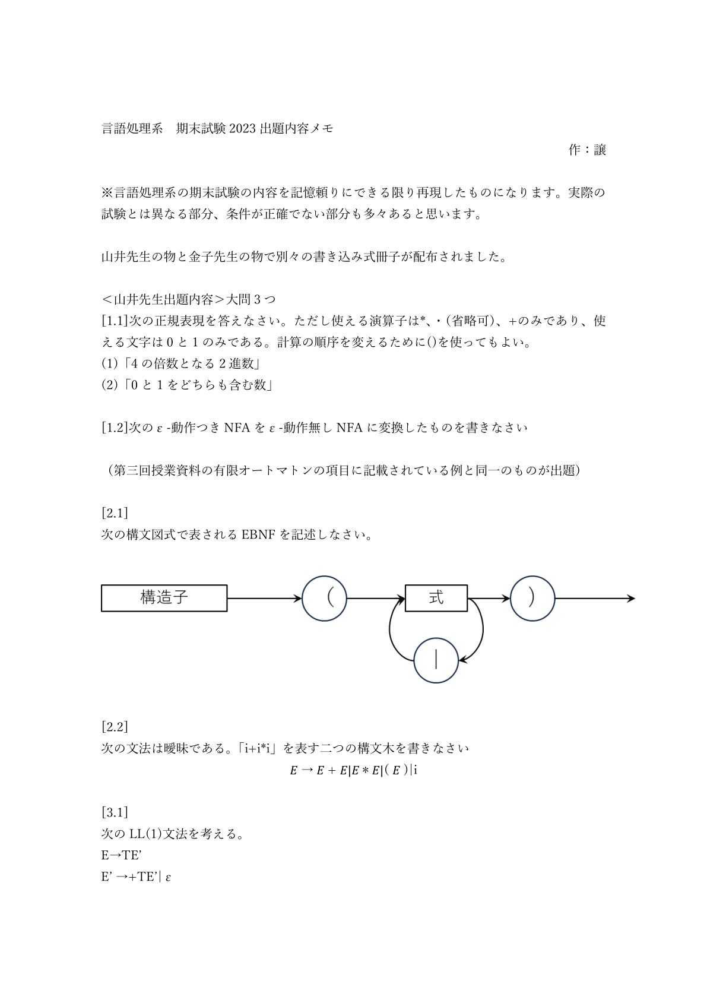
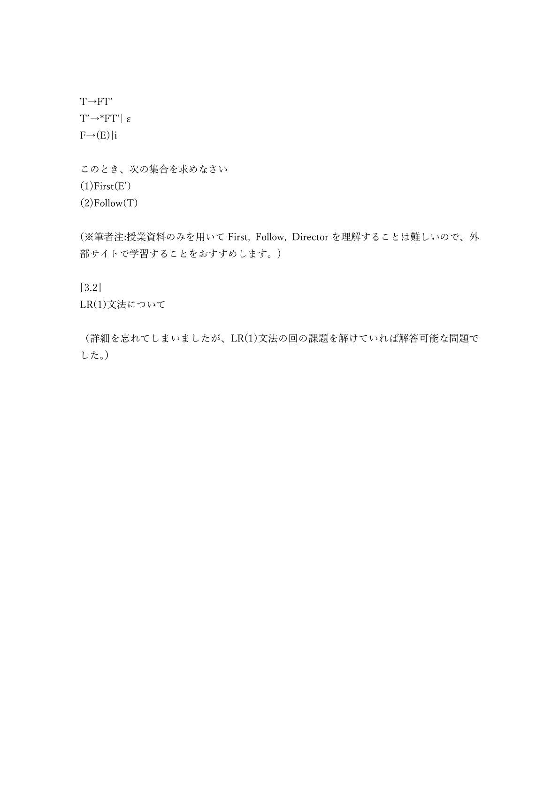
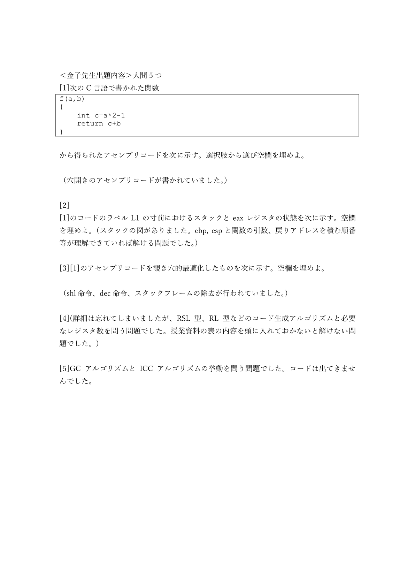
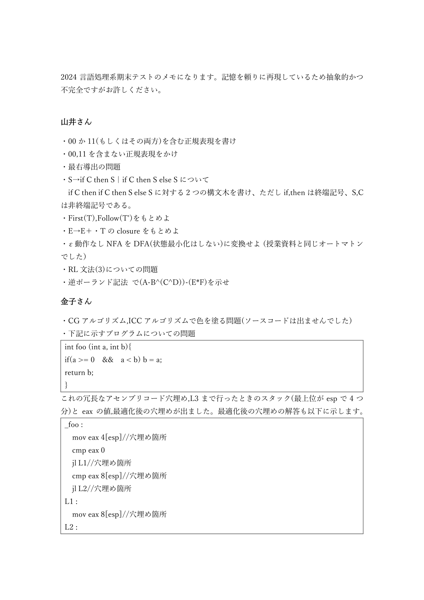
[2023 1.1 / 2024] 正規表現
問題文（記憶再現）: 「4の倍数となる2進数」「0と1をどちらも含む数」（2023）／「00か11(もしくはその両方)を含む」「00,11を含まない」（2024）を表す正規表現を書け。演算子は*・・（連接、省略可）・+のみ、文字は0と1のみ。
分類: exact（原資料の定義から機械的に導出可能）
対応範囲: 授業資料202603
解答:
| 条件 | 解答 |
|---|---|
| 4の倍数の2進数 | (0+1)*00 |
| 0と1をどちらも含む | (0+1)*0(0+1)*1(0+1)* + (0+1)*1(0+1)*0(0+1)* |
| 00または11を含む | (0+1)*00(0+1)* + (0+1)*11(0+1)* |
| 00,11を含まない | (01)*(ε+0) + (10)*(ε+1) |
解き方: 「含む」型は Σ*（条件）Σ*、「末尾条件」型は末尾を固定、「含まない」型は0と1が交互にしか並べない列挙で作る。
なぜそうなるか: 正規表現は集合演算（和・連接・閉包）の組み合わせなので、条件を「その部分文字列が存在する集合」と読み替えると機械的に組み立てられる。
よくある誤答: 「4の倍数」を10進数の直感で考えて末尾桁を1桁だけ固定してしまう（2進数では下2桁が00である必要がある）。
次に解くべき類題: 「3の倍数」「奇数個の1を含む」など閉包演算が絡む正規表現。
[2023 1.2 / 2024] ε-NFA/NFA→DFA変換
問題文（記憶再現）: 与えられたε-動作つきNFAをε-動作無しNFAに変換しなさい（2023、第3回授業資料と同一の例）／ε動作なしNFAをDFA（状態最小化はしない）に変換しなさい（2024、授業資料と同じオートマトン）。
分類: derived（変換手順は原資料に明示、具体的な状態集合は与えられた図に依存）
対応範囲: 授業資料202603
解答: 具体的な状態集合は出題されたNFAの図に依存するため一意の解答は示せない（derived）。ただし変換後のDFAは必ず「NFAの状態の部分集合」を状態とし、受理状態は元の受理状態を1つでも含む集合になる、という性質は共通して成り立つ。
解き方: (1) 各状態のε-closureを求める。(2) 入力記号ごとにε-closureを経由した遷移先集合を作る。(3) 元の受理状態をε-closureに含む状態を新しい受理状態にする。(4) NFA→DFAは部分集合構成法で、状態集合ごとに0/1の遷移先集合を作り、新しい集合が出なくなるまで繰り返す。
なぜそうなるか: NFAの「同時に複数の状態にいられる」性質を、DFAでは「状態の集合」という1つの状態として表現しなおすため。
よくある誤答: ε-closureに自分自身を含め忘れる／受理状態の判定を「集合の代表元だけ」で見てしまう。
次に解くべき類題: DFAの最小化（今回は問われていないが、区別できない状態をまとめる練習をしておくと理解が深まる）。
[2023 2.2 / 2024] 曖昧な文法の構文木
問題文（記憶再現）: 文法 E→E+E|E*E|(E)|i について「i+i*i」を表す二つの構文木を書け（2023）／S→if C then S|if C then S else S について「if C then if C then S else S」に対する2つの構文木を書け（2024）。
分類: exact
対応範囲: 授業資料202604
解答の考え方: i+i*i型は「+を先に適用する木」と「*を先に適用する木」の2通り。if-then-else型は「elseが外側のifに付く木」と「elseが内側のifに付く木（dangling-else）」の2通り。
解き方: 根から生成規則を展開し、葉を左から読んで元の文字列と一致することを確認しながら2通り描く。
なぜそうなるか: 文法に優先順位・結合規則が組み込まれていないため、同じ文字列に複数の導出木が対応してしまう（曖昧性の定義そのもの）。
よくある誤答: 2通りのうち1通りしか描かない、非終端記号と終端記号の対応を取り違える。
次に解くべき類題: 曖昧な文法を曖昧でない文法に書き換える問題（優先順位を文法規則で表現する）。
[2023 3.1 / 2024] First / Follow
問題文（記憶再現）: 文法 E→TE′, E′→+TE′|ε, T→FT′, T′→*FT′|ε, F→(E)|i について First(E′), Follow(T) を求めよ（2023）／First(T), Follow(T′) を求めよ（2024）。
補足: 2024年メモには文法規則そのものの記載がなく「First(T),Follow(T′)をもとめよ」という設問文のみが残っている。上記文法（2023年メモに明記されたもの）と同一の式文法が使われたという前提は推定であり、断定ではない。
分類: exact（2023年の文法を前提とする場合）
対応範囲: 授業資料202605
解答: First(E') = { +, ε }, Follow(T) = { +, ), ⊣ }（⊣は入力終端記号）。First(T) = { (, i }, Follow(T') = Follow(T) = { +, ), ⊣ }。
解き方: Firstは規則を左から展開し最初に現れる終端記号を集める（εを生成しうる非終端はさらに次を見る）。Followは「その非終端の直後に来られる終端記号」を、開始記号には入力終端記号⊣を追加しながら求める。
なぜそうなるか: Firstは「その記号列を展開したときに最初に現れうる終端記号」を求める操作なので規則を左から辿ればよく、Followは「その非終端の直後に置かれうる終端記号」なので、その非終端が出現するすべての文脈を集めて後続記号を集約する必要がある。εを生成しうる規則があると、その非終端が構文上「消える」場合があるため、後続の First/Follow をさらに伝播させる必要が生じる。
よくある誤答: εがFirstに含まれる非終端の場合にFollowを合成し忘れる。
次に解くべき類題: 同じ文法でのDirector集合・予測解析表の作成。
[2024] closure（LR(1)）
問題文（記憶再現）: E→E+・T のclosureを求めよ。
分類: derived
対応範囲: 授業資料202606
解答: 具体的な生成規則（TやFの定義）は使用する文法定義に依存するため一意の解答は示せない（derived）。ただしclosureの結果は必ず「元の項 E→E+・T」に加えて「点の直後の非終端Tを左辺に持つすべての生成規則を、点が先頭にある形で追加したもの」、さらにその追加項の点の直後が非終端であれば同様に再帰追加したものを含む、という構造になる。
解き方: 点（・）の直後が非終端Tなので、Tの生成規則を点が先頭にある形で追加する。さらに追加された項の点の直後が非終端であれば、その生成規則も追加する。新しい項が増えなくなったら終了。
なぜそうなるか: LRオートマトンの状態は「構文解析がどこまで進み、次に何が来るか」を表す項の集合である。点の直後が非終端Bのとき、次にBを展開する可能性があるなら、Bの生成規則も「まだ何も読んでいない状態」として同じ状態に含めておく必要があるため、closureで再帰的に追加する。
よくある誤答: 1段階だけ展開して、追加した項の点の直後をさらに展開し忘れる（再帰的に閉じていない）。
次に解くべき類題: GOTO(I,X)の計算、SLR解析表の作成。
[2023 3.2] LR(1)文法
問題文（記憶再現）: 詳細不明。2023年メモ本人のコメントでは「LR(1)文法の回の課題を解けていれば解答可能」とのみ記載。
分類: unsafe（生成しない）
根拠なし: 問題文の詳細が記憶再現メモに残っていないため、模範解答は作成しない。授業資料202606の演習問題を解き直すことを推奨する。
[2024] 逆ポーランド記法
問題文（記憶再現）: (A-B^(C^D))-(E*F) を逆ポーランド記法で示せ。
分類: derived（べき乗の結合則を授業資料の慣例に合わせる必要がある）
対応範囲: 授業資料202604
解答例: べき乗^を右結合とすると A B C D ^ ^ - E F * -。
解き方: 括弧内の演算を先に変換し、演算子をオペランドの直後に移す。優先順位が異なる場合は内側から外側に処理する。
なぜそうなるか: 逆ポーランド記法（後置記法）は演算子を両オペランドの直後に置くことで、括弧や優先順位規則がなくても計算順序が一意に定まる表記法だから。式の構文木でいえば、根を最後にたどる後行順（postorder）で記号を読んだ結果に一致する。
よくある誤答: べき乗の結合則（右結合か左結合か）を確認せずに変換してしまう。
[2023 1 / 2024] C関数→アセンブリ穴埋め
問題文（記憶再現）: C言語の関数（2023: f(a,b){int c=a*2-1; return c+b} / 2024: int foo(int a,int b){if(a>=0 && a<b) b=a; return b;}）から得られた冗長なアセンブリコードの空欄を選択肢から選んで埋める。
分類: derived（原資料のアセンブリ命令パターンを適用すれば埋まるが、具体的な選択肢は年度依存）
解答: 2024年メモに残る最適化後の骨格は下記の通り（記憶再現メモからの原文再現）。2023年の穴埋めの具体的な中身は記憶再現メモに残っていないため一意の解答は示せない（derived）。
_foo:
mov eax, 4[esp]
cmp eax, 0
jl L1
cmp eax, 8[esp]
jl L2
L1:
mov eax, 8[esp]
L2:
ret解き方: 引数の相対番地（4[esp], 8[esp]など）を先に特定し、比較・分岐命令が何を判定しているか日本語化してから、選択肢の中でその意味に合う命令を選ぶ。
なぜそうなるか: 関数の引数は呼び出し規約に従って決まった相対番地（esp/ebpからのオフセット）に積まれ、if文の条件分岐は「条件が成立しない場合に対応するブロックを飛び越すジャンプ命令」として実装されるため、番地と分岐条件を先に日本語化すれば、あとは命令の意味に対応する選択肢を機械的に選ぶだけでよい。
よくある誤答: 分岐条件を逆に読む（jlとjge等の取り違え）。
次に解くべき類題: for文・while文の制御フローに対する同種の穴埋め。
[2023 2 / 2024] ラベル直前のスタック/eax状態
問題文（記憶再現）: 直前の関数のアセンブリで、あるラベル（2023: L1直前 / 2024: L3まで進んだ時点）におけるスタック（最上位esp）とeaxレジスタの値を埋める。
分類: derived
対応範囲: 言語処理系（２）
解答: 具体的な数値は問題ごとの関数・ラベル位置に依存するため一意の解答は示せない（derived）。ただし「call命令の直前に戻りアドレスがpushされる」「push/popのたびにespが4バイト単位で増減する」という積み上げルールは共通して成り立つため、これに沿って命令ごとの表を作れば一意に求まる。
解き方: 関数呼び出し時に積まれる戻りアドレス・引数の順番を先に書き出し、命令を1つずつ実行した状態でespとeaxを更新していく表を作る。
なぜそうなるか: x86の呼び出し規約では、call命令が戻りアドレスを自動的にpushし、以降はpush/popの命令ごとにespが加減算されるという規則で一貫して動作するため、命令列を先頭から順に適用するだけでスタックとレジスタの状態を機械的に再現できる。
よくある誤答: push/pop/call/retでespが変化するタイミングを取り違える。
[2023 3 / 2024] 覗き穴最適化
問題文（記憶再現）: アセンブリコードを覗き穴的最適化したものの空欄を埋める。shl命令、dec命令、スタックフレームの除去が行われている（2023）。
分類: derived
対応範囲: 言語処理系（５）
解答: 具体的な空欄の中身は元のアセンブリコードに依存するため一意の解答は示せない（derived）。ただし2023年メモに明記された「shl命令への置換」「dec命令への置換」「スタックフレームの除去」という3種の書き換えパターンは確実に対策すべき出題形式である。
解き方: 前後2〜3命令を窓として見て、「同じ値の再代入」「2の累乗の乗除算」「不要なフレーム確保・解放」を探し、shl/decなどの短い命令に置き換える。
なぜそうなるか: 覗き穴最適化は命令列全体の意味を変えずに、限られた窓（数命令）の中で「より短い等価な命令」に置き換える局所最適化だから。例えば2倍の乗算は1ビット左シフト（shl）と数学的に等価であり、1減算はdec命令1つで表現できるため、意味を保ったまま命令数・実行時間を削減できる。
よくある誤答: 意味が変わっていないかを確認せずに命令を短縮してしまう。
[2023 4 / 2024] 必要レジスタ数
問題文（記憶再現）: RSL型・RL型などのコード生成アルゴリズムと必要レジスタ数を問う（2023）／汎用レジスタ3つの場面で {(a-1)*(b-2)+(c-3)*(e-4)*(d-5)}*{(e)-(f-6)} の推測レジスタ数と命令型を問う（2024）。
分類: derived
対応範囲: 言語処理系（４）
解答: 講義資料の表４．１（型判定）・表４．２（レジスタ数見積り、r(e)は変数・定数でr(e)=0から始める講義独自の方式）を手順どおりに適用すると、2024年の式 {(a-1)*(b-2)+(c-3)*(e-4)*(d-5)}*{(e)-(f-6)}（N=3）は次のようになる。
| 部分式 | 型 | r |
|---|---|---|
| a-1, b-2, c-3, e-4, d-5, f-6（葉同士の非可換演算） | L | 1 |
| (a-1)*(b-2) | RLまたはLR（r(e1)=r(e2)=1で同値） | 2 |
| (c-3)*(e-4) | RLまたはLR（r(e1)=r(e2)=1で同値） | 2 |
| ((c-3)*(e-4))*(d-5) | LR（r=2の側を先に計算） | 2 |
| 左の大項全体（上記2つの和） | RLまたはLR（r(e1)=r(e2)=2で同値） | 3（=N） |
| 右の大項 (e)-(f-6) | RL（r(e1)=0の非可換演算） | 2 |
| 全体（左の大項×右の大項） | LR（r(e1)=N=3の行は列によらず値N） | 3（=N） |
⚙ AI生成・信頼度: 中。全体の必要レジスタ数は3（N=3ちょうど）で、表４．１上はr(e1)=N・r(e2)<Nのマス（このマスはLRであり、r(e1)=r(e2)=Nのときだけに使うRSLではない）に該当するため、退避（RSL型）は不要という結論になる。過去問メモ自体には模範解答が残っておらず、この表はサイト側が講義資料の表４．１・４．２を機械的に適用して再計算したものである（一般的なSethi-Ullman式「葉=1、左右同数ならn+1」とは異なる講義独自の方式のため、混同しないこと）。試験本番では必ず講義資料の表４．１・表４．２を使って自分で再計算すること。
なぜそうなるか: 講義の方式ではr(e)は「その式を計算する間に同時に保持しておく必要がある最大レジスタ本数」を表し、変数・定数はすでに1本のレジスタまたはメモリにある値として扱うためr=0から始まる。部分式を組み合わせる際は、必要本数が多い側を先に計算し1本の結果に畳んでから少ない側を計算する（LR/RL型の選択）ことで、退避なしで済む必要本数を最小化できる。
よくある誤答: 変数・定数の葉をr=1から数えてしまう（正しくはr=0から）。左右の必要数が同数のときにn+1になる規則を、両方がN（使用可能な最大数）に達している場合にも適用してしまう（その場合はNのまま、RSL型で退避が必要になる）。
[2023 5 / 2024] GC/ICCアルゴリズム
問題文（記憶再現）: GCアルゴリズムとICCアルゴリズムの挙動を問う（2023、コードなし）／CGアルゴリズム,ICCアルゴリズムで色を塗る問題（2024、ソースコードなし）。
分類: unsafe寄り（derivedとしても弱い）
根拠なし: 記憶再現メモだけでは正式なアルゴリズム名・手順が確定できない。模範解答は作成しない。原資料のコード生成アルゴリズムの回を必ず確認し、「どの対象に色・印を付けるか」を表にする練習をすること。
予測演習問題 ⚙ AI生成
ここに載っている問題は、上の「過去問完全解答」に載っている実際の過去問（記憶再現）とは別物である。過去問メモ2年分で確認された出題パターン・トピック（出題予測セクションのランク付けを根拠にする）を踏まえて、AIが新規に作成した練習問題であり、本番の試験問題そのものではない。的中を保証するものではなく、「同じ考え方が使えるかどうか」を自己確認するための教材として使うこと。各問題には出題予測との対応関係（ランク）を明記した。解答は詳細を開くまで隠れる。
予測問題1: 正規表現 S+
出題予測との対応: 正規表現（S+）。過去問メモで「4の倍数」「00/11を含む・含まない」型が2年連続で出題されているため、同系統の別条件を出題形式として練習する。
問題: アルファベットを{0,1}とし、使える演算子は*・・（連接、省略可）・+のみとする。次の条件を表す正規表現をそれぞれ書け。
- 3個以上連続する1を含む2進数列
- 先頭が
00で始まり、末尾が11で終わる2進数列（長さ4以上）
解答を見る
解答:
(0+1)*111(0+1)*00(0+1)*11
解き方: (1)は「特定の部分文字列を含む」型なので Σ*（条件）Σ* の形に当てはめる。(2)は先頭・末尾の条件を固定し、間を (0+1)*（任意の0/1列、0回以上）で埋める。
よくある誤答: (1)で「1が3個」を「ちょうど3個」と読み違え、0*1110* のように前後を0だけに限定してしまう（「含む」なので前後に1が来てもよい）。(2)で最小長（0011）だけを想定し、間の任意列 (0+1)* を書き忘れる。
予測問題2: ε-NFA/NFA→DFA変換 S+
出題予測との対応: ε-NFA/NFA→DFA変換（S+）。過去問メモでは「授業資料と同じオートマトン」が出題されているため、変換手順そのものを別のオートマトンで練習する。
問題: 次のε-NFAを (1) ε動作なしNFAに変換し、(2) 部分集合構成法でDFAに変換せよ（状態最小化はしなくてよい）。アルファベットは{0,1}。
状態: q0(開始), q1, q2, q3, q4(受理)
q0 -ε-> q1
q1 -0-> q1, q1 -1-> q1, q1 -ε-> q2
q2 -0-> q3
q3 -1-> q4
q4 -0-> q4, q4 -1-> q4補足: これは「文字列のどこかに部分文字列 01 を含む」という正規表現 Σ*01Σ* に対応する標準的な構成（Thompson構成法）の一例である。
解答を見る
解答:
(1) ε-closureは ecl(q0)={q0,q1,q2}, ecl(q1)={q1,q2}, ecl(q2)={q2}, ecl(q3)={q3}, ecl(q4)={q4}。これを使って開始状態のε-closureからεなしNFAの遷移を作る。
(2) 部分集合構成法でDFAを構成すると次の5状態になる（Aが開始状態、D・Eが受理状態）。
| DFA状態 | 元のNFA状態集合 | 0 | 1 | 受理か |
|---|---|---|---|---|
| A | {q0,q1,q2} | B | C | × |
| B | {q1,q2,q3} | B | D | × |
| C | {q1,q2} | B | C | × |
| D | {q1,q2,q4} | E | D | ○ |
| E | {q1,q2,q3,q4} | E | D | ○ |
解き方: 開始状態Aのε-closureから出発し、0と1それぞれについて「遷移先をすべて集めてε-closureを取る」操作を、新しい状態集合が出なくなるまで繰り返す。元の受理状態q4を含む集合が新しいDFAの受理状態になる。
検算のヒント: 文字列 "010" はA→B→D→Eと遷移し、Eは受理状態なので受理される（"010"は"01"を含むので正しい）。文字列 "11" はA→C→Cで受理されない（"11"は"01"を含まないので正しい）。
よくある誤答: ε-closureを取る際に自分自身を含め忘れる。状態集合の一部が既出の集合と一致することに気づかず、同じ意味のDFA状態を重複して作ってしまう。
予測問題3: 曖昧な文法・構文木 S+
出題予測との対応: 曖昧な文法・構文木（S+）。過去問メモの「i+i*i」「if-then-else」型と同じ構造を、別の演算子で練習する。
問題: 次の曖昧な文法を考える。E → E - E | E / E | i。この文法から「i - i / i」を導出する2通りの構文木を描け。
解答を見る
解答: 2通りの木は次の2つの構造に対応する。
- 木1:
i - (i / i)（Eが最初にE→E-Eで分割され、右側のEがさらにE→E/Eに展開される） - 木2:
(i - i) / i（Eが最初にE→E/Eで分割され、左側のEがさらにE→E-Eに展開される）
解き方: 「i-i/i」という文字列に対して、根からどちらの生成規則（E→E-EかE→E/E）を先に適用するかで2通りの導出が作れることを確認し、それぞれ根から葉まで展開して木を描く。
なぜそうなるか: 文法に演算子の優先順位・結合則が組み込まれていないため、同じ文字列に対して「-を先に分ける導出」と「/を先に分ける導出」の両方が可能になる。しかも-と/は非可換な演算なので、木1と木2は計算結果まで異なる（i=3のとき木1は3-1=2、木2は2/3）という点で、単なる見た目の違いではなく実質的な曖昧性であることが分かる。
よくある誤答: 2通りの木のうち1通りしか描かない。非終端記号Eと終端記号iの対応関係を取り違え、葉がすべてiになっていない木を描いてしまう。
予測問題4: First / Follow S+
出題予測との対応: First/Follow/Director（S+）。過去問メモのE→TE'系文法とは別の文法で、First/Followの計算手順そのものを練習する。
問題: 次の文法について、First(A), First(B), First(S), Follow(A), Follow(B) を求めよ。
S → A B
A → a A | ε
B → b B | c解答を見る
解答:
- First(A) = { a, ε }
- First(B) = { b, c }
- First(S) = { a, b, c }
- Follow(A) = { b, c }
- Follow(B) = { ⊣ }（⊣は入力終端記号）
解き方: First(A)はA→aA（先頭a）とA→ε（εそのもの）から{a,ε}。First(B)はB→bB（先頭b）とB→c（先頭c）から{b,c}。First(S)は、S→ABでAがεを生成しうるので、First(A)からεを除いたもの({a})とFirst(B)({b,c})を合わせて{a,b,c}になる。Follow(A)は、S→ABでAの直後にBが来るのでFirst(B)={b,c}をそのまま使う（Bはεを生成しないので、Follow(S)を追加する必要はない）。Follow(B)は、S→ABでBが末尾にあり、B→bBでもBが末尾にあるので、結局Follow(S)（＝{⊣}、Sは開始記号なので入力終端記号を含む）がそのままFollow(B)になる。
よくある誤答: First(S)を求める際、AがεになりうることをFirst(B)と合成し忘れ、First(S)={a}だけにしてしまう。Follow(B)を求める際、B→bBの右辺にBが末尾に現れることを見落とし、Follow(B)の計算が不完全になる。
予測問題5: 実行時メモリ・スタックフレーム S+
出題予測との対応: 実行時メモリ・スタック・アセンブリ穴埋め（S+）。過去問メモのint foo(int a,int b)型と同じ形式の別の関数で、スタック追跡そのものを練習する。
問題: 次のC言語の関数を考える。
int g(int x, int y) {
int z = x + y;
return z * 2;
}g(3, 5) を呼び出したとき、mov ebp, esp（プロローグ）の直後における、x・yそれぞれのebpからの相対アドレス（オフセット）を答えよ。また、returnの直前のeaxの値を求めよ。
解答を見る
解答: 呼び出し規約（cdecl、引数は右から左にpush）に従うと、push y; push x; call gの順で積まれる。callで戻りアドレスがpushされ、その後プロローグでpush ebp; mov ebp, espが実行されるので、ebp基準では次のようになる。
| アドレス | 内容 |
|---|---|
| [ebp] | 呼び出し元のebp（保存された値） |
| [ebp+4] | 戻りアドレス |
| [ebp+8] | x |
| [ebp+12] | y |
eaxの値は、z = x + y = 3 + 5 = 8、戻り値は z * 2 = 16。よってreturn直前のeax = 16。
解き方: 引数は右から左にpushされる（cdecl）ため、最後にpushされた引数（この場合x）が戻りアドレスの直後、つまりebpから見て最も近い位置（[ebp+8]）に来る。次にpushされたy（最初にpushされた側）はその上（[ebp+12]）に来る。数値は関数の処理をそのまま計算すればよい。
よくある誤答: 引数の積まれる順序を左から右（x,yの順）だと勘違いし、xとyのオフセットを逆にしてしまう。[ebp]と[ebp+4]の役割（保存されたebpと戻りアドレス）を混同する。
予測問題6: LR closure S
出題予測との対応: LR(1) closure・GOTO・解析表（S）。過去問メモのE→E+・T型とは別の文法（括弧の対応を数える文法）でclosureの計算手順を練習する。
問題: 次の文法を考える。S' → S, S → aSb | ε。項 [S' → ・S] のclosureを求めよ。
解答を見る
解答: closure({[S′→・S]}) = { [S′→・S], [S→・aSb], [S→・] }
解き方: 出発点の項[S'→・S]は点の直後が非終端Sなので、Sの生成規則をすべて点が先頭にある形で追加する。S→aSbは[S→・aSb]として追加、S→ε（右辺が空）は[S→・]として追加（点の位置がそのまま右辺の末尾になる）。追加された2項はどちらも点の直後が非終端でない（aは終端記号、[S→・]は点の直後に何もない）ため、これ以上の追加は発生せず、ここでclosureは停止する。
よくある誤答: 右辺が空の生成規則（S→ε）を、closureで追加すべき項として扱い忘れる。あるいは追加した[S→・aSb]の点の直後（終端記号a）に対しても再帰的に生成規則を追加しようとしてしまう（closureで追加するのは点の直後が非終端記号のときだけ）。
予測問題7: 覗き穴最適化 S
出題予測との対応: 覗き穴最適化（S）。過去問メモのshl/dec/フレーム除去パターンを、別のコード片で練習する。
問題: 次のアセンブリコードを覗き穴最適化せよ。
mov eax, -4[ebp]
mov -4[ebp], eax
imul eax, 8
sub eax, 1
jmp L2
L2:補足: L2ラベルはこのコード片の中では他から参照されていないものとする。
解答を見る
解答:
mov eax, -4[ebp]
shl eax, 3
dec eax解き方: (1) mov eax,-4[ebp]の直後のmov -4[ebp],eaxは、読み出したばかりの値をそのまま同じ場所に書き戻しているだけなので削除できる。(2) imul eax,8は8=2³の乗算なのでshl eax,3（3ビット左シフト）に置換できる。(3) sub eax,1はdec eaxに置換できる。(4) 直後に自分自身へジャンプしているだけのjmp L2 / L2:は、L2が他から参照されないなら丸ごと削除できる。
よくある誤答: mov -4[ebp],eaxを「値を保存する重要な命令」だと思い込み削除しない（直前に同じ場所から読み出したばかりの値を書き戻しているだけなので、意味的に何も変えていないことに注意）。フラグ変化を利用する後続命令がある場合はimul→shl、sub→decの置換で挙動が変わりうる点を確認せずに置換してしまう（この問題では後続にフラグ依存命令がないため置換可能）。
予測問題8: 必要レジスタ数 S
出題予測との対応: 必要レジスタ数の見積もり（S）。過去問メモの複雑な式とは別の、より小さい式で表４．１・表４．２の適用手順を練習する。
問題: 汎用レジスタがN=2本使える場面で、式 (a+b)*(c-d) の必要レジスタ数と使うべき命令型を、講義資料の表４．１・表４．２に従って求めよ。
解答を見る
解答:
| 部分式 | 型 | r |
|---|---|---|
| a+b（葉同士の可換演算） | LまたはR | 1 |
| c-d（葉同士の非可換演算） | L | 1 |
| (a+b)*(c-d)（可換演算、r(e1)=r(e2)=1） | RLまたはLR（同値） | 2（=N） |
必要レジスタ数は2（＝N）。ちょうどN本で収まり、退避（RSL型）は不要。
解き方: まず葉（a,b,c,dすべて）をr=0とする。a+bは可換演算で両方とも葉（r=0）なので表４．２「r(e1)=0（可換）」×「r(e2)=0」の欄からr=1。c-dは非可換演算で両方とも葉なので表４．２「r(e1)=0（非可換）」×「r(e2)=0」の欄からr=1。外側の掛け算は可換演算でr(e1)=r(e2)=1（ともに0<r<N）なので、表４．２「0<r(e1)<N」×「0<r(e2)<N」の欄（RL:max(r(e1)+1,r(e2)) または LR:max(r(e1),r(e2)+1)）を計算すると、どちらの式でもmax(2,1)=2となり、r=2。
よくある誤答: 葉をr=1から数えてしまい、最終的な必要レジスタ数を実際より多く見積もる。非可換のc-dにRL型・LR型どちらでも良いと判断してしまう（非可換の場合、左のオペランドcを先に評価しないと結果が変わってしまうため、型が限定される）。
予測問題9: 逆ポーランド記法 A
出題予測との対応: 逆ポーランド記法（A）。過去問メモの式とは別の式で変換練習する。
問題: 式 (A+B)*(C-D)/E を逆ポーランド記法で示せ。
解答を見る
解答: A B + C D - * E /
解き方: 括弧の中を先に変換する。(A+B)→AB+、(C-D)→CD-。この2つを掛け算でつなぐとAB+CD-*。最後にEで割るので、演算子/を末尾に置いてAB+CD-*E/。
よくある誤答: 括弧内を変換する順序を間違え、演算子の順番が入れ替わってしまう（特に非可換の-や/を含む場合はオペランドの順序を保つことが重要）。
予測問題10: チョムスキー階層（短答） B・推定
出題予測との対応: チョムスキー階層・チューリングマシン（B）。過去問メモに直接の出題記録はないため、出題される場合の想定形式として短答形式で練習する（推定）。
問題: 文脈自由文法だが正規文法では表現できない言語の例を1つ挙げ、なぜ正規文法（有限オートマトン）では表現できないのかを1文で説明せよ。
解答を見る
解答例: 例: S → aSb | ε が生成する言語 { aⁿbⁿ | n≥0 }（aとbが同数だけ並ぶ文字列）。
理由: 有限オートマトン（正規文法に対応する機械）は状態数が有限であるため、「これまでに読んだaの個数」を無制限に覚えておくことができず、後半で読むbの個数がaの個数と一致するかを判定できない。
よくある誤答: 「aⁿbⁿ」のような例を挙げずに「文脈自由文法の方が強力だから」とだけ書いてしまい、具体例と機構上の理由（状態数が有限で無制限のカウンタを持てない）の両方を示せていない。
公式・定義チートシート ⚙ AI生成信頼度: 高
正規表現
r+s: 和集合 / rs: 連接 / r*: 0回以上の繰り返し。「含む」は Σ*（条件）Σ*。
ε-closure
状態qからεだけで到達できる状態の集合。NFA→DFA変換の全ステップの起点。
First/Follow
First(α): αの導出結果の先頭に来る終端記号（εを含みうる）。Follow(A): 非終端Aの直後に来られる終端記号。開始記号のFollowには⊣を含む。
LL(1)条件
同じ非終端の複数規則のDirector集合が互いに交わらなければ、1トークン先読みで決定できる。
LR closure
点の直後が非終端Bなら、Bの生成規則を点が先頭にある形で追加。新項が増えなくなるまで繰り返す。
SLR/LR/LALR
SLRはFollow集合で還元を制限。正準LRは先読み記号付きの項。LALRはLR項を一部併合したもの（yacc/bisonで採用）。
スタックフレーム
esp: 現在のスタック最上位。ebp: フレーム基準点。eax: 返り値によく使われる汎用レジスタ。
call/ret
callで戻りアドレスをpush、retでそれをpopしてジャンプする。
覗き穴最適化の典型パターン
冗長mov削除／乗除算のshl・shr化／±1のinc・dec化／不要スタックフレーム除去／連続ジャンプの短縮。
必要レジスタ数（講義独自の表４．１・表４．２、Sethi-Ullman型の一種）
変数・定数（葉）はr=0。可換演算でr(e1)=r(e2)（ともに0<r<N）ならn+1。それ以外は表４．１で型（RSL/RL/LR/R/L）を決め、表４．２の対応する式で計算する。r(e1)=r(e2)=N（両方とも使用可能な最大数に達している）の場合だけはRSL型になり、値はN（n+1にはならず退避が必要）。
逆ポーランド記法
演算子をオペランドの直後に置く。括弧不要。優先順位の低い演算子ほど後ろに出る。
チョムスキー階層
正規文法 ⊂ 文脈自由文法 ⊂ 文脈依存文法 ⊂ 句構造文法（それぞれ対応するオートマトンはDFA/NFA、PDA、線形拘束オートマトン、チューリングマシン）。
O×・穴埋め・短答フレーズ集 ⚙ AI生成
過去問に実際に出た文はそのまま掲載する。似た誤答パターンを作る場合は「⚙ AI生成」を明示し、×の理由を1文で即答できるようにする。
| フレーズ（原文/想定） | 種別 | 正誤・答え | 理由（1文） |
|---|---|---|---|
| 「00,11を含まない」正規表現は0と1が交互にしか並ばない列を基本とする。 | 短答フレーズ（原文に基づく） | ○ | 00,11という連続を禁止すると必ず0と1が交互になるため。 |
| ε-NFAからDFAへの変換では最初にε-closureを求める。 | 短答フレーズ（原文に基づく） | ○ | ε-closureを求めないと、εを介して到達できる状態を取りこぼすため。 |
| NFAからDFAへの変換では状態数は必ずNFAの状態数以下になる。 ⚙AI生成 | O×（AI生成の誤答パターン） | × | 部分集合構成法ではNFAの状態集合の部分集合がDFAの状態になるため、最大で2^n（NFAの状態数がnのとき）まで増えうる。 |
| First(E′)にεが含まれるとき、Follow(E′)の要素はFollow(E)にも含める必要がある。 ⚙AI生成 | O×（AI生成の確認問題） | ○ | εを生成しうる規則の場合、後続の文脈（Follow）を上位の非終端にも伝播させる必要があるため。 |
| LRのclosureでは、点の直後が終端記号のときだけ項を追加する。 ⚙AI生成 | O×（AI生成の誤答パターン） | × | closureで項を追加するのは点の直後が非終端記号のときであり、終端記号のときは追加しない。 |
| 覗き穴最適化は「命令列全体」を一度に書き換える大域的な最適化である。 ⚙AI生成 | O×（AI生成の誤答パターン） | × | 覗き穴最適化は前後数命令という局所的な窓の中だけを見て置き換える局所最適化である。 |
| 必要レジスタ数の見積もりで左右の子の必要数が同じ場合、親の必要数は変わらない。 ⚙AI生成 | O×（AI生成の誤答パターン） | × | 左右が同数でまだレジスタに余裕がある場合（0<r<N）は、片方を先に計算して保持する必要があるため親はn+1になる。ただし両方が使用可能な最大数Nに達している場合は、これ以上増やせずNのまま（RSL型で退避が必要）になる点に注意。 |
| 「i+i*i」の曖昧性は、演算子の優先順位が文法規則に組み込まれていないために生じる。 ⚙AI生成 | O×（AI生成の確認問題） | ○ | 優先順位・結合則を文法の階層構造で表現していない文法は複数の構文木を許してしまう。 |
直前15分復習 ⚙ AI生成
0〜3分: S+最重要
正規表現4パターン（含む/含まない/両方含む/末尾条件）を頭の中で言えるか確認。ε-NFA→DFAは「ε-closure→部分集合構成」の2ステップだけ再確認。
3〜7分: 公式・定義
First/Followの定義（先頭に来る記号／直後に来られる記号）、LR closureの追加条件（点の直後が非終端）、esp/ebp/eaxの役割を音読する。
7〜11分: O×フレーズ
上記「O×・穴埋め・短答フレーズ集」を通読し、×の理由を1文で言えるか確認する。
11〜14分: 計算ミス防止
正規表現の「含む/含まない」を取り違えない。分岐命令（jl等）の向きを逆にしない。必要レジスタ数で「同数ならn+1」を忘れない。べき乗の結合則を確認する。
14〜15分: 最終確認
未判読・要確認セクションに残っている項目がないかだけ最後に見る。
最終チェックリスト ⚙ AI生成
未判読・要確認箇所
- 2023年メモ[3.2] LR(1)文法の問題文詳細（記憶再現メモに残っていない、模範解答なし）。
- 「GC/CG/ICCアルゴリズム」の正式名称・手順（年度により表記が揺れており確証が弱い、原資料要確認）。
- 「RL文法(3)」（2024メモ）が具体的に何を指すか不明（推定表記）。
授業回ごとの0から理解する解説
ここから先は、授業資料12回分を「0から理解する」解説記事として書き直したものである。原文の逐語コピーではなく、各回の概念を定義・直感・具体例・図解の順に説明し直している。原資料にない事実は書かず、補足には必ず「補足:」と明記した。全ページの原文（テキストと画像）は要約・改変せずそのままフォルダ内 md/sources/ に保存してあり、各回の記事末尾のリンクから参照できる。
山井先生パート 0から理解する（形式言語・オートマトン・構文解析）
202601: ガイダンスと言語処理系の基礎——コンパイラは「翻訳者」である
この回は何を学ぶか: 講義のガイダンス（前半＝山井担当・後半＝金子担当という分担、評価方法、成績分布）に続いて、「言語」とは何か（自然言語・人工言語・形式言語の違い）、言語処理系（コンパイラ・インタプリタ）の基本モデルであるT図式、コンパイラ内部の処理過程（字句解析からエラー処理までの10項目）、そしてコンパイラ生成ツール（lex・yacc）を学ぶ。
なぜ学ぶのか: 第2回・第3回で学ぶ形式言語理論・正規表現・有限オートマトンは、実はすべて「コンパイラの中の字句解析（と構文解析）」という一段階のための道具である。先にコンパイラ全体の地図を頭に入れておくことで、以降の理論が「結局どこで使われるのか」を見失わずに済む。
言語とは何か——自然言語・人工言語・形式言語
まず「言語」を大きく2種類に分ける。自然言語は日本語・英語・フランス語のように人間が自然に使う言語で、文法があるようでいて実は相当に曖昧である。授業資料が挙げる有名な例が英文 "Time flies like an arrow" である。単語ごとに複数の品詞・意味を持ちうる（Time＝名詞/形容詞/動詞、flies＝動詞の三単現/名詞の複数形、like＝動詞/前置詞）ため、少なくとも次の6通りの解釈が可能だと資料は述べている。
- 時間は矢のように飛ぶ（光陰矢の如し）
- 矢のような蝿を時間測定せよ
- 蝿を矢のように時間測定せよ
- 時蝿（というハエの一種）は矢を好む
- 矢のような時蝿
- Time（雑誌）は矢のように飛ぶ
これに対して人工言語は人間が意図的に設計した言語で、エスペラント語（国際補助語）やクリンゴン語（芸術言語）のような自然言語もどきもあれば、C・Java・Ruby・Pythonのようなプログラミング言語、Verilogのようなハードウェア記述言語、SQLのようなデータベース言語も含まれる。そしてこの中でも特に、形式言語は「生成文法」により定義された「記号列」の「集合」として数学的に厳密に定義されるものを指し、計算機モデル（オートマトン）と密接な関係を持つ。プログラミング言語は人工言語であると同時に、（少なくとも構文の面では）形式言語でもある。
言語処理系の基本モデル：T図式で見る翻訳系と通訳系
言語処理系とは、「高水準言語で記述されたプログラムを実行するためのソフトウェア」と定義される。高水準（高級）言語は記述の抽象度が高くハードウェアの違いを意識しなくてよい言語（C, Java, Pythonなど）、低水準（低級）言語はハードウェアに依存する言語（機械語・アセンブリ言語）を指す。両者の中間に位置する「中間言語」も存在する（例えば後述するJBC）。
言語処理系の働きを図式化したものがT図式（Tombstone diagram）である。4種類の構成要素がある。
- 計算機（machine）: 実際にプログラムを動かす土台。
- プログラム: 言語Lで書かれ、機能fを持つもの。
- 翻訳系（translator）: 言語S（原始言語）を言語T（目的言語）に変換するもの（コンパイラはこの一種）。
- 通訳系（interpreter）: 言語Lで書かれたプログラムを「そのまま」実行するもの（計算機M上で動作する）。
具体例として、Rubyで書かれたsortプログラムをx86アーキテクチャの計算機上で実行する場合を考える。sortプログラム自体はRuby語で書かれているので、そのままではx86の計算機は実行できない。そこで「Ruby言語で書かれたプログラムをx86上で実行できるRubyインタプリタ」が必要になる。ここで2つの「一致」が要求される。1つは、インタプリタ自身がx86上で動く機械語で書かれていること（インタプリタの動作環境とM=x86が一致）、もう1つは、インタプリタが解釈できる言語（Ruby）とsortプログラムの言語（Ruby）が一致していることである。この「一致が必要」という制約が、次のブートストラップ技法の話につながる。
コンパイラとインタプリタ、そしてブートストラップ
コンパイラ（compiler）は高水準言語を低水準言語に変換する翻訳系の一種であり、アセンブラ（assembler）はアセンブリ言語を機械語に変換する翻訳系の一種である。両者はコンパイラ→アセンブラという順で連携して動くことが多い（C言語ソース→アセンブリ→機械語、という流れ）。一方インタプリタの例としては、シェル（sh, bashなど）・Ruby・Python・JavaScriptが挙げられている。
コンパイラとインタプリタは以下のように対比される。
| 比較項目 | コンパイラ | インタプリタ |
|---|---|---|
| 実行方法 | 低水準言語へ変換したプログラムをOSが直接実行 | インタプリタがプログラムを読み込んで実行 |
| 実行速度 | 高速 | 低速 |
| 処理系の移植 | 移植先の計算機に依存 | 比較的容易 |
| 開発効率 | 非効率的（対話性に乏しい） | 効率的（対話性に富む） |
一部の言語処理系は両者を組み合わせる。Javaでは、Javaコンパイラ（javac）がソースをJBC（Java Byte Code、中間言語の一種）に変換し、それをJava仮想マシン（java）が各計算機上でインタプリタ的に実行する。これにより「一度コンパイルすればどの計算機でも動く（Write Once, Run Anywhere）」が実現される。
もう一つの重要な概念がブートストラップ技法（bootstrapping）——高水準言語LのコンパイラをL自身で記述する技法である。例えばC言語のコンパイラをC言語で書く場合、最初の計算機M1向けにはC言語コンパイラをどうにかして（他の言語や手作業で）用意する「鶏と卵」の苦労が必要になるが、一度M1用のコンパイラができれば、それを使ってM2用のコンパイラを（M1上で動く、M2向けの目的コードを出す「クロスコンパイラ」として）作成でき、以降の移植が容易になる。名前の由来は諸説あるが、ほら吹き男爵（ミュンヒハウゼン男爵）が底なし沼から自分のブーツのひも（ブートストラップ）を引っ張って自力で脱出した逸話に由来するとされる。
コンパイラ内部の10段階：字句解析からエラー処理まで
コンパイルを含む一般的な処理の流れは、ソース（原始）プログラム→プリプロセッサ→展開後ソースプログラム→コンパイラ→目的アセンブリプログラム→アセンブラ→再配置可能機械語プログラム→（他の機械語プログラム・ライブラリと合わせて）ローダ/リンカ→実行形式プログラム、という順である。GNU Cコンパイラ（gcc）はこの全過程を1つのコマンドで実行でき、gcc -E（プリプロセッサの結果のみ出力）、gcc -S（アセンブリプログラムを出力）、gcc -c（再配置可能機械語プログラムを出力）のようにオプションで途中結果を取り出せる。
このうち「コンパイラ」内部はさらに次の処理過程に分かれる。授業資料では、字句解析・構文解析・意味解析の3つを主に山井パート（本サイトのこの前半部分）、中間コード生成以降を金子パート（後半）が担当すると位置づけている。
C言語の代入文 h = h0 - g / 2 * t * t;（自由落下運動の位置を計算する式）を例に、各段階でプログラムがどう変化するかを追ってみる。
- 字句解析（lexical analysis）: プログラムを単語（終端記号・トークン）に分割する処理。空白やコメントは無視される。上の式は「識別子(h)」「=」「識別子(h0)」「-」「識別子(g)」「/」「整数(2)」「*」「識別子(t)」「*」「識別子(t)」「;」というトークン列に分解される。これを行うプログラムを字句解析器（scanner）と呼ぶ。
- 構文解析（syntactic analysis, parsing）: 構文規則（文法）に基づいて入力文の構造を決定する処理。トークン列から構文木（式→項→因子…という階層構造の木）を組み立てる。
- 意味解析（semantic analysis）: 変数の型・未定義・二重定義などを検査し、数式の型を自動変換する処理。例えば
gがdouble型なら、除算がdouble型の除算になり、整数リテラル2をdouble型へキャストする必要が生じる、といった判断をここで行う。 - 中間コード生成: ハードウェアに依存しないコードを生成する処理。「4つ組（3番地コード）」表現がよく使われ、(演算子, 引数1, 引数2, 結果の格納先) の形で書く。例えば
(ddiv, g, temp1, temp2)は「temp1で割った結果をtemp2に入れるdouble型除算」を意味する。 - コード最適化: 中間コード（あるいは機械語）をより高速・省メモリになるよう変更する処理。例えば「2で割る」を「0.5を掛ける」に変える（int→doubleへのキャストや実数除算より高速）、一度しか使われない一時変数を使い回してメモリ使用量を削減する、などの工夫が行われる。
- 目的コード生成: ハードウェアに依存した再配置可能コードを出力する処理。x86-64であれば
movsd・mulsd・subsdのような実際の機械語（アセンブリ）命令列になる。 - シンボル表管理: 識別子の名前とその属性（変数名・関数名、型、サイズ、番地など）を記録する処理。処理系によっては予約語（while, forなど）も表に含める。
- エラー処理: 主に構文解析・意味解析の段階で発生する（目的コード生成時にもリンクエラーとして発生しうる。字句解析段階でのエラーは稀）。最初のエラーで処理を止めるのは不親切なので、できる限り処理を続けて他のエラーも発見し、エラーの理由も適切に表示すべきとされる。あらゆるエラーを想定する必要があるため実装は結構困難である。
コンパイラ生成ツール——lexとyacc
コンパイラ生成ツール（コンパイラジェネレータ）とは、言語の定義情報からコンパイラを自動生成するプログラム（トランスレータ）のことだが、実際には完全な自動生成はまだ難しく、実用化されているのは次の2種類にとどまる。
- 字句解析器生成ツール:
lex（lexical analyzer generator）。UNIX標準コマンドでPOSIX（Portable Operating System Interface、OS互換性を担保する規格）標準でもある。flex（fast lexical analyzer generator）はlexの機能拡張版で、無料のオープンソフトウェアとして提供される。 - 構文解析器生成ツール:
yacc（yet another compiler compiler）。これもUNIX標準コマンド・POSIX標準。bisonはその機能拡張・無料オープンソフトウェア版で、yaccが動物のヤク（yak）に似ていることに由来して名付けられたとされる。
これらのツールは第7回（字句解析・構文解析プログラム）や本サイトの202603（lexの実例）でより具体的に扱われる。
この回のまとめ: 言語は自然言語・人工言語・形式言語に分かれ、プログラミング言語は人工言語かつ形式言語である。言語処理系はT図式（翻訳系／通訳系）で図式化でき、コンパイラは事前に全部翻訳、インタプリタはその場で実行という違いを持つ。コンパイラ内部は字句解析→構文解析→意味解析→中間コード生成→コード最適化→目的コード生成という主処理に、シンボル表管理とエラー処理が並行して関わる10段階からなる。lex（字句解析器生成）・yacc（構文解析器生成）はこの一部を自動化するツールであり、以降の回で実際に使う。
原文（全ページのテキストと画像）は md/sources/202601.md を参照してください。
202602: 形式言語理論——チョムスキー階層とチューリングマシン、そして「解けない問題」の存在
この回は何を学ぶか: 形式文法の正式な定義 G=(N,Σ,S,P) と導出の記法、形式文法の制限度合いによって言語を4クラスに分けるチョムスキー階層、計算機を極限まで単純化・理想化した仮想機械であるチューリングマシン（TM）の構造と形式的定義・動作例、無限集合の「大きさ」を測る濃度（cardinality）とカントールの対角線論法、そして「任意のプログラムが停止するかどうかを判定するプログラムは作れない」ことを示す停止性問題を学ぶ。
なぜ学ぶのか: 次回（202603）で学ぶ正規表現・有限オートマトンは、チョムスキー階層でいう最も制限の強いクラス（Type 3・正規言語）にあたる。先に階層全体の地図——4段階のクラスとそれぞれに対応するオートマトンの強さ——を知っておくことで、次回の内容が「4段階のうち一番単純なクラス」であることが実感できる。また停止性問題は、コンピュータで「原理的に解けない問題がある」ことを示す、計算理論の土台となる結果である。
形式文法の定義と導出——G=(N, Σ, S, P) を読み解く
形式文法（句構造文法）は4つ組 G=(N, Σ, S, P) で定義される。
- N: 非終端記号（Nonterminal Symbol）の有限集合。非終端記号とは、生成規則によって別の記号列に置き換えることができる記号。（N∩Σ=∅）
- Σ: アルファベット（終端記号の有限集合）。終端記号（Terminal Symbol）は、それ以上置き換えられない、最終的に文を構成する記号。
- S: 開始記号（S∈N）。導出はここから始まる。
- P: 生成規則の有限集合。1つの生成規則は α→β という形をしており、αは（N∪Σ）*の中に非終端記号Aを少なくとも1つ含む記号列、βは（N∪Σ）*の任意の記号列（＝Nの記号とΣの記号を好きなだけ混ぜた列）である。
ある記号列に生成規則を1回適用して別の記号列に書き換えることを導出（derivation）と呼び、α⇒βと書く。α₁⇒α₂⇒…⇒αₙ（n≥0）とたどれるとき、α₁⇒*αₙ（0ステップ以上での導出）と表記し、n≥1のときはα₁⇒⁺αₙ（1ステップ以上での導出）と表記する。この記法を使って、文法Gが生成する言語 L(G) は次のように定義される。
L(G) = { ω | ω∈Σ*, S ⇒* ω }
つまり「開始記号Sから0ステップ以上の導出でたどり着ける、終端記号だけからなる記号列すべての集合」がL(G)である。
授業資料はN={S, B}, Σ={a, b, c} を使った例を示し、S→ε を含む生成規則Pから、最終的に L(G) = { aⁿbⁿcⁿ | n≥0 } という言語が生成されることを導出過程つきで説明している（n=0のときε、n=1のとき"abc"、n=2のとき"aabbcc"…という具合に、a・b・cの個数が常に一致する文字列だけが生成される）。この生成規則Pには "BB→ab" のような、左辺が2記号以上からなる規則が含まれており、これは後述するチョムスキー階層のType 2（文脈自由文法、左辺は必ず非終端記号1個）を超える表現力が必要であることを示す好例になっている。※ 元資料のこの生成規則の詳細（BとB、bとcの入れ替えを行う具体的な規則）はPDFの数式表記が崩れており正確な再現が難しいため、正確な規則は md/sources/202602.md の該当ページの図を直接確認してほしい。ここでは「a,b,cの個数を揃えるには単純な A→α 型の規則だけでは足りない」という結論部分のみを確実な情報として扱う。
導出の練習として、自分で作った別の文法G′でも確認してみる。G′=(N′={S}, Σ′={0,1}, S, P′={S→0S1, S→ε}) とすると、S⇒0S1⇒00S11⇒0011 という導出により "0011"（n=2の場合）が得られる。これを繰り返せば L(G′) = { 0ⁿ1ⁿ | n≥0 } となることが分かる。こちらはBのような補助記号を使わずに済む、より単純な文脈自由文法の例である。
チョムスキー階層——4段階の文法制限とオートマトンの対応
チョムスキー階層は、1956年にNoam Chomskyが発表した、形式文法の生成規則にかける制限の強さによって言語クラスを分類する体系である。A,B∈N、a∈Σ、α,β∈(N∪Σ)*、γ∈(N∪Σ)⁺（1文字以上）として、次の4段階がある。
| 階層 | 言語クラス | 文法 | 生成規則の形 | 対応するオートマトン |
|---|---|---|---|---|
| Type 0 | 帰納的可算言語 | 句構造文法 | α→β（制限なし） | チューリングマシン |
| Type 1 | 文脈依存言語 | 文脈依存文法 | αAβ→αγβ | 線形有界オートマトン |
| Type 2 | 文脈自由言語 | 文脈自由文法 | A→α | プッシュダウンオートマトン |
| Type 3 | 正規言語 | 正規文法 | A→a または A→aB | 有限オートマトン |
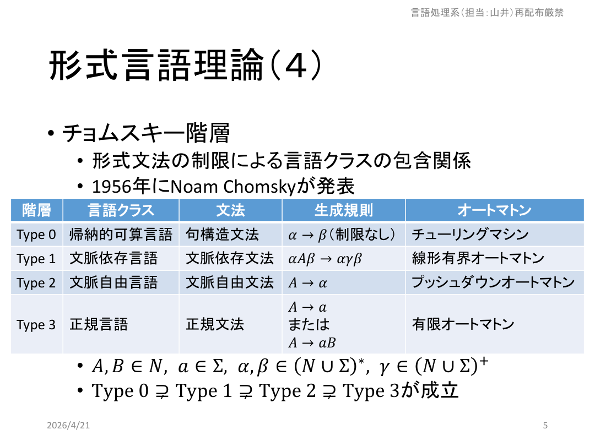
そして Type 0 ⊋ Type 1 ⊋ Type 2 ⊋ Type 3 という真の包含関係が成立する（数字が大きいほど制限が強く、生成できる言語のクラスは狭くなる）。それぞれの制限が何を意味するかを直感的に説明すると次のようになる。
- Type 0（制限なし）: 左辺αに非終端記号が1つでも含まれていれば、右辺βは何でもよい。表現力はチューリングマシンと完全に同じ。
- Type 1（文脈依存）: 非終端記号Aを書き換えられるのは「αとβという特定の文脈（前後の記号列）に囲まれているとき」に限られ、しかも書き換え後のγは1文字以上（つまり記号列の長さが減らない）。前の節で見た aⁿbⁿcⁿ の例のように、「個数を揃える」といった文脈を参照する言語はこのクラスに属する。
- Type 2（文脈自由）: 左辺は非終端記号A1つだけで、周囲の文脈に関係なく書き換えられる。プログラミング言語の構文（BNFで書かれる文法、本サイトの202604で扱う）はほぼこのクラスに属する。
- Type 3（正規）: 右辺はA→a（終端記号1つ）またはA→aB（終端記号1つ＋非終端記号1つ）の形に限られる、最も制限が強いクラス。次回学ぶ正規表現・有限オートマトンがちょうどこのクラスに対応する。
チューリングマシンとは何か——構造と形式的定義
チューリングマシン（Turing Machine, TM）は、計算機を単純化・理想化した仮想機械で、イギリスの数学者Alan Turingが1936年に発表した。構造は3つの部品からなる。
- 有限制御部: 状態の有限集合を持ち、初期状態と受理状態がある（現在の「モード」を保持する部分）。
- 入力テープ: 左端だけが存在し、右方向には長さ無限大。初期状態で入力が格納されている。
- テープヘッド: 入力テープの読み書きに使い、1回の動作で左右どちらかに1マス移動できる。
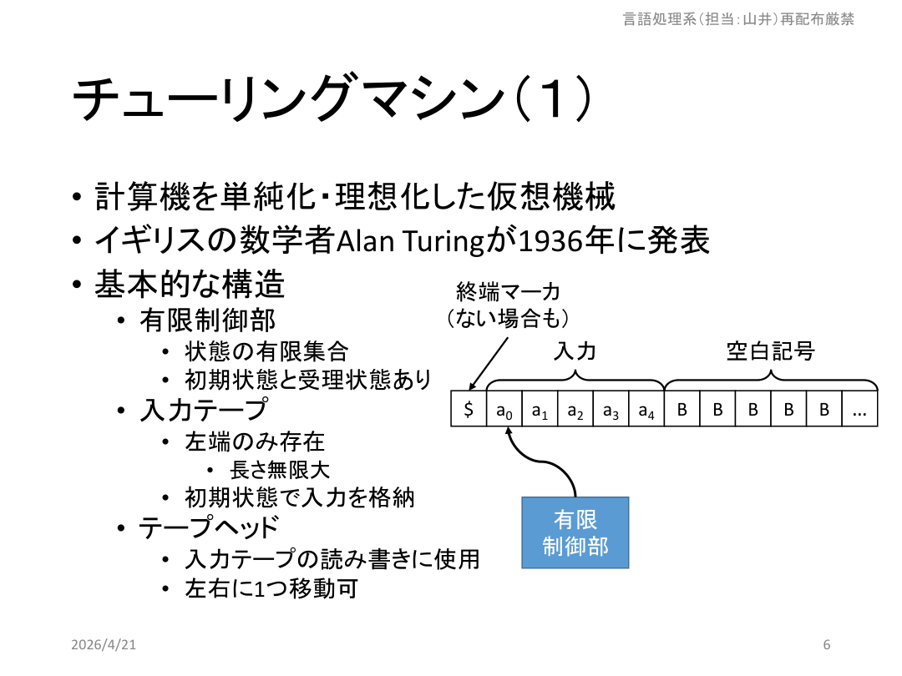
形式的には、TM M は7つ組 M=(Q, Σ, Γ, δ, q0, B, F) で定義される。
- Q: 状態の有限集合
- Σ: 入力記号の集合（入力アルファベット）
- Γ: テープ記号の集合（テープアルファベット）で、Σ⊂Γ（テープには入力記号以外の記号、たとえば空白記号も書ける）
- δ: 遷移関数。Q×Γ→Q×Γ×{L, R} の写像で、入力は（現在の状態, テープヘッド位置の記号）、出力は（次の状態, 書き換え後の記号, テープヘッドの移動方向）
- q0: 初期状態（q0∈Q）
- B: 空白記号（B∈Γ−Σ、つまり入力記号ではない特別な記号）
- F: 受理状態の集合（F⊆Q）
δ(q, X) が未定義であれば、そのTM Mは停止する。そのとき現在の状態qがFに含まれていれば受理、含まれていなければ不受理となる。「δが未定義＝即座に不受理」ではなく、「未定義になった時点の状態が受理状態かどうか」で判定される点に注意したい。
チューリングマシンの動作——回文型の文字列を判定する例
授業資料は、L = { w wᴿ | w∈{0,1}* }（wᴿはwを反転させた文字列。つまり「前半と後半が対になった、偶数長の回文」の集合）を受理するTM Mを具体例として示している。
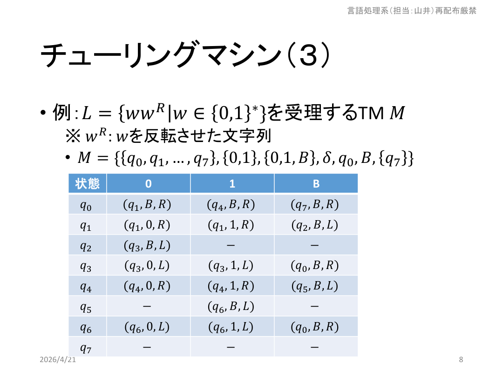
このTMの動作原理は次のように説明されている。テープの一番外側（最初と最後）の記号を比較し、同じであれば両方とも空白記号Bに置き換えて内側へ進む。これを繰り返して全部Bになれば受理、途中で記号が食い違えば不受理、という「外側から内側へ挟み込むように消していく」アルゴリズムである。
授業資料では実際に2つの入力例でこの動作を確認している。入力 "1001" は最初と最後がともに1、次に内側の "00" もともに0で一致するため、最終的にすべてBになり受理される（"1001" は "10"+"01" のように w="10", wᴿ="01" の形になっている）。一方、入力 "101" は長さが奇数（ww ᴿの形は必ず偶数長になるため、奇数長の時点で原理的にこの形になり得ない）であり、外側の "1...1" を消した後に単独の "0" が残ってしまい、比較すべき相手がいなくなって不受理となる。
この例からもわかる通り、チューリングマシンは「文を受理するかどうか」という観点だけで能力を判断し、テープの使用量や計算時間（導出ステップ数）は問わない——これが次回以降扱われるNP完全などの「計算複雑性」の議論とは異なる点である。また、意外なところではsedコマンドのようなテキスト処理ツールもチューリング完全であることが知られている（補足: これはWikipediaや外部記事で言及されている興味深い事実で、授業資料でも参考リンクとして紹介されている）。
無限集合の濃度——可算集合とカントールの対角線論法
有限集合であれば、A⊂B ならば必ず |A| < |B|（要素数の比較）が成り立つ。ところが無限集合では話が違う。無限集合の「大きさ」は濃度（cardinality）という概念で測られ、集合Aと集合Bの間に全単射（1対1対応）が存在するとき |A|=|B| と定義する。この定義のもとでは、A⊂B であっても |A|<|B| になるとは限らない。
可算（無限）集合（countable set）とは、自然数全体の集合ℕとの間に全単射が存在する集合のことで、最小の無限集合とされ、その濃度をℵ₀（アレフ・ゼロ）と表す。整数全体の集合ℤは明らかにℤ⊋ℕだが、0↔0, 1↔1, -1↔2, 2↔3, -2↔4, … のように自然数と1対1に対応づけられるため、|ℤ|=|ℕ| となる。同様に有理数全体の集合ℚも、（右上図の対角線状に数え上げていくような方法で）自然数との間に全単射が作れるため |ℚ|=|ℕ| である。「整数や有理数の方が自然数よりずっと多そうなのに、濃度としては同じ」というのが直感に反する面白いポイントである。
ところが実数全体の集合ℝは自然数ℕとの間に全単射が存在しない。この証明に使われるのが有名なカントールの対角線論法である。区間[0,1]の実数を2進数で表し、i番目の実数rᵢを 0.rᵢ₁rᵢ₂rᵢ₃⋯ と書く。ここで新しい実数 a=0.a₁a₂a₃⋯ を、rⱼⱼ=0 なら aⱼ=1、rⱼⱼ=1 なら aⱼ=0 となるように（＝対角線上の桁をすべて反転させて）作る。すると、aはどのrᵢとも小数点以下i桁目で必ず食い違うため、rᵢのリストの中に aは存在しない。つまり[0,1]の実数を「1番目、2番目、3番目、…」と自然数で数え上げるような全単射は作れない、というのが結論である。
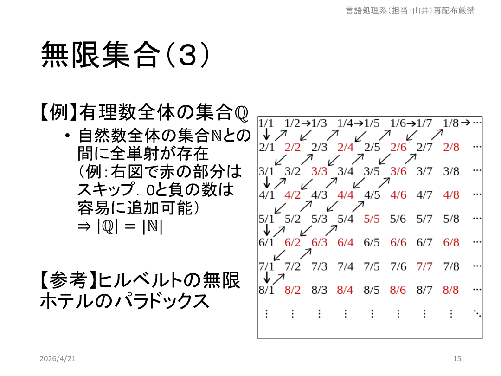
実数全体ℝの濃度は「連続体濃度」と呼ばれℵ（アレフ）で表され、ℵ₀ < ℵ が成立する。さらに一般化した結果がカントールの定理で、「任意の集合Aについて、Aの冪（べき）集合 𝒫(A)（Aのすべての部分集合を集めた集合）を考えると |A| < |𝒫(A)| が成立する」というものである。証明は背理法による。Aから𝒫(A)への全射fが存在すると仮定し、部分集合 B={x | x∈A, x∉f(x)} を考える。全射の仮定からB=f(x)となるxが存在するはずだが、x∈f(x)ならBの定義よりx∉Bとなり矛盾、x∉f(x)ならx∈Bとなりまた矛盾する。この自己言及的な構造は「床屋のパラドックス」（自分の髭を剃らない人だけの髭を剃る床屋は、自分の髭を剃るのか剃らないのか、という逆説）とよく似た形をしている。
TMの停止性問題——「何でも判定できる機械」は存在しない
万能チューリングマシン（Universal TM, UTM）とは、任意のTM Mと入力wの組(M, w)を入力として受け取り、「TM Mがwを受理する」ことと「UTM Uが(M, w)を受理する」ことが同値になるように作られた、実質的にTM Mのエミュレータである（TM Mは何らかの符号化方法によって文字列として表現される）。ここで重要な観察がある。TMの数（符号化された文字列の集合）は自然数と同じ濃度（可算集合、ℵ₀）である一方、言語の集合（文字列の集合の、そのまた部分集合の集合＝冪集合に相当）は実数と同じ濃度（ℵ）を持つ。ℵ₀ < ℵ なので、「どんなTMによっても受理できない言語」が存在することは、対角線論法を持ち出すまでもなく濃度の比較だけからも自明に導ける（対角線論法による直接的な証明も可能である）。
この延長線上にある最も重要な結果が停止性問題（Halting Problem）である。問い：任意のTM Mと入力wが与えられたとき、「Mがwに対して有限時間で停止するかどうか」を判定するTM H(M, w) は存在するか？——答えは存在しない。
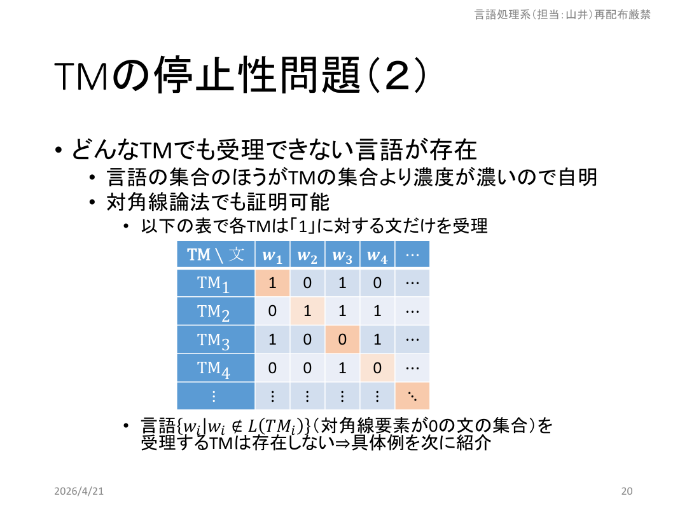
証明は背理法による（対角線論法の応用）。
- そのようなTM H(M, w) が存在すると仮定する。定義より、M(w)が停止するならH(M,w)=YES（受理）、M(w)が停止しないならH(M,w)=NO（不受理）となる。
- Hを部品として使い、新しいTM M′(A) を次のように構成する：「H(A,A)がYESなら（＝M′自身にAを入力したときに停止する場合）、M′はわざと無限ループする。H(A,A)がNOなら（＝停止しない場合）、M′はそこで停止する。」（Hの受理状態の直後に無限ループを挿入するだけなので、この改造は容易にできる。）
- ここでM′自身をM′自身に入力する、つまりM′(M′)を考える。
- もしM′(M′)が停止するなら、M′の定義よりH(M′,M′)=NOのはずである。しかしH(M′,M′)=NOは「M′(M′)は停止しない」ことを意味するはずなので、矛盾する。
- もしM′(M′)が停止しないなら、M′の定義よりH(M′,M′)=YESのはずである。しかしH(M′,M′)=YESは「M′(M′)は停止する」ことを意味するはずなので、これも矛盾する。
- どちらに転んでも矛盾するので、背理法により最初の仮定（Hが存在する）は誤りである。したがって、停止性を判定する万能なTM Hは存在しない。
この論法は、先に見たカントールの対角線論法・「床屋のパラドックス」と同じ「自己言及によって矛盾を作り出す」という構造を持っている点に注目してほしい。
この回のまとめ: 形式文法G=(N,Σ,S,P)は生成規則の書き換えによって言語L(G)を定める。チョムスキー階層は生成規則の制限度合いでType0（制限なし・TM）からType3（正規・有限オートマトン）まで4段階に言語クラスを分け、Type0⊋Type1⊋Type2⊋Type3という真の包含関係を持つ。チューリングマシンM=(Q,Σ,Γ,δ,q0,B,F)はテープを読み書きする理想化された計算機で、あらゆるアルゴリズムを表現できる（チューリング完全）。無限集合には可算（ℵ₀）と非可算（ℵ、連続体濃度）の区別があり、対角線論法を使うとℝがℕより真に大きいことや、停止性問題を判定する万能TMが存在しないことが証明できる。
原文（全ページのテキストと画像）は md/sources/202602.md を参照してください。
202603: 正規表現と有限オートマトン——過去問最頻出パートを手を動かして理解する
この回は何を学ぶか: 前回の続きである計算複雑性理論（P, NP, NP完全, NP困難）を軽く扱った後、本題である正規表現（BRE/ERE/PCREの違いと形式的定義）、有限オートマトン（DFA・NFA・ε-NFA）とそれらの相互変換（ε-NFA→NFA→DFA、DFAの状態最小化、正規表現→ε-NFA）、そして字句解析器への応用（DFAの実装、lexコマンド）を学ぶ。
なぜ学ぶのか: 参照した過去問メモによれば、正規表現の作成問題とε-NFA→NFA→DFA変換問題は2023・2024年の2年連続で山井先生パートの大問1番目に出題されており、この講義全体の中でも最も出題実績の濃いトピックである。本サイトの出題予測セクションでもS+（最重要）ランクとして扱われている。
計算複雑性理論の続き——P, NP, NP完全, NP困難
前回のチューリングマシン（TM）は「入力を受理するかどうか」だけを問題にしていたが、実際には「どれだけ効率よく解けるか」も重要である。ここで登場するのが非決定性TM（Non-deterministic TM, NTM）である。通常のTM（決定性TM, DTM）の遷移関数δが多価関数（1つの入力に対して複数の遷移先の候補を返す関数、δ: Q×Γ→𝒫(Q×Γ×{L,R})）になっているものを指す。動作のイメージは「最も幸運な推測機（luckiest possible guesser）」——選択できる動作をすべて並列的に試すと考えてもよい。能力（受理できる言語のクラス）としてはDTMと同じであり、NTMの並列的な動作はDTM上でシミュレート（模倣）できることが知られている。
この非決定性を使って定義される代表的な複雑性クラス（ある制約を満たす計算問題の集合、入力長nに対する時間のオーダーで評価する）が次の2つである。
- クラスP（polynomial time）: DTMによりnの多項式時間で解ける問題のクラス。
- クラスNP（non-deterministic polynomial time）: NTMによりnの多項式時間で解ける問題のクラス（"non-polynomial"ではない点に注意）。
P=NPかどうかは、P≠NPだろうと予想されているものの証明されていない未解決問題で、クレイ数学研究所によるミレニアム懸賞問題の1つ（解決すれば賞金100万ドル）である。NP完全（NP-complete）はNPに属する問題のうち最も難しいものを指し、NP完全問題のうち1つでもPに属することが証明できれば、芋づる式にP=NPが証明されたことになる。NP困難（NP-hard）はNP完全問題と同等かそれ以上に難しい問題で、NPに属するかどうかは問わない（つまりNP完全は「NP困難かつNPに属する」問題である）。
NP完全問題の例として、与えられた命題論理式を真にできるかを判定する充足可能性問題（SAT）や、n個の整数の集合の部分集合で合計が指定の整数になるものがあるかを判定する部分和問題が挙げられている（テトリス・ののぐらむ・ぷよぷよのようなパズルもNP完全になることがあるという紹介もある）。NP困難問題の例としては、すべての都市を1回ずつ訪問して出発地に戻る最小コスト経路を求める巡回セールスマン問題や、容量制限内で価値を最大化する荷物の組み合わせを求めるナップサック問題が挙げられている（これらは「最適な値を求める」最適化問題としてはNP困難だが、「コストL以下の経路があるか」のような判定問題（decision problem）に言い換えるとNP完全になる）。
正規表現とは何か——BRE/ERE/PCREと形式的定義
正規表現はパターンマッチングの際にパターンを記述するために使う記法である。歴史的な経緯もあり、使える演算子の範囲によっていくつかの方言が存在する。
- BRE（Basic Regular Expression）:
*（0回以上の繰り返し）、.（任意の1文字）、[aiueo]（角括弧内のいずれか1文字）、[a-z]（角括弧内の指定範囲の1文字）などが使える。 - ERE（Extended Regular Expression）: BREに加えて
+（1回以上の繰り返し）、?（0回か1回）、|（選択）が使える。 - PCRE（Perl Compatible Regular Expression）: さらに多くの演算子が使え、一部は本来の正規表現（＝有限オートマトンで表現できる範囲）を超える能力を持つ。
これらは実用上便利な略記だが、正規表現の本来の（数学的な）定義は次のように再帰的に与えられる。
- ∅は正規表現で、空集合を表す。
- εは正規表現で、空文字列だけの集合{ε}を表す。
- a∈Σに対して、aは正規表現で集合{a}を表す。
- rとsがそれぞれ言語RとSを表す正規表現のとき、r+s、r・s、(r*)はすべて正規表現で、それぞれ集合 R∪S（和集合）、R・S（連接、R・S={xy | x∈R, y∈S}）、R*（Kleene閉包、R*=∪ᵢ₌₀^∞ Rⁱ、つまり0回以上の繰り返し）を表す。
演算子の優先順位は *・・・+ の順に高く（*が一番強く結合する）、括弧は省略可能。連接演算子・も省略できる（abのように単に並べて書けば連接を表す）。実用例として、C言語の識別子は [_a-zA-Z][_0-9a-zA-Z]*（アンダースコアか英字で始まり、その後にアンダースコア・数字・英字が0回以上続く）という正規表現で定義できる。
+は和集合（どちらか）、・（省略可）は連接（つなげる）、*はKleene閉包（0回以上の繰り返し）を表す。BRE⊂ERE⊂PCREの順に使える演算子が増える。正規表現を書く練習——過去問型の例題を自分の手で解く
ここからは、参照した過去問メモに記録されている出題タイプ（2023年「4の倍数となる2進数」「0と1をどちらも含む数」、2024年「00か11を含む」「00,11を含まない」）をもとに、著者が独自に作成した練習問題とその解答を示す。※ 実際の過去問の文言そのものではなく、記憶再現メモに記録された条件から著者が再構成した練習問題である。本サイトの出題予測セクション（#pred-regex）で示した解答例と整合させている。
(1) 「00または11を含む0,1の文字列」の正規表現。 「含む」系の問題は、その部分パターンの前後をΣ*（＝(0+1)*、何でもよい任意の文字列）で挟めばよい、というのが基本方針である。00を含む場合と11を含む場合の和（どちらか一方でよい）を取ればよいので、(0+1)*00(0+1)* + (0+1)*11(0+1)* となる。
(2) 「00,11を含まないの0,1の文字列」の正規表現。 00も11も含まない、ということは「隣り合う文字が常に異なる」＝文字が0,1,0,1,…と交互に並ぶ文字列だけが該当する。実はこれは、授業資料202603のp.13にある「同じ文字が連続しない0,1の文字列」の例と全く同じ言語である。授業資料では 0(10)*1 + ε + 1(01)*(0+ε) という形で解答されている（0から始まって1で終わる交互文字列、空文字列、1から始まる交互文字列、の3つの和）。これを「0から始まる交互文字列の集合」と「1から始まる交互文字列の集合」の2つに整理し直すと (01)*(ε+0) + (10)*(ε+1) とも書ける（前者は空文字列も0から始まる場合もまとめて含む形、後者も同様）。どちらも同じ言語を表す同値な正規表現である。
(3) 「0と1をどちらも含む0,1の文字列」の正規表現。 「両方含む」は、0が先に出て後で1が出るパターンと、1が先に出て後で0が出るパターンの和として書ける。(0+1)*0(0+1)*1(0+1)* + (0+1)*1(0+1)*0(0+1)* となる。
(4) 「4の倍数となる2進数」の正規表現。 2進数がある数の倍数かどうかは、下位の桁だけを見れば判定できる場合がある。4=2²なので、2進表記の下2桁が"00"であれば（それより上の桁が何であっても）その数は4の倍数になる。したがって (0+1)*00 で表せる（0そのものを含めるかどうかは出題条件に合わせて調整するとよい）。
参考として、授業資料自身が示す例もあわせて確認しておく。「0を偶数個含む0,1の文字列」は、空文字列を含む簡略形として 1*(01*01*)* が与えられている。「正の3の倍数の2進表記の文字列」は 1(10*1 + 01*0)*10* という、やや複雑な正規表現で与えられており、例として "1100010111010"₂ = 6330₁₀（6330は3の倍数）が挙げられている。この3の倍数の例については、授業資料の課題として「この正規表現が正しいことを説明せよ（余力のある学生対象）」という設問が実際に出されており、単純な「含む/含まない」型より一段難しい、剰余（あまり）を状態に見立てて考える発想が必要になる。
有限オートマトン（DFA）の基本と、ε-NFA→NFA→DFAの変換
有限オートマトン（Finite Automaton, FA。Finite State Machine, FSMとも呼ばれる）は、有限個の状態を持ち、入力によって状態が遷移する機械である。直観的には、入力をすべて処理し終えたときに受理状態になっていれば受理、遷移先の状態が未定義なら受理しない、というシンプルなルールで動く。形式的には5つ組 M=(Q, Σ, δ, q0, F) で定義される（Q:状態の有限集合、Σ:入力記号の集合、δ:遷移関数 Q×Σ→Q、q0:初期状態、F:受理状態の集合）。TMの遷移関数と違い、テープへの書き込みや移動方向はなく、単に「今の状態と次の1文字」から「次の状態」が決まるだけの単純な写像である点に注目してほしい。
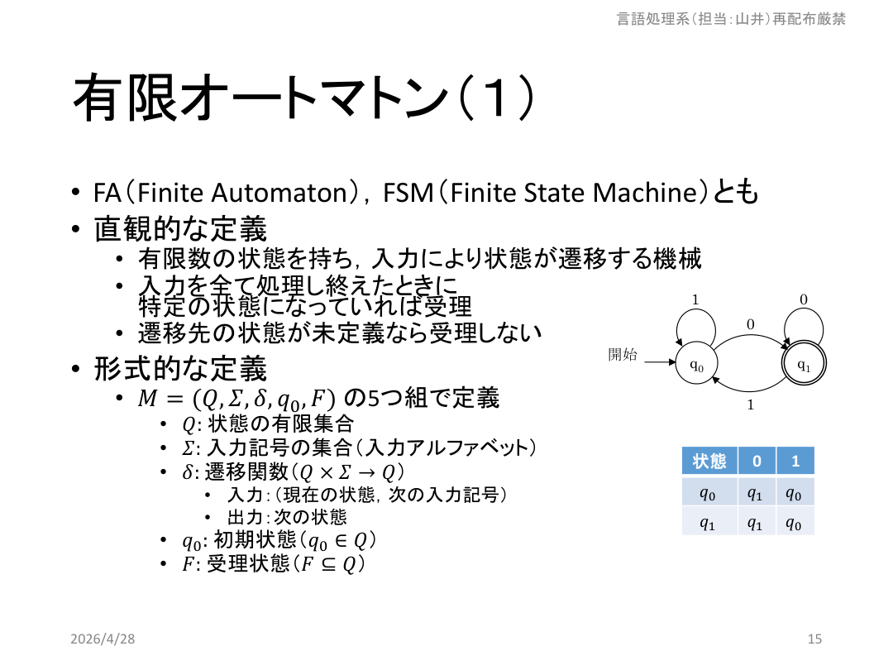
授業資料が示す最初の例は状態q0, q1の2状態DFAで、遷移表は「q0: 0→q0, 1→q1」「q1: 0→q1, 1→q0」というものである。これは「1という記号を読むたびに状態がq0とq1の間を反転する」典型的なオートマトンで、実質的に「これまでに読んだ1の個数が偶数か奇数か」を状態として記憶している（受理状態をどちらに設定するかで「1の個数が偶数の文字列」「奇数の文字列」のどちらを認識するオートマトンにもなる。正確な受理状態の設定は画像18_18の図で確認してほしい）。
DFAでは1つの状態・1つの入力記号に対して次の状態が必ず1つに決まるが、これを緩めたものがNFA（非決定性FA, Non-deterministic FA）である。従来のFA（決定性FA, DFA）の遷移関数δが多価関数になっているもので、記号を読まずに状態を移動するε-動作も許すものを特にε-NFAと呼ぶ。遷移関数は δ: Q×(Σ∪{ε}) → 𝒫(Q) と定義され、動作のイメージはTMのNTMと同じく「最も幸運な推測機」（選択可能な動作を並列的にすべて試す、と考えてもよい）。能力的にはDFAと変わらず、ε-NFAは必ずDFAに変換できることが知られている。
ε-動作つきNFAからε-動作なしNFAへの変換は、次のように行う。元の遷移関数δを、新しい遷移関数 δ̂(q, a) = { q′ | q′はqからε*aε*で遷移可能な状態 }（＝ε遷移を好きなだけ挟んでaを1回読んで、さらにε遷移を好きなだけ挟んで到達できる状態の集合）に拡張する。受理状態も、初期状態q0からε-動作だけで受理状態に到達できるなら F̂=F∪{q0}、できないなら F̂=F と拡張する（q0自身が実質的に受理状態を兼ねる場合があることに注意）。
続いてε-動作なしNFAからDFAへの変換（部分集合構成法, subset construction）は、NFAの状態の集合Qを、その冪集合𝒫(Q)に拡張することで行う。例えばNFAの状態がQ_NFA={q0,q1}なら、DFAの状態は理論上 Q_DFA={[], {q0}, {q1}, {q0,q1}} という4通りの部分集合になりうる（実際には初期状態から到達可能な部分集合だけを構成すればよく、授業資料でも全部分集合を列挙する表には「実際は不使用」との注記がある）。DFAの状態[p1,p2,…]に対する新しい遷移関数は δ̂([p1,p2,…], a) = ∪ᵢ δ(pᵢ, a)（それぞれの状態から見た遷移先の和集合）と定義され、[p1,p2,…]のうち少なくとも1つがFに含まれていれば、その集合は受理状態となる。
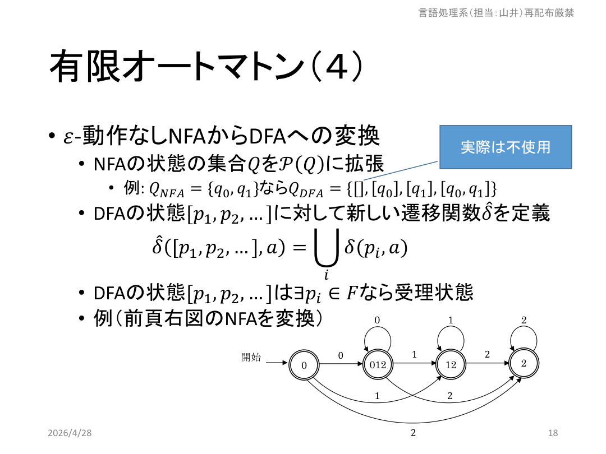
この手順を実際に手を動かして確認するため、授業資料とは別に、著者が独自に作成した練習用の例で最初から最後まで変換してみる。※ 過去問では「授業資料と全く同じオートマトンの変換」が出題された実績があるため、この独自例で手順に慣れたうえで、必ず元資料（202603.md、および画像19_19・21_21）の具体的な図も確認してほしい。
題材として「1で終わる文字列」ではなく、少しだけ手応えのある「11で終わる（0,1の）文字列」を認識するε-NFAを作る。状態集合{q0, q1, q2, q3}、アルファベット{0,1}、初期状態q0、受理状態{q3}とし、遷移を次のように定める。
- q0 --0--> q0 （まだ"11"を見つけていない間、0は読み飛ばしてq0に留まる）
- q0 --1--> q0 （1もq0のままでよい。"11"の開始位置は後で"賭ける"）
- q0 --ε--> q1 （「ここから残り2文字が11になるはず」と賭けて、入力を読まずにq1へ移る）
- q1 --1--> q2
- q2 --1--> q3 （受理）
ステップ1: ε-NFA→NFA。 ε-closure(q0)={q0,q1}、ε-closure(q1)={q1}、ε-closure(q2)={q2}、ε-closure(q3)={q3} である。これをもとにδ̂を計算すると次の表が得られる。
| 状態 | 0 | 1 |
|---|---|---|
| q0 | {q0,q1} | {q0,q1,q2} |
| q1 | ∅ | {q2} |
| q2 | ∅ | {q3} |
| q3 | ∅ | ∅ |
初期状態q0からε-動作だけでは受理状態q3に到達できないため、受理状態はF̂=F={q3}のままである。
ステップ2: NFA→DFA（部分集合構成法、到達可能な集合だけを作る）。 D0={q0}を初期状態として、必要な集合だけを芋づる式に作っていく。
| DFAの状態 | 中身 | 0 | 1 | 受理? |
|---|---|---|---|---|
| D0 | {q0} | D1 | D2 | × |
| D1 | {q0,q1} | D1 | D2 | × |
| D2 | {q0,q1,q2} | D1 | D3 | × |
| D3 | {q0,q1,q2,q3} | D1 | D3 | ○（q3を含む） |
試しに "010111" のような文字列を追ってみると、D0→(0)D1→(1)D2→(0)D1→(1)D2→(1)D3→(1)D3 となり、最後がD3（受理）で終わることが確認できる。逆に "0110"（11の後に0が続き、末尾は11でない）はD0→D1→D2→D3→D1となり不受理で、狙い通り「末尾が11かどうか」だけを判定するDFAになっていることが分かる。
DFAの状態最小化と、正規表現からオートマトンへの変換（Thompson構成法）
DFAは変換の過程で、実は不要に多い状態を持ってしまうことがある。DFAの状態数最小化は、同値な状態をまとめることで行う。状態p, qが同値（p≡q）であるとは、Σ*に属するすべての文字列xについて、δ(p,x)とδ(q,x)がともに受理状態になるか、ともに受理状態でないかのいずれかである（＝pから見てもqから見ても、その後の受理・不受理の運命が完全に一致する）ことをいう。同値な状態は本質的には1種類の状態として扱ってよい。最小化アルゴリズム自体は授業資料では省略されているが、|Σ|=k, |Q|=nとすると時間計算量はO(kn²)であることが述べられている。
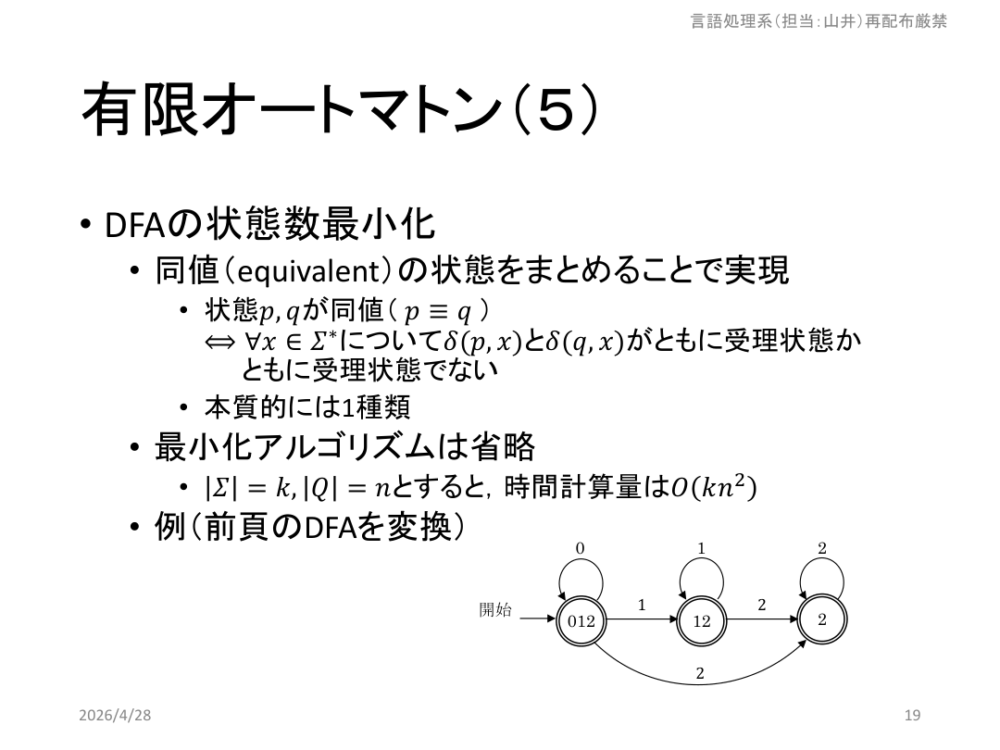
前節で作った「11で終わる文字列」のDFA（D0, D1, D2, D3）で実際に最小化を試してみる。非受理状態はD0, D1, D2、受理状態はD3である。D0とD1の遷移先を比べると、D0は0でD1・1でD2、D1も0でD1・1でD2と全く同じ遷移先パターンを持つ。つまりD0とD1は同値（D0≡D1）であり、1つの状態にまとめられる。一方D2は1で受理状態D3に遷移する点でD0・D1と異なるため区別される。結果として、D0とD1をまとめた状態をS0、D2をS1、D3をS2とすると、S0(0→S0, 1→S1)、S1(0→S0, 1→S2)、S2(0→S0, 1→S2) という3状態のDFAに縮約できる（各状態は「直前に連続していた1の個数が0個か1個か2個以上か」を表していると解釈できる）。
次に、逆方向の変換——正規表現からε-NFAへの変換を見る。これはThompson構成法（McNaughton-Yamada-Thompson construction）と呼ばれる、正規表現の構造（本来の定義でのr+s, r・s, r*という組み立て方）にそのまま対応させてε-NFAを組み上げていく標準的な手法である。基本となる3つの base case は次の通り。
- r=∅: 開始状態から受理状態への辺を一切引かない（何も受理しない）
- r=ε: 開始状態から受理状態へε辺を1本引く
- r=a（a∈Σ）: 開始状態から受理状態へ記号aの辺を1本引く
そして、すでに作った小さなε-NFAを組み合わせて大きな正規表現に対応させる3つの帰納段階がある。
- r=r1+r2（和）: 新しい開始状態を1つ作り、r1の開始状態とr2の開始状態それぞれへε辺を引く。r1・r2それぞれの受理状態から、新しく作った1つの受理状態へε辺を引く。
- r=r1r2（連接）: r1の受理状態からr2の開始状態へε辺を引き、r1の開始状態を全体の開始状態、r2の受理状態を全体の受理状態とする。
- r=r1*（Kleene閉包）: 新しい開始状態と新しい受理状態を作り、その間に直接ε辺を引く（0回繰り返す場合に対応）。新しい開始状態からr1の開始状態へε辺、r1の受理状態から新しい受理状態へε辺を引き、さらにr1の受理状態からr1の開始状態へ戻るε辺を引く（繰り返しに対応）。
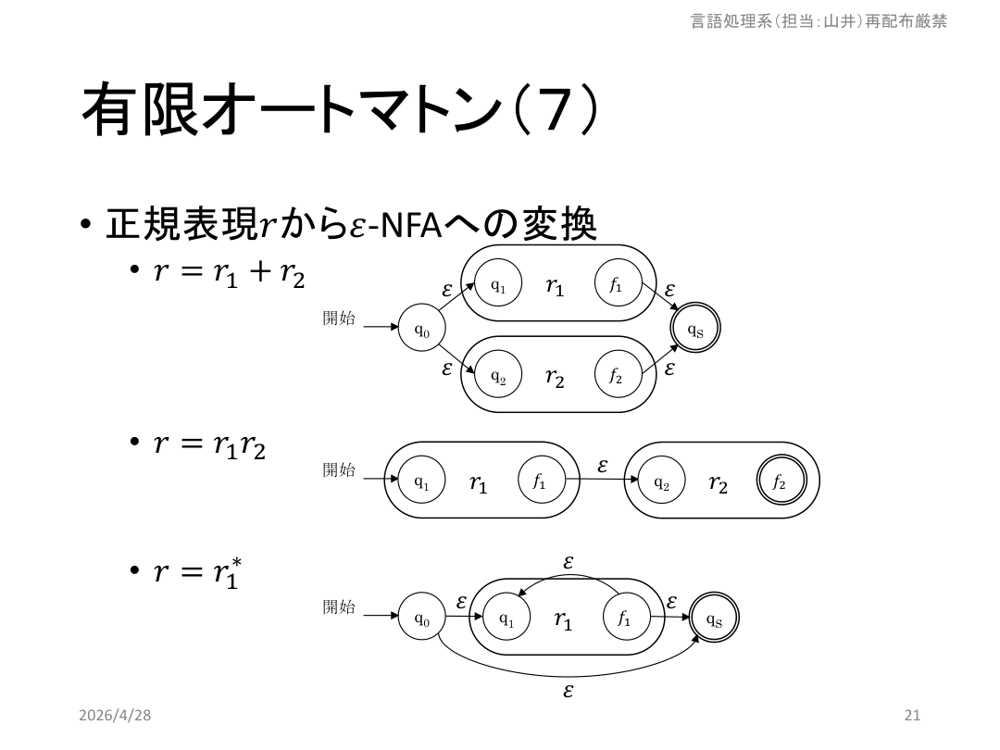
この構成法を使えば、どんな正規表現も機械的にε-NFAへ変換できる。つまり「正規表現を書く→Thompson構成法でε-NFAにする→ε-closureでNFAにする→部分集合構成法でDFAにする→必要なら状態最小化する」という一直線の手続きで、正規表現からDFAまで完全に自動で変換できることになる。
字句解析器への応用——DFAをプログラムに、そしてlexへ
ここまでの内容は、実際の字句解析プログラムにそのまま応用できる。DFAをコードに落とし込む方法は大きく2通り紹介されている。
1つ目は、状態を明示的な変数として持ち、switch文で分岐する方法である。例えば「0*1*2*（0の並び→1の並び→2の並びという順序を守った文字列）」を認識するDFA（状態Q012, Q12, Q2の3状態。すべて受理状態になる。なぜならこの正規表現は空文字列も、途中で終わる文字列もすべて有効な形だからである）は、次のように実装できる。
enum stateset {Q012, Q12, Q2};
enum stateset state = Q012;
...
while ((ch = 次の文字) != '\0') {
switch (state) {
case Q012:
switch (ch) {
case '0': state = Q012; break;
case '1': state = Q12; break;
case '2': state = Q2; break;
default: 1文字戻してこれまでの文字列をreturn;
}
break;
case Q12:
switch (ch) {
case '1': state = Q12; break;
case '2': state = Q2; break;
default: 1文字戻してこれまでの文字列をreturn;
}
break;
/* ... Q2の処理が続く ... */
}
}2つ目は、状態を明示的な変数として持たず、DFAの処理の流れをそのままネストしたwhileループとしてコーディングする方法である。この方が簡単かつ高速に書けるが、慣れが必要とされる。
while ((ch = 次の文字) != '\0') {
/* Q012 */
while (ch == '0') ch = 次の文字;
/* Q12 */
while (ch == '1') ch = 次の文字;
/* Q2 */
while (ch == '2') ch = 次の文字;
/* 受理 */
1文字戻してこれまでの文字列をreturn;
}
/* EOF の場合のみここに到達 */そして、これらを手で書く代わりに自動生成してくれるのが第1回でも触れたlexである。lexの仕様書ファイルは「定義部 / %% / ルール部 / %% / サブルーチン部」という3部構成を持つ。定義部にはlexのオプションやC言語の宣言、ルール部には「正規表現（ERE） アクション（Cプログラム）」の対応を列挙し、サブルーチン部には主にルール部で使う関数を書く。マッチングの規則は最長一致（longest match）が基本で、同じ長さの場合は最初に書かれたパターンが優先される。
授業資料が示す例（整数リテラルを10進・8進・16進に判定するinteger.l）を要約すると、次のような構成になっている。
%{
int val;
int yywrap(void) { return 1; } /* 入力がEOFの時に呼ばれる */
%}
%%
[1-9][0-9]* { sscanf(yytext, "%d", &val);
printf("\"%s\"(%d)は10進数整数定数\n", yytext, val); }
0[0-7]* { sscanf(yytext, "%o", &val);
printf("\"%s\"(%d)は8進数整数定数\n", yytext, val); }
0[xX][0-9A-Fa-f]+ { sscanf(yytext, "%x", &val);
printf("\"%s\"(%d)は16進数整数定数\n", yytext, val); }
.* printf("入力が整数ではありません。\n");
"\n" ;
%%
int main(void) { yylex(); return 0; }これを integer.l として保存し、make integer を実行すると、内部で lex -t integer.l > integer.c（lexが仕様書からC言語のソースを生成）、cc -c -o integer.o integer.c、cc integer.o -o integer（Cコンパイラでコンパイル・リンク）という手順が走り、実行ファイルintegerが得られる。実行すると、入力 0xabc に対して「"0xabc"(2748)は16進数整数定数」、入力 0123 に対して「"0123"(83)は8進数整数定数」のように出力される。
*（0回以上）と+（1回以上）を混同しやすいので注意。ε-NFA→NFAの変換では、ε-closureに自分自身を含め忘れたり、受理状態の拡張（初期状態からε-動作だけで受理状態に到達できる場合の F̂=F∪{q0}）を見落としたりするミスが起きやすい。部分集合構成法では、到達可能な集合だけを作れば十分であることを忘れて全部分集合を律儀に列挙してしまう、あるいは逆に一部の遷移先の計算を漏らしてしまうミスに注意する。DFAの状態最小化と「ε-NFAをNFAにする」操作は名前が似ているが全く別の操作なので混同しないこと。この回のまとめ: 計算複雑性理論ではP・NP・NP完全・NP困難の関係を押さえる。正規表現は∅・ε・aを基点に、和(+)・連接(・)・Kleene閉包(*)で組み立てる代数式で、「含む/含まない/kの倍数」型の問題は、Σ*で挟む・言い換える・下位桁や剰余に着目するという定石で解ける。有限オートマトンはM=(Q,Σ,δ,q0,F)で定義され、ε-NFA→（ε-closureで）NFA→（部分集合構成法で）DFA→（同値な状態をまとめて）最小化DFA、という一直線の変換手順がある。逆に正規表現→ε-NFAはThompson構成法で機械的に組み立てられる。DFAはそのままswitch文やlexのルールとしてコードに落とし込める。
原文（全ページのテキストと画像）は md/sources/202603.md を参照してください。
202604: 構文解析の基礎――文法の書き方から曖昧さの解消まで
この回は何を学ぶか: 文法を正確に書き表すための記法（BNF・EBNF・構文図式）、構文解析の結果を表す構文木、構文木を1列の記号列に変換する逆ポーランド記法（RPN）、「1つの入力文字列に対して構文木が2通り以上できてしまう」曖昧な文法とその解消法、そして数式を上向きに解析する最初期の手法である演算子順位法を学ぶ。
なぜ学ぶのか: ここで導入されるBNF・構文木という語彙は、第5回（LL(1)・下向き構文解析）と第6回（LR(1)・上向き構文解析）で共通して使われる土台になる。特に「曖昧な文法」と「dangling else」は、if-then-elseの構文木を描かせる問題として複数年の過去問で出題されており、この回の内容を理解しないまま先に進むと後の回でつまずく。
BNFと構文図式――文法を記述するための共通言語
BNF（Backus Naur Form、あるいはBackus Normal Form）は、プログラミング言語の文法を機械的に定義するための記法である。考案者のJohn BackusはFORTRANの開発者としても知られ、1977年にチューリング賞を受賞している。この記法をALGOL60の構文定義で実際に使ったのはPeter Naurであり、Naur自身は「Backus Normal Form」ではなく「Backus Naur Form」と呼ぶべきだと主張していたとされる。
基本の書き方は「構文要素 ∷= 記号列」で、「∷=」の代わりに「→」を使うことも多い（本サイトでも以後「→」を使う）。右辺の記号列は、構文要素（非終端記号）・リテラル（終端記号そのもの）・選択を表す「｜」を組み合わせて作る。例えば数字と英字とALGOLの識別子（名前）は次のように書ける。
数字 → 0｜1｜2｜⋯｜9
英字 → A｜B｜⋯｜Z
名前 → 英字｜名前 英字｜名前 数字
この「名前」の定義は左再帰的（自分自身を左端に含む）になっている点に注目してほしい。この左再帰性は第5回で「下向き構文解析にとって都合が悪い性質」として登場する。
BNFをそのまま使うと、同じような規則（例えば「0回以上の繰り返し」）を何度も書き下さねばならず冗長になる。そこで拡張BNF（EBNF）では、「{ }」（0回以上の繰り返し）・「[ ]」（省略可能、0回か1回）・「, 」（連接の明示）などの記法を追加する。ISO 14977によるEBNFの例では、「digit excluding zero」「digit」「natural number」「integer」のように、0を含む/含まない数字の定義を{ }と[ ]で簡潔に表せる。通信プロトコルの定義（RFC 5234のABNFなど）では、「1*atext」（1回以上の繰り返し）のような記法も加わる。
構文図式は、こうした(E)BNFの規則を人間が目で追いやすいように図で表したものである。「数字」のように選択肢が並ぶだけの規則は、複数の矢印が1点に集まる形で描かれ、「関数呼出 → 識別子 "(" [式 "," 式] ")"」のように省略可能な部分がある規則は、迂回できる経路として描かれる。
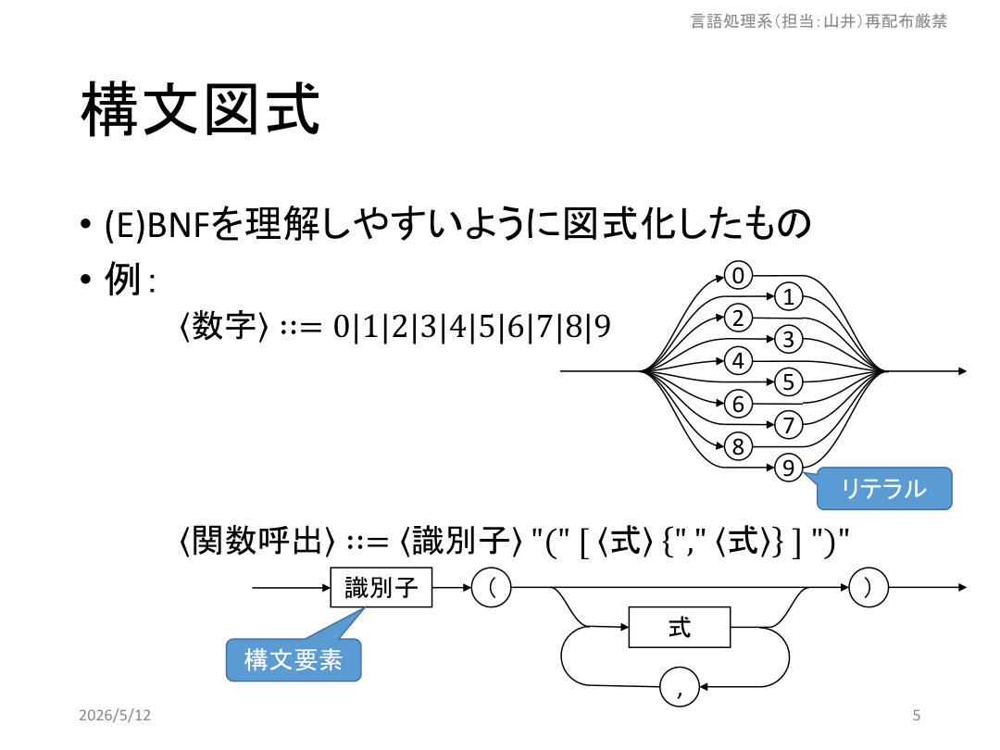
構文木と逆ポーランド記法――同じ構造を「木」と「記号列」で表す
構文木（parse tree / syntax tree）は、構文解析の過程や結果を木構造で表したものである。例えば「式 → 式 + 項｜項」「項 → 項 ∗ 因子｜因子」「因子 → (式)｜id」という文法で「id + id ∗ id」を解析すると、まず全体が「式」で、その内訳は「式（＝id） + 項（＝項 ∗ 因子＝id ∗ id）」という入れ子構造になる。木の葉（末端）に終端記号（id, +, ∗ など）が並び、内部の節点に非終端記号（式・項・因子）が来る。
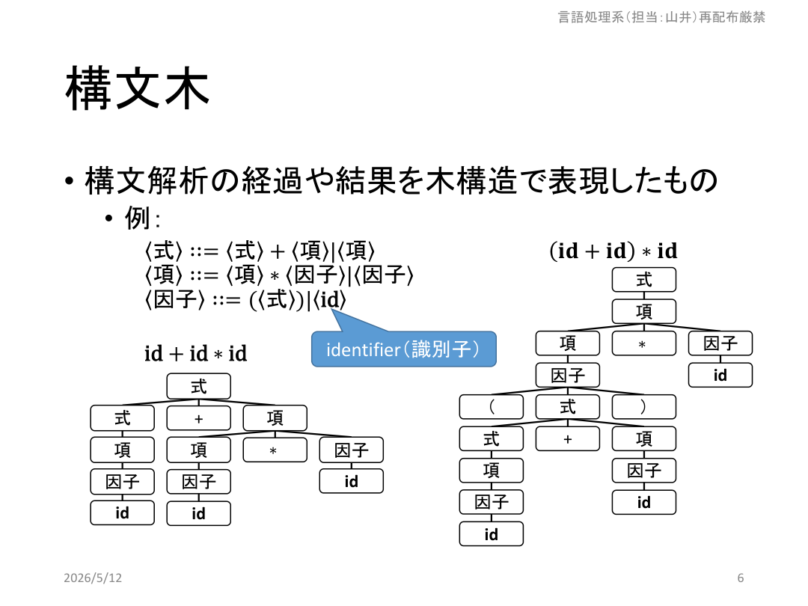
逆ポーランド記法（Reverse Polish Notation, RPN。単に「ポーランド記法」と呼ばれることもある）は、この構文木と等価な情報を、括弧なしの1列の記号列として表す方法である。木を「帰りがけ順（post-order：左の子→右の子→自分自身の順に節点を訪れる）」でたどると得られる記号列がRPNであり、逆に「行きがけ順（pre-order：自分自身→左の子→右の子）」でたどると（本来の）ポーランド記法になる。
例：a + b ∗ c（「bとcを掛けたものをaに足す」の意味）をRPNにすると a b c ∗ + となる。一方 a + b の結果に c を掛ける（つまり (a+b)∗c）場合は a b + c ∗ となり、演算の順序が記号列の並びにそのまま反映される。
補足: 逆ポーランド記法とスタックマシンは相性がよい。スタックマシンは、レジスタの代わりにスタックを持ち、命令のオペランドをスタックトップから取り出し、結果をスタックトップに積み直す構成の計算モデルである。RPNの記号列を先頭から読み、オペランドはpush、演算子が来たらスタックトップから必要な個数をpopして計算しpushし直す、という単純な手順だけで式全体を評価できる。Java仮想マシン（JVM）やPostScriptなど、実在の処理系がこの方式を採用している。
自分で手を動かす例として、2023・2024年の過去問メモにある「(A-B^(C^D))-(E*F)」をRPNに変換してみる（^は右結合の冪乗で優先度最高、-は左から処理する減算とする）。まず式全体の構造を木として捉えると、最も外側の演算子は最後の「-」で、左の子が「A-B^(C^D)」、右の子が「E*F」である。左の子はさらに「-」で、左が「A」、右が「B^(C^D)」。「B^(C^D)」は「^」で、左が「B」、右が「C^D」。「C^D」は「^」で左がC、右がD。この木を帰りがけ順でたどると、A→B→C→D→(C^Dの^)→(B^…の^)→(A-…の-)→E→F→(E*Fの*)→(全体の-) の順になるので、RPNは次のようになる。
A B C D ^ ^ - E F * -
検算として、このRPNをスタックマシンで評価すると、A,B,C,Dを順にpushしたあと「^」でD,Cをpopして「C^D」をpush、次の「^」でその結果とBをpopして「B^(C^D)」をpush、「-」でそれとAをpopして「A-B^(C^D)」をpush、続けてE,Fをpushして「*」で「E*F」をpush、最後の「-」で2つの中間結果をpopして「(A-B^(C^D))-(E*F)」が得られ、元の式と一致することが確認できる。
曖昧な文法とは何か――同じ入力に複数の構文木ができてしまう問題
ある文法に対して、1つの文字列から複数の異なる構文木が作れてしまうとき、その文法は「曖昧（ambiguous）」であるという。構文木が違うということは、その文字列の解釈（意味）が2通り以上あるということと同じ意味になる。
典型例が E → E+E｜E∗E｜(E)｜id という文法である。この文法で「id + id ∗ id」を解析すると、(1) 先に「id + id」をEとしてまとめ、それに「∗ id」を続ける読み方（(id+id)∗id、+が先に結合）と、(2) 先に「id ∗ id」をEとしてまとめ、それに「id +」を前に置く読み方（id+(id∗id)、∗が先に結合）の、構造が異なる2通りの構文木が存在する。どちらも文法上は正しいので、この文法だけでは「+ と ∗ のどちらを先に計算すべきか」を決められない。
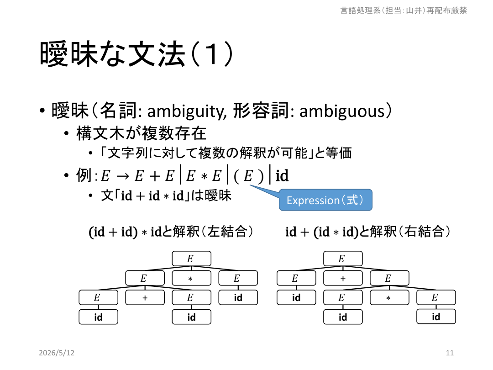
もう1つの重要な例が「ぶら下がりelse（dangling else）」問題である。if文の生成規則を S → if C then S｜if C then S else S と定義すると、「if C1 then if C2 then S1 else S2」という入力に対して、次の2通りの構文木が作れてしまう。
解釈A（elseが内側のifに結び付く）: 外側の「if C1 then …」のthen節がまるごと「if C2 then S1 else S2」であるという構造。つまり elseはC2のif文の一部。
解釈B（elseが外側のifに結び付く）: 外側の「if C1 then … else S2」というif-then-else文があり、そのthen節が「if C2 then S1」（elseなし）であるという構造。つまりelseはC1のif文の一部。
多くのプログラミング言語（C, Javaなど）は解釈Aを採用しており、これは「elseは最も近いifと対応する」という規則として知られている。この違いは、if文がネストしたときにどちらのif条件でelse節が実行されるかという、プログラムの実際の動作に直結する重要な問題である。
曖昧さの解消法――文法を変えるか、ルールを足すか
曖昧さを解消する方法は大きく3つある。
(1) 文法を変形する。 E→E+E｜E∗E｜(E)｜id は、演算子の優先順位を反映した階層構造に書き換えることで曖昧さが消える。
E → E+T｜T
T → T∗F｜F
F → (E)｜id
この形では、+の両側は必ず「T（またはそれ以下）」、∗の両側は必ず「F（またはそれ以下）」という制約が生まれ、∗のほうが先に（木の深いところで）結合することが文法の形そのものから保証される。同様に、dangling else も「elseと対になれるS（matched statement, S_m）」と「対になっていないかもしれないS（unmatched statement, S_u）」を区別する形に書き換えることで一意に定まる。
S → S_m｜S_u
S_m → if C then S_m else S_m
S_u → if C then S｜if C then S_m else S_u
ここでのポイントは、「if C then S else S」の最初のS（then節）を必ずS_m（elseと対になった、つまり完結した文）に限定していることである。こうすると、elseを持たないif文（S_u）をthen節に置けるのは一番外側のifだけになり、内側のelseは常に一番近いifと結び付く形に一意化される。
(2) 構文解析器生成ツールに演算子の優先度を指定する。 yacc/bisonでは、宣言部に「%left '+' '-'」「%left '*' '/'」のように書くことで、後に書いた行ほど優先度が高いこと、そして左結合であることを指定できる。この場合、ルール部の文法自体は E: E′+'E｜E′-'E｜E′*'E｜E′/'E のように曖昧なまま書いてよく、優先順位の判断はツールに任せられる（yacc/bisonの詳しい使い方は第6回で扱う）。
(3) 構文解析器生成ツールの既定動作を使う。 dangling else の場合、yacc/bisonは特に指定しなくても「shift/reduce競合が起きたときはshiftを優先する」という既定動作により、elseを処理する際により長い（＝直前の）ifと結び付ける、つまり自動的に解釈Aを選ぶ。
演算子順位法――終端記号どうしの優先順位関係で構文解析する
演算子順位法（operator precedence parsing）は数式の構文解析に使われた最初期の手法で、理論的な裏付けよりも先に実用として使われ始めたという経緯を持つ。これが適用できる文法のクラスを「演算子文法」と呼ぶ（「順位」という語は付かない点に注意）。演算子文法は文脈自由文法の中でも、すべての生成規則が (a) 右辺で非終端記号が連続しない、(b) 右辺が空（ε）でない、という2条件を満たすものを指す。E→E+T｜T、T→T∗F｜F、F→(E)｜id はこの条件を満たす。
演算子文法では、終端記号（演算子や括弧）どうしの間に3種類の優先順位関係を定義できる。
a ≐ b（同順位）: ある生成規則の右辺に「…a s b…」（sは非終端記号1つだけ、またはsなし）の形で両方が隣接して現れる場合。例：F→(E) から ( ≐ )。
a ⋖ b（aの優先度が低い）: 「…a s…」の形の規則があり、かつ s から「b…」または「C b…」の形が導出できる場合。例：E→E+T と T⇒T∗F より + ⋖ ∗。
a ⋗ b（aの優先度が高い）: 「…s b…」の形の規則があり、かつ s から「…a」または「…a C」の形が導出できる場合。例：F→(E) と E⇒T∗F より ∗ ⋗ )。
これらの関係は「終端記号を全部並べた表」として整理できる（全ての組合せが決定できるとは限らず、起こりえない組合せは空欄になる）。この表に矛盾がなければ、その文法は「演算子順位文法」と呼ばれる。
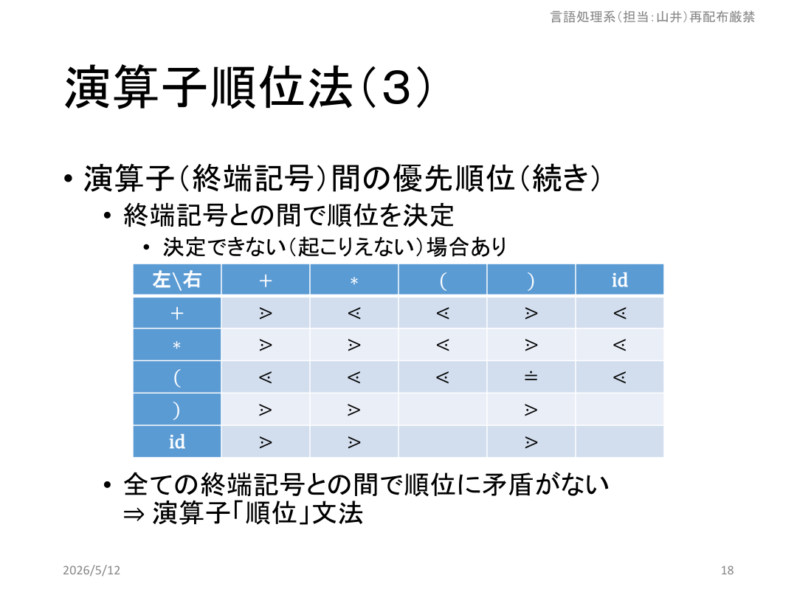
構文解析のアルゴリズムでは、文の最初と最後を表す番人記号（本サイトでは⊢と⊣を使う）を導入し、開始記号にS′→⊢S⊣という規則を追加してからスタックに⊢を積んで開始する。手順は次の通り。
- 次の入力記号 a_j を読む。
- スタック上の記号 a_i と比べ、a_i ⋗ a_j ならスタックからポップして2に戻る。そうでなければ a_j をプッシュする。
- a_i が ⊢ かつ a_j が ⊣ なら終了、そうでなければ1に戻る。
ポップする範囲は「a_f ⋖ a_g ≐ ⋯ ≐ a_h ≐ a_i ⋗ a_j」のように、⋖で始まり同順位が続いて⋗で終わる部分である。手を動かす例として、上の表（E→E+T｜T, T→T∗F｜F, F→(E)｜idに対する優先順位表）を使って「i ∗ i + i ⊣」を解析してみる。
| スタック | 関係 | 次の入力 | 動作 | 出力 |
|---|---|---|---|---|
| ⊢ | ⋖ | i | push i | |
| ⊢ i | ⋗ | ∗ | pop i | i |
| ⊢ | ⋖ | ∗ | push ∗ | |
| ⊢ ∗ | ⋖ | i | push i | |
| ⊢ ∗ i | ⋗ | + | pop i | i i |
| ⊢ ∗ | ⋗ | + | pop ∗ | i i ∗ |
| ⊢ | ⋖ | + | push + | |
| ⊢ + | ⋖ | i | push i | |
| ⊢ + i | ⋗ | ⊣ | pop i | i i ∗ i |
| ⊢ + | ⋗ | ⊣ | pop + | i i ∗ i + |
| ⊢ | ≐ | ⊣ | 終了 |
最終的な出力 i i ∗ i + は (i∗i)+i のRPNであり、∗が+より先に計算される（優先度が高い）という直感と一致している。
この回のまとめ: BNF・EBNF・構文図式は文法を書く記法、構文木・RPNは構文解析の結果を表す2つの等価な表現である。文法が曖昧（1つの入力に複数の構文木）だと解析結果が一意に定まらず困るため、文法変形・優先順位宣言・パーサジェネレータの既定動作のいずれかで解消する。演算子順位法は、終端記号どうしの3種類の優先順位関係（⋖ ≐ ⋗）を使ってスタック操作（push/pop）だけで数式を解析する、最初期の上向き構文解析法である。曖昧な文法の構文木を描く問題（E+E/E*E型・if-then-else型）は複数年で出題されているS+級の頻出テーマなので、必ず自分の手で構文木を描けるようにしておくこと。
原文（全ページのテキストと画像）は md/sources/202604.md を参照してください。
202605: 下向き構文解析――First/Follow/Directorをゼロから理解する
この回は何を学ぶか: 開始記号から入力文を導出していく下向き構文解析法（top-down parsing）を扱う。バックトラックが必要になる問題点、それを避けるための左括り出し・左再帰性の除去、そして1トークン先読みだけで解析できる文法クラスであるLL(1)文法と、それを判定・実装するためのFirst集合・Follow集合・Director集合の求め方を学ぶ。最後に、この理論を実際のプログラムに落とし込む再帰的下向き構文解析器と予測的構文解析器を扱う。
なぜ学ぶのか: First・Follow・Director集合は、過去問メモで複数年にわたって直接「求めよ」という形で出題されている、この講義全体でも屈指の頻出テーマである。授業資料の説明だけでは計算手順が飲み込みにくいという声もあるため、この回は特に手順を一つひとつ分解して説明する。
下向き構文解析法とバックトラック問題
下向き構文解析法（top-down parsing）は、開始記号から生成規則を繰り返し適用して入力文を導出していく方法である（対する演算子順位法のような方法は上向き構文解析法（bottom-up parsing）と呼ばれる）。生成規則をそのままプログラムの構造に対応させやすいのが利点で、例えば S→abc という規則は、'a′であることを確認し（match）、非終端記号bを解析する関数を呼び、'c′であることを確認する、という3行の関数にほぼそのまま翻訳できる。
問題は、複数の候補規則がある場合にどれを選ぶかである。例えば「文→ラベル付き文｜代入文」「ラベル付き文→識別子 : 文」「代入文→識別子 = 式」という文法では、ラベル付き文も代入文も両方が「識別子」から始まるため、最初の識別子を読んだ時点ではどちらの規則かまだ判定できない。誤った方を選んでしまうと、読み進めた分を巻き戻してやり直す「バックトラック」が必要になる。もし「ラベル付き文→自然数 : 文」のように書き換えて最初のトークンの種類（識別子か自然数か）だけで区別できるようにすれば、1トークンの先読みだけでバックトラックなしに解析できる。
この「最初のトークンだけを見て、複数の候補のどれを選ぶべきか判定できる」という性質こそが、この回全体を貫くテーマになる。
左括り出しと左再帰性の除去
共通のprefixを持つ規則をまとめて判断を先送りする技法を「左括り出し（left factoring）」と呼ぶ。「文→識別子文後半」「文後半→ : 文｜= 式」のように書き換えれば、識別子を読んだあとに次のトークン（:か=か）を見てから初めて分岐すればよくなる。ただし左括り出しで必ず解決できるとは限らない。例えば「S→aBc」「B→bB｜b」という文法で「abc」と「abcc」のどちらも構文解析できるかは、Bの中でどこまで'b′を読み進めるべきかを先読みだけで判定できるかという別の問題になる。
もう1つの重要な問題が左再帰性（left recursion）である。「E→E+T｜T」のような規則を素直に関数にすると、E()の中で最初にE()を呼び出すことになり、無限再帰に陥って動かない。これを解消するには、一般に
A → Aα₁｜Aα₂｜⋯｜Aα_m｜β₁｜β₂｜⋯｜β_n
という左再帰的な規則を、次のように「非左再帰的な新しい非終端記号A′」を使う形に書き換える。
A → β₁A′｜β₂A′｜⋯｜β_nA′
A′ → α₁A′｜α₂A′｜⋯｜α_mA′｜ε
E→E+T｜T の場合は E→TE′、E′→+TE′｜ε となる。EBNFで書けば E→T{+T} と直感的に表せる（{ }の中身が0回以上繰り返されることと、A′→⋯A′｜εという末尾再帰が対応している）。
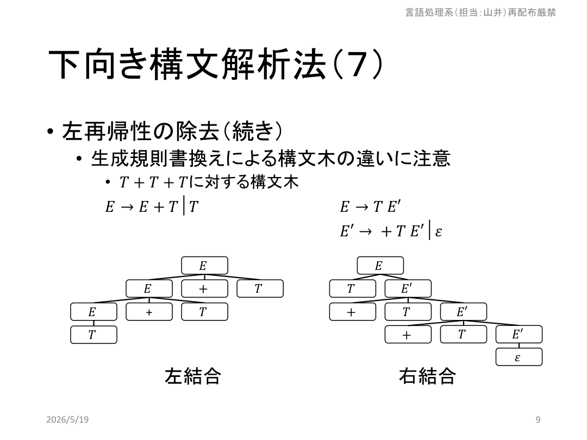
注意すべきは、この書き換えによって構文木の形そのものが変わってしまう点である。元のE→E+T｜Tでは「T+T+T」は左結合（左側から先にまとまっていく木）になるのに対し、書き換え後のE→TE′、E′→+TE′｜εでは形式上は右下がりの木（一種の右結合的な構造）になる。加算や乗算のように結合則が成り立つ演算であれば計算結果に影響しないが、減算のように結合順序が結果を左右する演算では注意が必要である。この対策として、生成規則の途中（+Tを読み終えた直後）に処理を挿入し、規則の最後まで待たずにその場で計算・出力するという工夫がしばしば使われる。
LL(1)文法とFirst集合の求め方（ゼロから）
1トークンの先読みだけでバックトラックなしに下向き構文解析できる文法クラスをLL(1)文法と呼ぶ。1つ目のLは「入力を左（Left）から読む」、2つ目のLは「最左導出（leftmost derivation：常に一番左の非終端記号を置き換えていく導出）」を意味し、(1)は「先読みトークン数が1個」を表す（一般にkトークンの先読みを許すクラスをLL(k)文法という）。
First集合の定義は次の通りである。
First(α) = { a｜a∈Σ（終端記号の集合）, α ⇒* a⋯ } （αからεだけが導出できるならεもFirst(α)に含める）
つまりFirst(α)は「αを展開していったときに、一番最初に現れうる終端記号の集合」である。直感的には「αで始まる文字列の、最初の1文字（1トークン）になりうるものは何か」という問いへの答えがFirst(α)である。
求め方は次の4つのルールの組み合わせになる。
- First(ε) = {ε}。また A→ε という規則があれば、First(A)にεを加える。
- α = aβ（aは終端記号で始まる）なら First(aβ) = {a}。A→aβ という規則があれば First(A) に a を加える。
- α = Bβ（Bは非終端記号）で ε∉First(B) なら First(Bβ) = First(B)。A→Bβ という規則があれば First(A) に First(B) を加える。
- α = Bβ で ε∈First(B) なら First(Bβ) = (First(B)−{ε}) ∪ First(β)。同様に A→Bβ の場合、First(A) にこれを加える。
要するに「右辺の先頭記号のFirst集合を見て、それがεを含まなければそこで確定、εを含むなら次の記号のFirst集合も合わせて見る」という手順を、右辺の先頭から順にたどっていけばよい。
手を動かす例として、まず自分で作った小さな文法で練習する。
S → a A b
A → c A｜ε
First(A)を求める。A→cA は終端記号cで始まるのでルール2よりFirst(A)に c が入る。A→ε なのでルール1よりFirst(A)に ε も入る。よって First(A) = {c, ε}。次に First(S) は、S→aAb が終端記号aで始まるのでルール2よりFirst(S) = {a} となる（Aやbまで見る必要はない。先頭が終端記号で確定した時点でそこで打ち切ってよい）。
次に、過去問での出題実績が高い、以下の標準的な式の文法でFirst集合を計算する（この文法は第4回で見たE→E+T｜T, T→T∗F｜F, F→(E)｜idの左再帰を除去したものである）。
E → TE′
E′ → +TE′｜ε
T → FT′
T′ → ∗FT′｜ε
F → (E)｜i
開始記号から遠い（右辺に他の非終端記号を含まない）ものから順に計算していくのがコツである。
First(F)：F→(E)は終端記号「(」で始まるので「(」が入る。F→iは終端記号iで始まるので「i」が入る。First(F) = {(, i}。
First(T′)：T′→∗FT′は終端記号「∗」で始まるので「∗」が入る。T′→εなのでεも入る。First(T′) = {∗, ε}。
First(T)：T→FT′の先頭Fは非終端記号で、ε∉First(F)なのでFirst(T)=First(F) = {(, i}。
First(E′)：E′→+TE′は「+」で始まるので「+」が入る。E′→εなのでεも入る。First(E′) = {+, ε}。
First(E)：E→TE′の先頭Tは非終端記号で、ε∉First(T)なのでFirst(E)=First(T) = {(, i}。
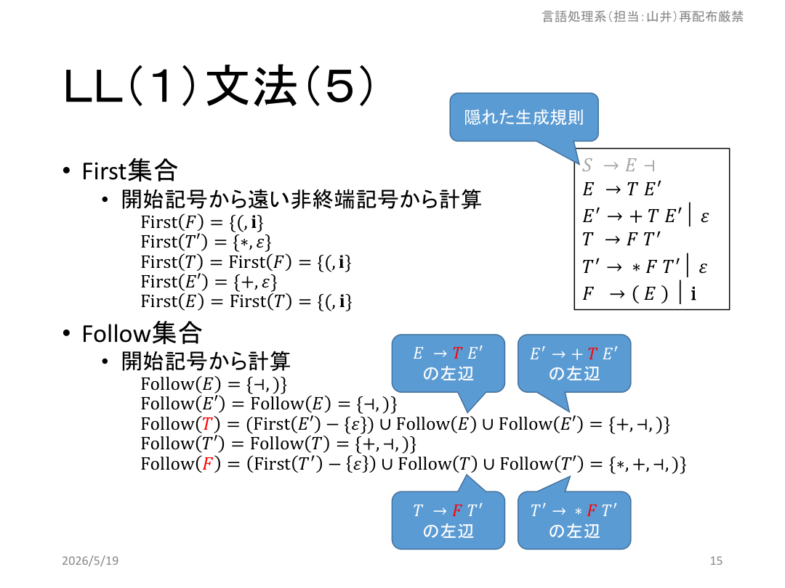
Follow集合とDirector集合の求め方（ゼロから）
Follow集合の定義は次の通りである。
Follow(A) = { a｜a∈Σ, S ⇒* ⋯Aa⋯ }
つまりFollow(A)は「文法の開始記号Sから何らかの形で文を導出していったときに、非終端記号Aの直後に現れうる終端記号の集合」である。First集合が「その記号自身が何で始まるか」という局所的な性質だったのに対し、Follow集合は「その記号の外側の文脈で何が続きうるか」という、文法全体を見渡さないと決まらない性質である点が本質的に異なる。
求め方は次の手順による。まず開始記号Sに対してFollow(S) = {⊣}（⊣は入力の終わりを表す番人記号）とする。そのあと、新しく追加されるものがなくなるまで、全ての生成規則に対して次の2つのルールを繰り返し適用する。
- a→αAβ（β≠ε）という規則があれば、Follow(A)に First(β)−{ε} を加える（Aの直後にβが続くのだから、βの先頭になりうる記号はAの直後にも来られる）。
- a→αA、または a→αAβ で ε∈First(β) という規則があれば、Follow(A)に Follow(a) を加える（Aの後に何も続かない、またはAの後のβが消えてしまう可能性があるなら、Aの直後には「aの直後に来られるもの」がそのまま来られる）。
β≠εかつε∈First(β)の場合は、1と2の両方を適用する。
先ほどの練習用文法（S→aAb, A→cA｜ε）でFollow(A)を求めてみる。Follow(S)={⊣}から始める。規則 S→aAb を見ると、Aの後にβ=bが続く（β≠ε）ので、ルール1によりFirst(b)−{ε}={b}をFollow(A)に加える。また規則A→cAを見ると、Aが規則の末尾（β=ε）なので、ルール2によりFollow(A)にFollow(A)自身を加える（変化なし）。以上よりFollow(A) = {b}。
続いて標準文法 E→TE′, E′→+TE′｜ε, T→FT′, T′→∗FT′｜ε, F→(E)｜i について、開始記号を S→E⊣ として計算する。
Follow(E)：まずS→E⊣（Eの直後は⊣）からFollow(E)に⊣が入る。またF→(E)（Eの直後は「)」）からFollow(E)に「)」が入る。Follow(E) = {⊣, )}。
Follow(E′)：E→TE′でE′が末尾（β=ε）なので、ルール2によりFollow(E′)にFollow(E)を加える。Follow(E′) = Follow(E) = {⊣, )}。
Follow(T)：E→TE′を見ると、Tの直後にβ=E′が続く。E′≠εでルール1を適用し、First(E′)−{ε} = {+} をFollow(T)に加える。さらにε∈First(E′)なので、ルール2も同時に適用し、Follow(E)をFollow(T)に加える。E′→+TE′でもTの直後にβ=E′が続き、同様に{+}とFollow(E′)が加わる（結果は変わらない）。合わせて Follow(T) = {+} ∪ Follow(E) ∪ Follow(E′) = {+, ⊣, )}。
Follow(T′)：T→FT′でT′が末尾なのでFollow(T′) = Follow(T) = {+, ⊣, )}。
Follow(F)：T→FT′を見ると、Fの直後にβ=T′が続く。First(T′)−{ε} = {∗} をFollow(F)に加え、ε∈First(T′)なのでFollow(T)もFollow(F)に加える。Follow(F) = {∗} ∪ Follow(T) ∪ Follow(T′) = {∗, +, ⊣, )}。
Director(A, α)は「生成規則A→αを適用してよいと判断するために先読みすべき終端記号の集合」であり、次のように定義される。
Director(A, α) = { a｜a∈First(α)、または（α⇒*ε かつ a∈Follow(A)）}
すべての非終端記号Aについて、Aの複数の候補規則A→α_iのDirector集合どうしが互いに共通部分を持たなければ、その文法はLL(1)文法である（次のトークンaがDirector(A,α)に入っていれば、迷わずA→αを適用してよい）。
先ほどの標準文法で計算すると、Director(E, TE′) = First(T) = {(, i}、Director(E′, +TE′) = {+}、Director(E′, ε) = Follow(E′) = {⊣, )}、Director(T, FT′) = First(F) = {(, i}、Director(T′, ∗FT′) = {∗}、Director(T′, ε) = Follow(T′) = {+, ⊣, )}、Director(F, (E)) = {(}、Director(F, i) = {i} となる。E′の2つの候補（{+}と{⊣,)}）、T′の2つの候補（{∗}と{+,⊣,)}）はいずれも重ならないので、この文法はLL(1)文法である。
なぜεを生成する規則があると面倒になるのか。 もしどの規則の右辺にもεが出てこなければ、Director(A,α)は単純にFirst(α)と一致し、その規則1つだけを見て決められる、いわば「局所的」な計算で済む。ところがA→εのような規則があると、「Aをεに展開して何も読まずに次に進む」という選択肢が生まれ、それを選んでよいかどうかは「Aの外側で次に何が来るか（＝Follow(A)）」という、文法全体を見渡さないと分からない情報に依存してしまう。Follow集合の計算が「新しいものが追加されなくなるまで全規則を繰り返し見る」という、A単体では完結しない大がかりな不動点計算になっているのはこのためである。言い換えると、εを持たない規則の先読み判定はA→αという1本の規則の中だけで完結するのに対し、εを持つ規則の先読み判定は文法全体の構造に依存する、という質的な違いがある。
再帰的下向き構文解析器（recursive descent parser）
再帰的下向き構文解析器（recursive descent parser）は、文法の形をほぼそのままプログラムの構造に反映させる実装方法である。一般的な変換規則は次のようにまとめられる。
- A→α に対する関数は void A(void){ T(α); }。
- α = X₁X₂⋯Xₙ（連接）なら T(α) は T(X₁); T(X₂); ⋯; T(Xₙ);。
- α = β₁｜β₂｜⋯｜βₙ（選択）なら、switch(token)でFirst(βᵢ)に含まれるトークンごとに分岐してT(βᵢ)を呼ぶ（εを導出できる選択肢がある場合はdefault節に回す）。
- α = {β}（0回以上の繰り返し）なら、while(トークンがFirst(β)に含まれる){ T(β); }。
- α = A（非終端記号1つ）なら A();。
- α = a（終端記号1つ）なら if(token==a) gettoken(); else error();。
例えばE→T{+T}、T→F{∗F}、F→(E)｜idという（EBNFで左再帰を吸収した）文法なら、E()はT()を呼んでからwhile(token=='+'){ gettoken(); T(); (+を出力); }を回すだけで書ける。この構文解析器に「1+2*3」を入力すると、Fの中でid（数値）を出力しつつ、+や*は該当する規則の処理位置（EBNFの繰り返しの直後）で出力され、最終的に「1 2 3 * +」というRPNが得られる――これはまさに第4回で扱った逆ポーランド記法そのものである。構文解析と同時にRPNへの変換（＝簡単なコード生成）が行えることが、この方式の実用上の利点である。
予測的構文解析器――スタックと解析表を使う非再帰版
予測的構文解析器（predictive parser）は、再帰的下向き構文解析器と同じLL(1)文法を、関数呼び出しの再帰を使わずに、明示的なスタックだけで解析する方法である。開始記号Sからの導出過程をスタックに保存しておき、スタックトップが非終端記号Aなら、次の入力記号aがDirector(A,α)に含まれるようなαに置き換える。スタックトップが終端記号aなら、次の入力記号が実際にaであることを確認してポップし、次の入力に進む。
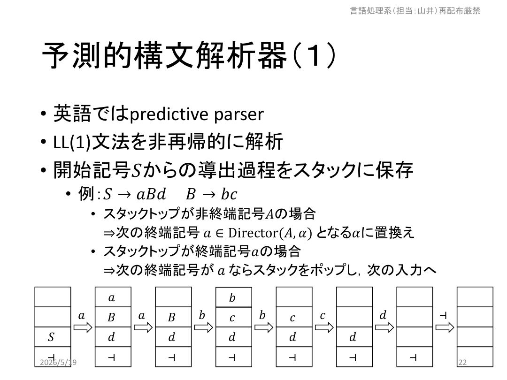
この「次の入力記号を見て、どのαに置き換えるか」を先にすべて表にまとめたものが構文解析表である。行を非終端記号A、列を先読み記号aとし、a∈Director(A,α)であるようなマス(A,a)にαを書き込む。
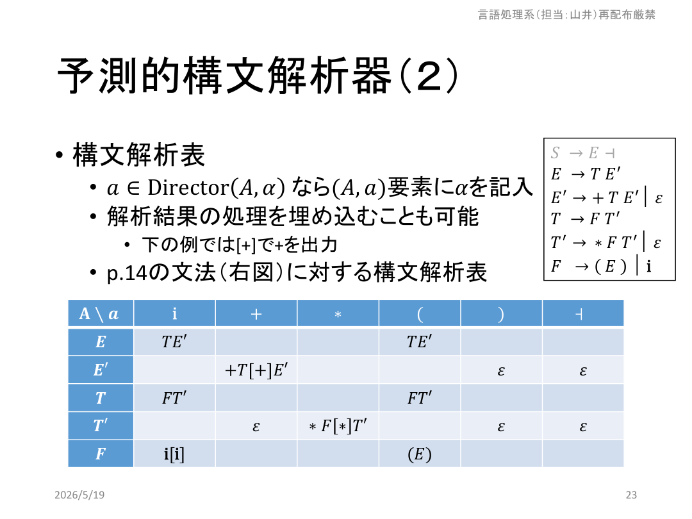
手を動かす例として、この解析表を使って「i + i * i ⊣」を解析する流れを最初の数手だけ追ってみる。初期スタックは⊣E（Eの下に番人記号⊣）。先頭のiを見てDirector(E,TE′)={(,i}に含まれるのでEをTE′に置換。続くTもiを見てDirector(T,FT′)={(,i}よりFT′に置換。FはiそのものなのでDirector(F,i)={i}よりiに置換され、実際の入力iとマッチしてポップ、次のトークン+へ進む――というように、非終端記号が現れるたびに表を1回引くだけで、バックトラックなしに機械的に処理が進んでいく。
この回のまとめ: 下向き構文解析はバックトラックが問題になりやすく、左括り出しと左再帰性の除去でこれを避ける。First(α)は「αの先頭になりうる終端記号」、Follow(A)は「Aの直後に来られる終端記号」、Director(A,α)はこの2つから作る「規則A→αを選ぶための先読み記号集合」であり、全ての候補のDirector集合が重ならなければLL(1)文法である。εを生成する規則があると、判定がAの外側（Follow）にまで依存するようになり計算が複雑化する。再帰的下向き構文解析器は文法をそのまま関数群に、予測的構文解析器はDirector集合をそのまま解析表に変換したものである。First/Follow/Director集合の計算は複数年連続で出題されているS+級の頻出テーマであり、この回は特に重点的に復習してほしい。
原文（全ページのテキストと画像）は md/sources/202605.md を参照してください。
202606: 上向き構文解析――LR(1)のclosureとGOTOを手を動かして理解する
この回は何を学ぶか: スタックを使って入力を還元（reduce）していく上向き構文解析法（bottom-up parsing / shift-reduce parsing）、その代表格であるLR(1)構文解析法の考え方（LR(0)項・closure・GOTO・状態遷移図）、不都合な状態を解決するSLR(1)/LALR(1)/LR(1)の違い、SLR解析表を使った実際の解析動作、そして構文解析器生成ツールyacc/bisonの使い方を学ぶ。
なぜ学ぶのか: LR(1)のclosureとGOTOの計算は過去問で複数年言及されているテーマである。特にclosureの「停止条件」（新しく追加される項がなくなるまで繰り返す）を具体例で自分の手を動かして確認しておくことが、この回の理解の鍵になる。yacc/bisonの優先順位宣言（%left/%right）は第4回で学んだ曖昧さの解消法(2)の具体的な実装にあたる。
上向き構文解析法とハンドル
上向き構文解析法（bottom-up parsing）は、移動還元構文解析法（shift-reduce parsing）とも呼ばれる。スタックを使い、「移動（shift）：入力記号をスタックに積む」「還元（reduce）：生成規則A→αに従い、スタックトップのαをAに置き換える」の2種類の基本操作を繰り返す。第4回の演算子順位法もこの一種であり、今回説明するLR(1)構文解析法も代表例の1つである。
この解析法は最右導出（rightmost derivation：導出のたびに最も右側の非終端記号を置き換えていく方法）を逆向きにたどる形になっている。最右導出によって得られる（終端・非終端混じりの）記号列を右文形式（right-sentential form）と呼ぶ。ある右文形式において、直前の最右導出で置き換えられた部分（とそこで使われた生成規則）のことをハンドル（handle）と呼び、還元とはこのハンドルを非終端記号に置き換える操作にほかならない。つまり上向き構文解析とは、「今どこがハンドルか」を正しく見抜きながら還元を繰り返し、最終的に開始記号1つに畳み込んでいく作業だと言える。
解析の各段階で、スタックの中身と未処理の入力を左から順につなげると、常にその時点の右文形式になっている。移動・還元のほかに、解析が正しく終了したことを示す受理（accept）と、文法的に誤っていることを示すエラー（error）を合わせた4種類の動作がある。問題は「今、移動すべきか還元すべきか、還元するならどの規則か」をどう判断するかであり、演算子順位法では終端記号どうしの優先順位関係でこれを決めていたのに対し、LR(1)法では後述する「状態」を使って決める。
LR(0)項とclosure（閉包）――具体例で「停止条件」を確認する
LR(1)構文解析法は、入力を左（Left）から読み最右（Rightmost）導出を行い、1トークンの先読みで動作を決める（一般にkトークン先読みならLR(k)構文解析法）。この解析の途中経過を表すのがLR(0)項であり、生成規則の右辺のどこまで読み終えたかを「・」（ドット）で示す。例えばA→XYZという規則に対しては、A→・XYZ（まだ何も読んでいない）、A→X・YZ（Xまで読んだ）、A→XY・Z（XYまで読んだ）、A→XYZ・（全部読み終え、Aに還元できる状態）の4通りのLR(0)項がある。
ここで重要になるのがclosure（閉包）という操作である。LR(0)項A→α・Bβ（ドットの直後が非終端記号B）を含む状態は、暗黙のうちに「Bをこれから解析し始める」ことも意味している。そこで、Bの生成規則B→γがあれば、B→・γというLR(0)項も同じ状態に含めてよい、と考える。これがclosureの考え方であり、次の手順で計算する。
- closure(I) := I（まず元の項集合Iをそのまま入れる）。
- A→α・Bβ ∈ closure(I) で、生成規則B→γがあれば、B→・γをclosure(I)に追加する。
- 上記2を、新しく追加される項がなくなるまで繰り返す。
「新しく追加される項がなくなったら止める」という停止条件が本質的に重要である。文法の生成規則は有限個なので、ある非終端記号Bについて「B→・γ」という形の項は高々（Bの生成規則の本数）個しか存在しえない。したがってclosureの計算は必ず有限回で終わる（同じ項を2度追加しようとしても、集合なので実質的に増えない）。
具体例で確認する。E→E+T｜T, T→T∗F｜F, F→(E)｜iという文法でclosure(E→E+・T)を求めると、まずE→E+・T自身が入る。ドットの直後がTなので、T→T∗F｜Fの2つの項をT→・T∗F、T→・Fとして追加する。T→・T∗Fのドットの直後もTだが、T→・T∗F、T→・Fは既に追加済みなので新規追加はなし。T→・Fのドットの直後はFなので、F→(E)｜iの2つをF→・(E)、F→・iとして追加する。F→・(E)、F→・iはどちらもドットの直後が終端記号（またはドットが末尾）なので、それ以上展開できない。ここで新規追加が止まるので計算終了。
closure(E→E+・T) = { E→E+・T, T→・T∗F, T→・F, F→・(E), F→・i }
自分でも別の項から出発して確認してみる。同じ文法でclosure(F→(・E))を求めると、まずF→(・Eが入る。ドットの直後がEなのでE→・E+T、E→・Tを追加。E→・E+Tのドットの直後もEだが追加済み。E→・Tのドットの直後はTなのでT→・T∗F、T→・Fを追加。T→・T∗Fのドットの直後は既出のT。T→・Fのドットの直後はFなのでF→・(E)、F→・iを追加。これらはドットの直後が終端記号なのでここで停止する。
closure(F→(・E)) = { F→(・E), E→・E+T, E→・T, T→・T∗F, T→・F, F→・(E), F→・i }
この結果は、後述の状態遷移図におけるGOTO(I₀,'(')の状態（I₄）の中身と一致する。「開き括弧を読んだ直後は、括弧の中身としてEをこれから解析し始める」という直感がそのままclosureの計算結果に反映されていることが確認できる。
GOTO関数と状態遷移図の構築
ある項集合Iの状態で記号Xを読んだときに移る次の状態をGOTO(I,X)と呼び、次のように定義する。
GOTO(I, X) = closure( { A→αX・β｜A→α・Xβ ∈ I } )
つまり「Iの中でドットの直後がXである項すべてについて、ドットをXの右に1つ進め、その結果にclosureをかけたもの」がGOTO(I,X)である。全ての状態は次の手順で求まる。(1) 初期状態としてC := closure({S′→・S⊣}) をCに入れる。(2) 任意のI∈CとX∈(Σ∪N)についてGOTO(I,X)をCに追加する。(3) 新しい集合が追加されなくなるまで(2)を繰り返す。この「追加されなくなったら停止」という考え方は、直前のclosureの停止条件と全く同じ発想である――違いは、closureが1つの項集合の中だけで完結する局所的な繰り返しであるのに対し、GOTOによる状態集合の生成は「状態全体の集合C」が増えなくなるまで繰り返す、一段階外側の繰り返しになっている点である。
E→E+T｜T, T→T∗F｜F, F→(E)｜iという文法に対して実際にこの手順を回すと、I₀（初期状態）からI₁₂までの13個の状態と、それらを結ぶGOTO（E, T, F, (, i, +, ∗, ) などのラベルが付いた遷移）からなる状態遷移図が得られる。
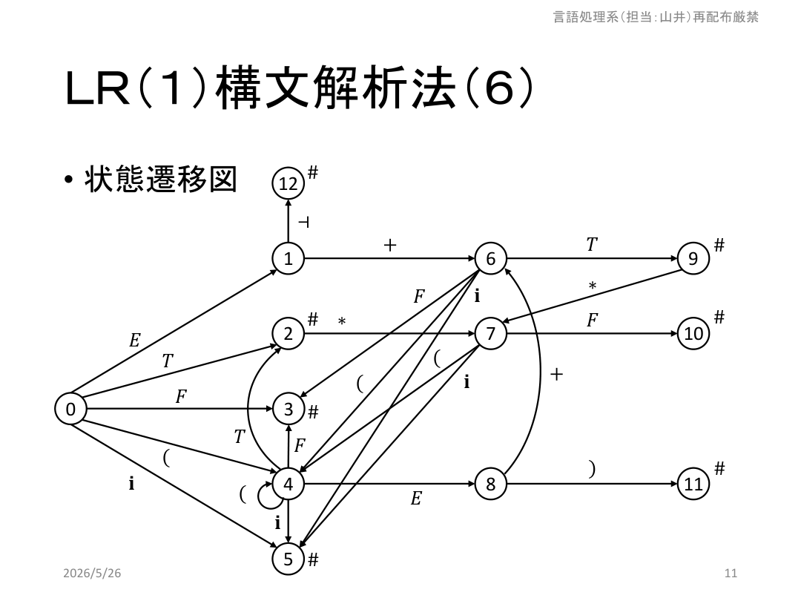
不都合な状態とSLR(1)/LALR(1)/LR(1)の違い
状態I₂（E→T・, T→T・∗F）を見ると、次のトークンが「∗」のとき、T→T・∗Fに従って移動すべきか、E→T・に従って還元すべきかが、この状態の情報だけでは決められない。これを「不都合な状態」と呼ぶ。この不都合をどう解決するかによって、以下のようにLR系の解析法が細分化される。
- SLR(1)（Simple LR(1)）: 次のトークンがFollow(E)（還元先の左辺の記号のFollow集合）に含まれているときに限り還元する。第5回で学んだFollow集合の計算がここでも使われる。
- 正規（Canonical）LR(1)（単に「LR(1)」と呼ばれることが多い）: LR(0)項に先読み記号（1個）を追加したLR(1)項を使い、還元してよい状況をより厳密に区別する。
- LALR(1)（LookAhead LR(1)）: LR(1)項のうち、コア（ドットの位置と生成規則の部分）が同じものを1つに合併して状態数を減らす。
解析できる文法の広さについては SLR(1) ⊊ LALR(1) ⊊ LR(1) という包含関係があり（SLRが最も狭く、LR(1)が最も広い）、実用上広く使われるyacc/bisonはLALR(1)を採用している。
SLR解析表とLR構文解析器の動作
各状態と次の入力記号の組み合わせについて、shift（動作記号 sᵢ：状態iへ移動）・reduce（rⱼ：j番目の規則で還元）・accept（acc）・空欄（error）のいずれを行うかをまとめた表がSLR解析表である。GOTO部分には、還元後にどの状態に戻るかが書かれている。
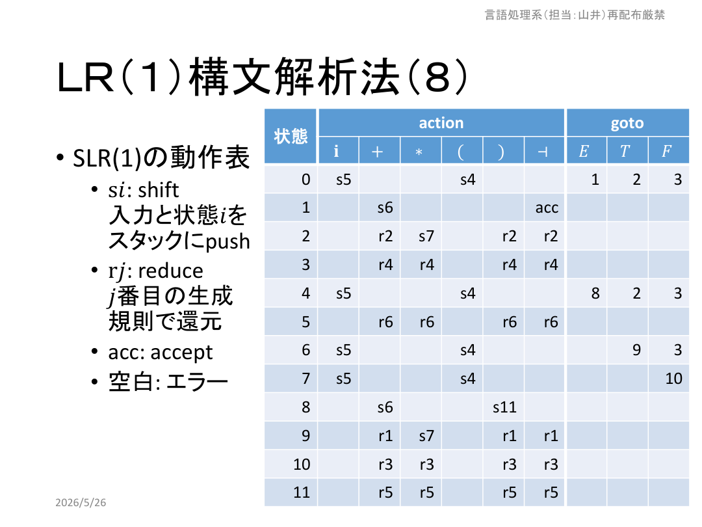
LR構文解析器の様相（configuration）は s₀X₁s₁X₂s₂⋯Xₘsₘ, aᵢaᵢ₊₁⋯aₙ⊣ という形で表され、前半（記号と状態が交互に並ぶ部分）がスタックの中身、後半が未処理の入力である。動作は次の4種類にまとめられる。(1) action(sₘ,aᵢ)=shift sならaᵢとsをスタックに積む。(2) action(sₘ,aᵢ)=reduce A→βなら、スタックから2|β|個の記号を降ろし、Aとgoto(sₘ₋|β|,A)をスタックに積む。(3) action(sₘ,aᵢ)=acceptなら終了。(4) action(sₘ,aᵢ)=errorならエラー処理を行う。
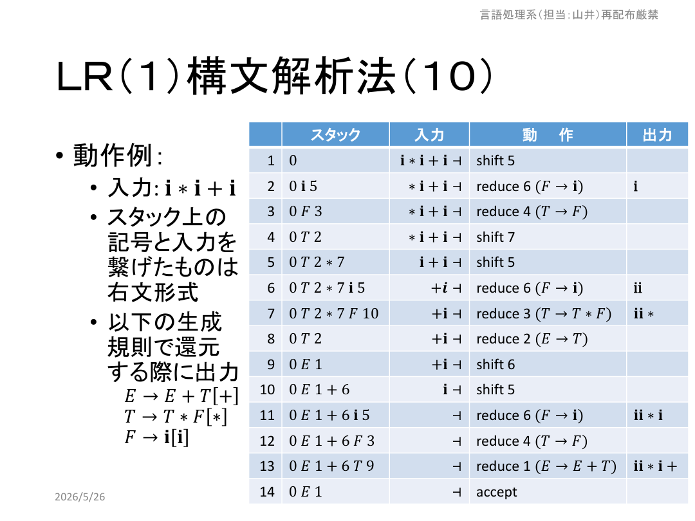
手を動かす例として、E→E+T｜T, T→T∗F｜F, F→(E)｜iの文法とそのSLR解析表（規則番号は1:E→E+T, 2:E→T, 3:T→T∗F, 4:T→F, 5:F→(E), 6:F→i）を使って「i + i + i ⊣」を解析してみる。
| # | スタック | 入力 | 動作 | 出力 |
|---|---|---|---|---|
| 1 | 0 | i+i+i⊣ | shift 5 | |
| 2 | 0 i5 | +i+i⊣ | reduce 6 (F→i) | i |
| 3 | 0 F3 | +i+i⊣ | reduce 4 (T→F) | |
| 4 | 0 T2 | +i+i⊣ | reduce 2 (E→T) | |
| 5 | 0 E1 | +i+i⊣ | shift 6 | |
| 6 | 0 E1 +6 | i+i⊣ | shift 5 | |
| 7 | 0 E1 +6 i5 | +i⊣ | reduce 6 (F→i) | i i |
| 8 | 0 E1 +6 F3 | +i⊣ | reduce 4 (T→F) | |
| 9 | 0 E1 +6 T9 | +i⊣ | reduce 1 (E→E+T) | i i + |
| 10 | 0 E1 | +i⊣ | shift 6 | |
| 11 | 0 E1 +6 | i⊣ | shift 5 | |
| 12 | 0 E1 +6 i5 | ⊣ | reduce 6 (F→i) | i i + i |
| 13 | 0 E1 +6 F3 | ⊣ | reduce 4 (T→F) | |
| 14 | 0 E1 +6 T9 | ⊣ | reduce 1 (E→E+T) | i i + i + |
| 15 | 0 E1 | ⊣ | accept |
最終的な出力 i i + i + は (i+i)+i のRPNであり、+が左結合で処理されていることが分かる。この文法・解析表を使って別の入力（例えば括弧を含む式）を自分でも追ってみると理解が深まる。
yacc/bisonによる実装
yacc/bisonはLALR(1)構文解析器を自動生成するプログラムで、仕様書ファイルは「定義部 %% ルール部 %% サブルーチン部」の3部構成になる。定義部にはyaccのオプションやC言語の宣言、そして第4回で扱った曖昧さ解消のための優先順位宣言（%left '+' '-'、%left '*' '/'のように、後に書いた行ほど優先度が高い）を書く。ルール部には「生成規則 {アクション（Cプログラム）}」を列挙し、$1, $2, ...で右辺の各記号の値を、$$で左辺（還元後の非終端記号）の値を参照する。サブルーチン部には主にルール部で使う補助関数を書く。
電卓プログラム（calc.y）の例では、%token <dval> NUMで数値トークンの型を宣言し、%left '+' '-'、%left '*' '/'、%nonassoc UMINUS、%right '^'という宣言で、加減算より乗除算が優先、単項マイナスがさらに優先、累乗は右結合で最優先、という優先順位・結合性が指定される。ルール部では expr '+' expr { $$ = $1 + $3; } のように、加算した結果を$$に代入する形でアクションを書く。yacc -v calc.yで生成される y.output ファイルには、各状態がどのLR項の集合から成り、どのトークンでshift/reduceするかが人間可読な形で出力され、これはまさに本節で説明したclosure・GOTO・不都合な状態の解決結果を確認できる資料になっている。
この回のまとめ: 上向き構文解析はスタックを使い、移動（shift）と還元（reduce）を繰り返して構文木を下から組み立てる。LR(1)法では、LR(0)項（ドット付き生成規則）の集合にclosure（新規追加がなくなるまで、ドット直後の非終端記号の生成規則を混ぜ込む操作）をかけたものを「状態」とし、GOTO（ドットを1つ進めてclosureをかけ直す操作）で状態間の遷移を作る。同じトークンでshift/reduceの両方が可能になる「不都合な状態」の解決方法によってSLR(1)⊊LALR(1)⊊LR(1)という3種類に分かれ、yacc/bisonはLALR(1)を採用している。closure計算は複数年で直接出題された実績があるS級のテーマなので、E→E+・TやF→(・E)のような具体例で、停止条件（新しい項が追加されなくなったら止める）を意識しながら自分の手で計算できるようにしておくこと。
原文（全ページのテキストと画像）は md/sources/202606.md を参照してください。
202607: 質疑応答・課題の解説――前半（山井パート）の振り返り
この回は何を学ぶか: 第7回は新しい理論トピックを学ぶ回ではなく、前半（第1回〜第6回、山井担当）全体に関する質疑応答と、これまでの課題の解説にあてられた回である。原文資料には、質疑応答で扱われた2つの具体例（制御構造のgoto変換、関数呼び出しのフレーム構造）のスライドのみが含まれており、課題の解説そのものは「配布資料では割愛」とされている。
なぜ学ぶのか: ここで示される中間コードのイメージ（if/whileをgoto文で表現する、関数呼び出しをフレームとFP/SPで管理する）は、後半（金子担当）のコード生成の回で本格的に扱われる内容の先取りにあたる。前半のまとめとして、第4回〜第6回で学んだ構文解析の知識が、実際にどうプログラムの実行に結び付くのかを大づかみにイメージしておく回だと位置づけられる。
この回の位置づけ――前半全体の質疑応答会
次回（このスライド自体が示す通り、次回に相当する前半最終回）の予定として、前半全体に関する質疑応答と、これまでの課題の解説が予定されていたことが冒頭で述べられている。質問は「何でも構わない」形式で、当日その場で聞いても、事前にメールで連絡してもよいとされていた。原文資料に残っているのは、実際に出た質問の例として挙げられた2件（制御構造の処理方法、関数・ローカル変数の処理方法）のみであり、課題の解説スライド自体は配布資料には含まれていない。
補足: 本サイトのこのページは、原文に含まれる情報の範囲でのみ解説している。課題の解説内容そのものは原資料に存在しないため、ここでは扱わない（捏造しない）。
制御構造の中間表現――if / while はgoto文で表現される
「制御構造（if, for, whileなど）はどのように処理されるか」という質問に対しては、「すべてgoto命令で表現される」という回答が示されている。例えばwhile(式) 文; は、次のような形の中間コードに変換される。
LABEL L001
式
iffalse L002
文
goto L001
LABEL L002
これは、「条件式を評価し、それが偽ならループの外（L002）へ飛ぶ。真ならループ本体を実行してから、条件判定（L001）に戻る」という、while文の意味そのものをgoto文の組み合わせとして書き下したものである。高水準の制御構造は、突き詰めれば「条件付きジャンプ」と「無条件ジャンプ」の組み合わせに分解できる、という中間コード生成の基本的な考え方がここに表れている。
補足: if文やfor文についての具体的な変換例は原文には示されていないが、while文と同様に「条件評価＋条件付きジャンプ＋ラベル」の組み合わせで表現できると推測される（この部分は原資料に明記がないため推定）。
関数呼び出しとフレーム――FP・SPによるローカル変数の管理
「関数やローカル変数はどのように処理されるか」という質問に対しては、「フレーム」を使うという回答が示されている。引数やローカル変数は、フレームポインタ（FP）からのオフセットとして参照される。関数定義・関数呼出はそれぞれ次のような命令列に対応する。
関数定義:
ENTRY func
FRAME 1 （ローカル変数の個数）
本体の中間コード
RET
関数呼出:
PUSH 引数1
PUSH 引数2
CALL func
POPR 2 （2つPOPして返値をPUSH）
資料では、呼出し前・呼出し中・呼出し後の3段階でスタック（SP：スタックポインタ）とフレームポインタ（FP）の状態変化が図解されている。呼出し前は単なる値の並びだったスタックに、呼出し中は引数（引数1・引数2）に加えて、旧FP（呼び出し元のFPを退避したもの）・戻り先アドレス（PC）・ローカル変数（変数1）・返値の置き場所が積まれる。呼出しが終わると、これらが後片付けされ、返値だけがスタックに残った状態（呼出し後）になる。
補足: このFP/SPベースのフレーム構造は、多くのプログラミング言語処理系で共通する一般的な考え方（スタックフレーム）であり、原文でもこの一般的な仕組みの説明として提示されている。フレーム内の詳細なレイアウト（旧FPや戻り先アドレスの位置など）は処理系依存であり、原資料の図はその一例を示したものと理解するのが妥当である。
前半（第4回〜第7回）のつながりの整理
第4回では文法の記法（BNF・構文図式）と構文木・RPN、曖昧な文法とその解消法、演算子順位法を学んだ。第5回では下向き構文解析とLL(1)文法、First/Follow/Director集合、再帰的下向き構文解析器・予測的構文解析器を学んだ。第6回では上向き構文解析とLR(1)構文解析法、closure・GOTO、SLR解析表、yacc/bisonを学んだ。この第7回はその総まとめの回にあたり、質疑応答の内容（goto文への変換、関数フレーム）は、次のフェーズである「中間コード生成」（後半・金子担当のパートで本格的に扱われる領域）への橋渡しとして位置づけられる。
この回のまとめ: 第7回は前半全体の質疑応答会であり、原文に残っているのは「制御構造はgoto文の組み合わせに変換される」「関数呼び出しはFP/SPを使ったフレームで管理される」という2つの質疑応答例のみで、課題の解説スライドは配布資料に含まれていない。この回自体に直接対応する過去問は確認できていないため、試験対策としては第4回（曖昧な文法）・第5回（First/Follow/Director）・第6回（LR closure）の復習を優先し、この回はそれらのつながりを整理する位置づけで捉えるのがよい。
原文（全ページのテキストと画像）は md/sources/202607.md を参照してください。
金子先生パート 0から理解する（コンパイラのコード生成・実行時モデル・最適化）
言語処理系（１）: コンパイラ入門とフェーズ構造を0から理解する
この回は何を学ぶか: 「コンパイラとは何か」という定義から出発し、コンパイラの内部が字句解析・構文解析・中間コード生成・コード最適化・コード生成という一連のフェーズ（工程）に分かれていること、そしてそれらを表管理（記号表）と誤り処理が横断的に支えていることを学びます。最後に int foo(int x){ int y = x*x; return y+2; } という具体的な関数が、字句解析→構文解析→コード生成という3つのフェーズを通ってどう姿を変えていくかを一気通貫でたどります。
なぜ学ぶのか: この回は今学期の「地図」です。次回以降（言語処理系（２）〜（５））で学ぶ実行時メモリ・関数呼出し・文のコード生成・レジスタ見積り・最適化は、すべてこの回で示す「コード生成フェーズ」の中身を1つずつ拡大して見ているにすぎません。フェーズの全体像を先に押さえておくことで、個々のアセンブリ命令が「コンパイラのどの仕事の結果なのか」を見失わずに学習を進められます。
翻訳系・コンパイラ・アセンブラの違い
まず土台になる用語を整理します。ある言語で書かれたプログラムを、別の言語で書かれたプログラムに変換するプログラム全般を翻訳系(translator)と呼びます。変換元の言語を原始言語(source language)、変換先の言語を目的言語(object language / target language)と呼びます。翻訳系のうち、目的言語がアセンブリ言語や機械語であるものを特にコンパイラ(compiler)と呼びます。したがって「コンパイラ」と「翻訳系」は同義語ではなく、コンパイラは翻訳系の中の一種類（目的言語が機械語寄りのもの）だという包含関係になります。
紛らわしい仲間も整理しておきます。アセンブラは原始言語がアセンブリ言語、目的言語が機械語である翻訳系です。解釈系(interpreter)は、プログラムを中間コードへ翻訳したうえで、その中間コードを直接実行するしくみです（コンパイラのようにいったん目的コードを作って後で実行する、という2段階には分かれません）。前処理系は、高水準言語のプログラムを同じ高水準言語の別のプログラムへ翻訳するもの（マクロ展開などが典型）です。
コンパイルと実行は完全に別々の2段階です。まずコンパイラが原始コードを読み込み目的コードを生成する「コンパイル」段階があり、そのあとで目的コードが実際の入力を受け取って出力を生成する「実行」段階があります。この2段階が分かれていることが、コンパイラ型言語とインタプリタ型言語の実行モデルの違いの出発点になります。
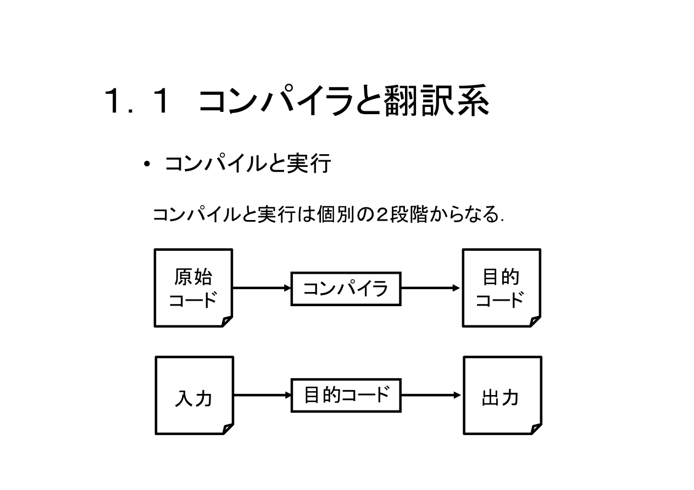
コンパイラの構造: 5つのフェーズと2つの横断的な仕事
コンパイラの内部は、一直線につながった工程（フェーズ、phase）に分けて考えるのが標準的な整理の仕方です。原始プログラムは次の順序で姿を変えていきます。
(1) 字句解析(lexical analysis) → (2) 構文解析(syntax analysis) → (3) 中間コード生成(intermediate code generation) → (4) コード最適化(code optimization)（必ずあるとは限らない）→ (5) コード生成(code generation)。
この5つの主フェーズに加えて、表管理(table management)（記号表への名前・型などの情報の登録と参照）と誤り処理(error handling)（各フェーズが検出した誤りの報告・処理継続の調整）が、5フェーズすべてを横断して働きます。いくつかのフェーズをひとまとめにした実行単位をパス(pass)と呼び、パス間のデータのやり取りは中間ファイルで行われますが、フェーズをどうパスにまとめるかという決まった原則はありません。
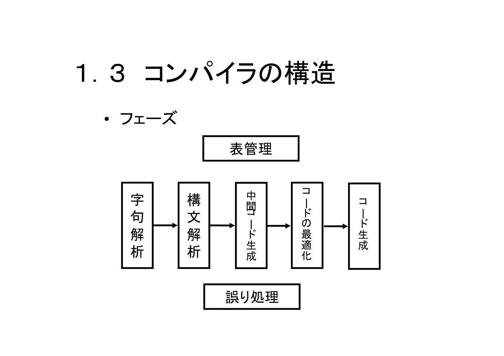
字句解析: 文字の並びを「単語」に切り分ける
字句解析系(lexical analyzer)はコンパイラの最初のフェーズであり、原始プログラムとコンパイラ本体とのインタフェースにあたります。原始プログラムを1文字ずつ読み込み、字句(token)と呼ばれる論理的な塊にまとめていく仕事をします。字句には、IFやDOのような手掛かり語(keyword)、XやNUMのような識別子(identifier)、+や<=のような演算子記号(operator symbol)などの種類があります。
字句は「型」と「値」の対（ペア）として表されます。IFや;のように値を持たない型もあれば、識別子や定数のように値を持つ型もあります。どこまでを1つの字句とみなすかはコンパイラ設計者にある程度の任意性がありますが、たとえばMAXという識別子をMとAXに分けて扱うのは不自然です。
字句の切り出しには先読みが必要になる場合があります。原文の例では、IF(5.EQ.MAX)GOTO100という文字列を読んでいるとき、5の直後に.が続くのを見た時点では、それが5（整数）で終わるのか、5.0（実数）になるのか、あるいは5.E-10のような指数表記になるのかがまだ確定していません。この文全体を字句解析すると [if,-] [(,-] [const,341] [eq,-] [id,729] [),-] [goto,-] [label,554] のような（型,値）の並びが得られます。ここで[const,341]は「定数、値は341」、[id,729]は「識別子、記号表上の729番目の登録」を意味します。
構文解析と解析木: 単語の並びに文法構造を与える
構文解析系(syntax analyzer)は、字句解析系から受け取った字句の並びが原始言語の文法として許されるかどうかを検査し、以降のフェーズで使いやすい木構造のデータへと変換します。たとえば A + B を表す3つの字句（A, +, B）は、式(expression)という1つの構文構造にまとめられ、式はさらに他の構文構造とまとめられて文を構成していきます。この木構造を解析木(parse tree)と呼び、木の葉（末端）に字句が並びます。
構文解析は誤り検査の役割も担います。たとえばA + / Bのような字句の並びは [id,…], [+,-], [/,-], [id,…] となりますが、演算子が2つ連続することは文法上許されないため、この時点で誤りだと判定できます。
同じ見た目の式でも、演算子の結合則は言語によって異なることがある点も重要です。A / B * C という式は、CやFortranでは (A / B) * C（左から評価）と解釈されますが、APLでは A / (B * C)（右から評価）と解釈されます。つまり「どちらを先に計算するか」は言語仕様の一部であり、構文解析はその言語ごとの規則に従って木を組み立てます。
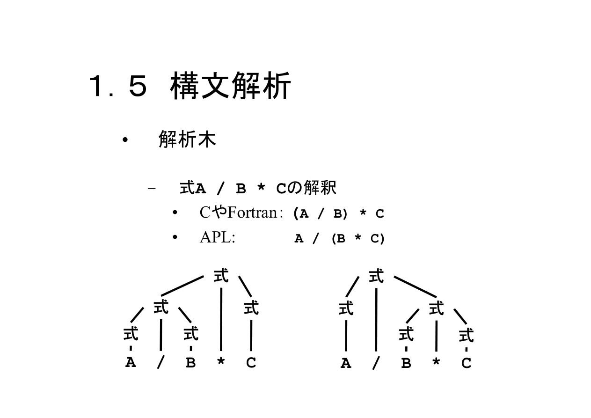
中間コード生成と3番地コード
中間コード生成系(intermediate code generator)は、構文解析系が作った構文構造（解析木）を使って、中間コードと呼ぶ一連の簡単な命令列を生成します。中間コードはマクロのようなもので、特定の計算機の詳細から独立した構造になっているのが特徴です。代表的な中間コードの形式が3番地コード(three-address code)で、基本の文の形は
A := B op C（Aが代入先、BとCが被演算子、opが演算子）
という「1つの代入先＋2つの被演算子＋1つの演算子」の単純な形をしています。この形式なら、複雑な式でも「一時変数を介した単純な計算の連鎖」として表現できます。
制御構造も3番地コードでは「条件判定＋ラベルへのジャンプ」の連鎖に展開されます。原文にある while A>B & A<=2*B-5 do A:=A+B; というwhile文は、次のように展開されます。
L1: if A>B goto L2
goto L3
L2: T1 := 2 * B
T2 := T1 - 5
if A <= T2 goto L4
goto L3
L4: A := A + B
goto L1
L3:ここでは、まず前半条件A>BをL1で判定し、成立しなければ即座にL3（ループの外）へ抜けます。成立した場合だけ後半条件の計算に進み、2*Bと2*B-5をそれぞれ一時変数T1・T2に退避してからA<=T2を判定し、成立すればL4（ループ本体）へ、しなければL3（脱出）へ分岐します。「複合条件を一度に判定せず、一時変数を介して段階的に判定する」という組み立て方は、次回以降で学ぶif文・while文のコード生成の原型になっています。
補足（自作の数値例）: 同じ3番地コードの考え方を、原文にはない別の式で確認してみます。if (A > B) C = D + E * F; という文を3番地コードにすると、演算子の優先順位（乗算が先）を反映して次のようになります。
if A > B goto L1
goto L2
L1: T1 := E * F
T2 := D + T1
C := T2
L2:乗算E*Fを先に一時変数T1へ計算し、それをDに足した結果をT2に置き、最後にCへ代入する、という3手順に分解されている点が「A := B op C」の形の繰り返し適用になっていることを確認してください。
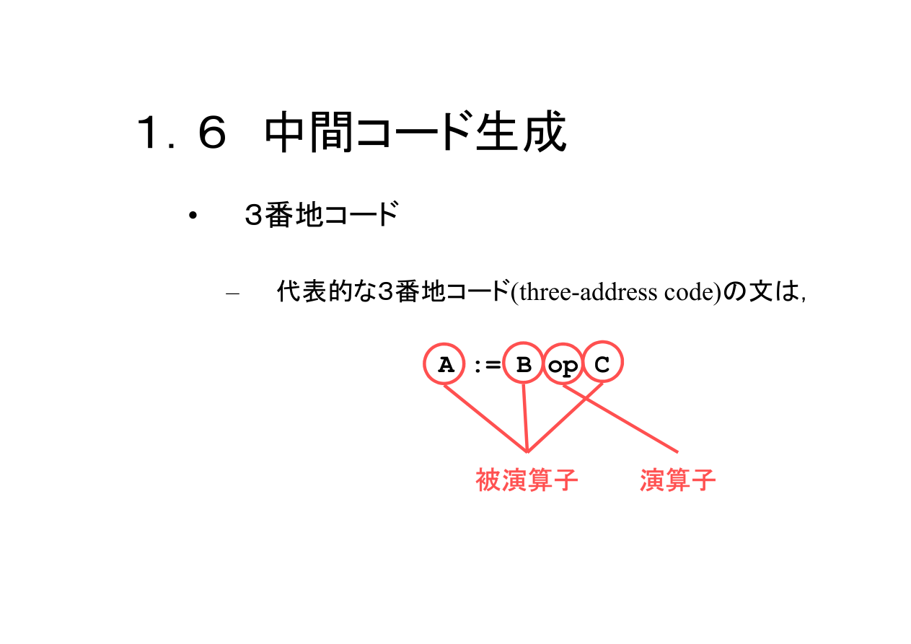
コード最適化: 局所最適化・共通部分式の削除・ループ最適化
コード最適化(code optimization)は、最終的な目的プログラムの実行速度向上や使用記憶域の抑制を目指して中間コードを改良するフェーズです。前フェーズ一覧の説明でも述べたとおり、このフェーズは必ず存在するとは限りません。
局所的なプログラム変換だけで達成できる最適化を局所最適化(local optimization)と呼びます。先ほどのwhile文の3番地コードの一部を例にとると、
L1: if A > B goto L2
goto L3
L2: T1 := 2 * B
T2 := T1 - 5という2つの連続した分岐（「Aが上ならL2、そうでなければ次の行でL3」）は、条件を否定して1つの分岐にまとめることで
L1: if A <= B goto L3
L2: T1 := 2 * B
T2 := T1 - 5のように書き換えられます。「AがB以下ならL3へ、それ以外は自然にL2へ落ちる」という書き方にすることで、無条件ジャンプ（goto L3）1文が丸ごと不要になります。これは「不要な命令を削る」という最適化の最も基本的な形です。
局所最適化の代表例として、共通部分式の削除とループ最適化があります。A := B + C + DとE := B + C + Fという2つの文には共通する部分式B + Cが含まれています。これを2回別々に計算するのは無駄なので、1回だけ計算した結果を一時変数に入れて使い回します。
T1 := B + C
A := T1 + D
E := T1 + Fループ最適化では、ループの中で値が変わらない計算（ループ不変式, loop invariant computation）を検出し、ループの直前に1回だけ計算するように移動します。ループを1回通るたびに同じ計算を繰り返すのではなく、ループに入る前に1回計算しておけば済む、という考え方です。
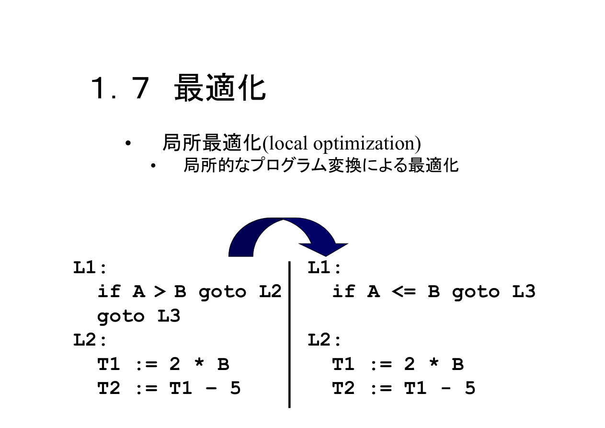
コード生成・レジスタ割当て・表管理・誤り処理
最後のフェーズであるコード生成(code generation)では、データ用の記憶位置、各データをアクセスするためのコード、計算遂行に使うレジスタなどを決定して、実際の目的コード（アセンブリ・機械語）を生成します。中間コードを機械的かつ単純に変換するだけだと、冗長なデータ転送命令を多く含む非能率的な目的コードになってしまいます。
そこでコード生成系は、レジスタの内容を記憶しておいて不要なデータ転送命令を削除するなど、レジスタを効率よく使うためのレジスタ割当て(register allocation)を行います。一般に最善のレジスタ割当てを求める問題はNP困難であることが知られているため、実用上は発見的な（ヒューリスティックな）手法が使われます。
表管理(記帳)は、原始プログラム中の全データ対象（変数・関数など）に関する情報を記号表(symbol table)に記入する仕事です。変数が整数か実数か、配列の大きさはいくつか、関数の引数の数はいくつか、といった情報を保持します。この情報収集は1つのフェーズだけでなく複数のフェーズにまたがって進みます。たとえば字句解析系が識別子MAXを発見すると、未登録であれば記号表にまず登録し、その後integer MAXという宣言を構文解析・意味解析の過程で見つけると、記号表のMAXのエントリに「整数型」という情報を追記します。収集された情報は型誤りの検出や暗黙の型変換の判断（意味解析, semantic analysis）など、多くのフェーズで利用されます。
誤り処理は、フェーズごとに検出できる誤りの種類が異なる点が特徴です。字句解析系は字句の綴り誤り、構文解析系は構文上の誤り、中間コード生成系は不適切な型の被演算子、コード最適化系は到達不能な文の検出、コード生成系は目的機械の1語に収まらない定数、表管理（記帳）は多重宣言された識別子、というように各フェーズが自分の担当領域の誤りを検出し、誤り処理系(error handler)に報告します。誤り処理系はできるだけ処理を先のフェーズへ進められるように調整しながら、適切なメッセージを生成します。
通し例: int foo(int x){ int y = x*x; return y+2; } を一気に追う
ここまでのフェーズを、原文が最後に示す具体例で一気通貫にたどってみます。原始プログラムは次の関数です。
int foo(int x) {
int y = x * x;
return y + 2;
}字句解析: このプログラムは、int（手掛かり語）、foo（識別子）、(、int、x（識別子）、)、{、int、y（識別子）、=、x、*、x、;、return（手掛かり語）、y、+、2（定数）、;、}という字句の列に分解されます。
構文解析: この字句列から、関数定義（指定子リストint・名前foo・パラメータリスト・複合文からなる）という構文構造が組み立てられます。パラメータリストには「int x」というパラメータが1つ、複合文の中には「int y」の変数宣言（初期値x*x）とreturn y+2という文が含まれる、という解析木が構成されます（補足: 節点同士の正確な枝分かれはテキストだけでは再現しきれないため、詳しい形はページ画像で確認してください）。
コード生成（最適化前）: 原文が示す、まだ最適化されていない目的コードは次の通りです。
_foo: push ebp
mov ebp, esp
sub esp, 4
mov eax, 8[ebp]
imul eax, 8[ebp]
mov -4[ebp], eax
mov eax, -4[ebp]
add eax, 2
mov esp, ebp
pop ebp
retここで8[ebp]は引数xの値が置かれている番地、-4[ebp]は局所変数yのために確保された番地を指します（この「なぜ8とか-4なのか」というスタックフレームの仕組みは、次回の言語処理系（２）でアドレス付きで詳しく扱います）。eaxにxを読み込み、自分自身を掛けてx*xを計算し、それをyの場所に書き込み、読み直してから+2してeaxに戻す、という素直だが冗長な流れになっています。
コード最適化後: 局所変数yをメモリに書き戻さずレジスタeax上だけで扱うように書き換えると、次のように圧縮できます。
_foo: mov eax, 4[esp]
imul eax, eax
add eax, 2
retスタックフレームを作るpush ebp/mov ebp,esp/sub esp,4/mov esp,ebp/pop ebpすら丸ごと省略され、引数xをesp相対の4[esp]から直接読み、レジスタだけでx*x+2を計算してretするだけの4命令にまで縮んでいます。この「メモリへの読み書きを減らし、フレーム構築すら省く」という発想は、言語処理系（５）で学ぶ最適化技法の先取りにあたります。
f(a,b){int c=a*2-1; return c+b;}、2024年: int foo(int a,int b){if(a>=0 && a<b) b=a; return b;}）はこの回のfoo例そのものではないため、命令の並び自体は改めて自力で導出する必要があります（根拠: ユーザー提供の過去問メモ）。この回のまとめ: コンパイラは目的言語がアセンブリ・機械語である翻訳系であり、内部は字句解析→構文解析→中間コード生成→（コード最適化）→コード生成という一直線のフェーズに分かれ、表管理（記号表）と誤り処理がそれを横断的に支えます。字句は(型,値)のペア、構文解析の成果物は解析木、中間コードの基本形は3番地コード「A := B op C」、最適化は局所最適化（共通部分式の削除・ループ不変式の移動など）が代表例、コード生成ではレジスタ割当てが鍵になります。最後に見たfoo関数の例が示すとおり、同じソースからでも「最適化前の素直なコード」と「最適化後の圧縮されたコード」の両方が生成されうる、という点が次回以降のアセンブリ読解の土台になります。
原文（全ページのテキストと画像）は md/sources/1.md を参照してください。
言語処理系（２）: 実行時メモリモデルと関数呼出しスタックフレームを0から理解する
この回は何を学ぶか: コンパイラが生成する目的コード（アセンブリ）が、実行時にどんなメモリ配置・レジスタ・命令の上で動くのかという「実行環境モデル」を学びます。具体的には(1) 80486を想定したメモリ領域の区分（コード領域・大域データ領域・ヒープ・スタック）、(2) CPUの汎用レジスタ（eax〜edi）とベースポインタebp・スタックポインタesp・命令ポインタeipの役割、(3) 算術・移動・比較・ジャンプ・スタック操作・関数呼出しの各アセンブリ命令、そして(4) 関数呼出し時にpush/call/retによってスタック上に「関数フレーム」がどう積み上がり、どう解体されるかを学びます。
なぜ学ぶのか: ユーザー提供の過去問メモによれば、2023年・2024年とも金子先生パートの最初の大問は「アセンブリコードの穴埋め」＋「あるラベル時点でのスタックとeaxレジスタの値を答える」という形式で出題されています。この回で学ぶ「引数・戻り番地・旧ebpがどの順でスタックに積まれるか」「8[ebp]や-4[ebp]がなぜその番地を指すのか」という仕組みを数値で追えるようになることが、過去問実績上もっとも重要な得点源になります。
mov esp,ebp→pop ebp→ret）、呼び出し元に戻ります。スタックは「後入れ先出し（LIFO）」の積み木であり、espは常に「積み木の一番上」を指すポインタ、ebpは「今実行中の関数の作業台の基準点」を指すポインタだとイメージすると、あらゆるn[ebp]という番地表記が「基準点からどれだけずれた場所か」を表しているだけだと理解できます。実行時メモリの区分: どこに何が置かれるか
80486（32ビットアドレス空間、バイト単位アクセス）を想定した実行時メモリは、大きくOS領域（OS専用）とユーザ領域（プログラム実行用）に分かれます。ユーザ領域はさらに、命令列を格納するコード領域と、データを格納するデータ領域に分かれ、データ領域は用途によって次の3つに区分されます。
- 大域データ領域: プログラム全体で共有される大域変数を置く場所。
- ヒープ: 実行時に動的に生成される変数（
malloc等で確保するデータ）を置く場所。 - スタック: 局所変数や関数呼出しのための「関数フレーム」を置く場所。
アドレス空間は下位番地0x00000000から上位番地0xffffffffまで広がっており、一般にコード領域・大域データ領域が低い番地側、ヒープが低い番地から上へ伸び、スタックが高い番地から下へ伸びるという配置がとられます（補足: 具体的な領域の上下配置は原文の図の通りの概略で、実際のOS実装では詳細が異なる場合があります）。この回で最も重要なのは、関数呼出しのたびに使われるスタックの動きです。
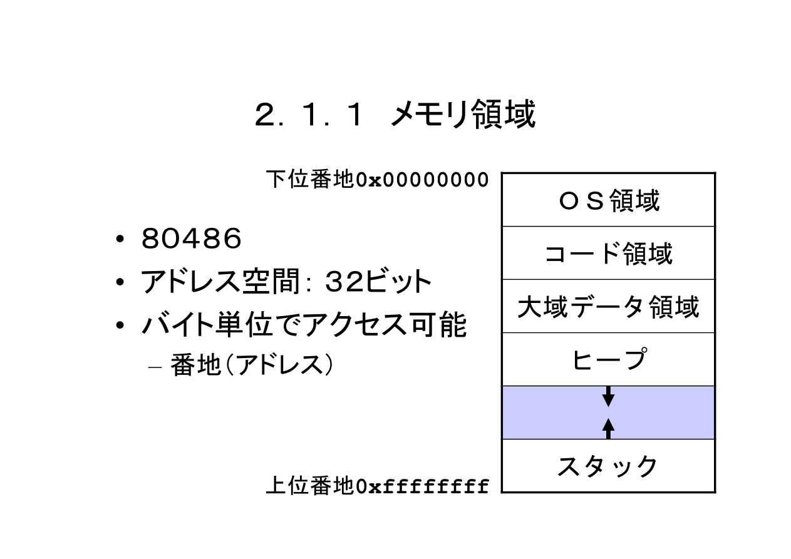
CPUとレジスタ: eax・ebp・esp・eipの役割
CPUはメモリから命令を読み込み（フェッチ）、実行します。ALU（算術論理演算装置）が計算を担当し、レジスタはCPU内部にある高速な記憶装置です。この回で使う主なレジスタは次の3種類です。
- 汎用レジスタ（32ビット長）:
eax, ebx, ecx, edx, esi, ediの6本が演算命令のオペランドとして使われます。このうちebp（ベースポインタ, base pointer）は現在実行中の関数フレームの基準番地を、esp（スタックポインタ, stack pointer）はスタックの最上位（次にpushされる番地の1つ手前）を保持する特別な役割を持ちます。 - 条件フラグ（1ビット長）: 演算結果に応じて変化するフラグ。
Z（ゼロフラグ）・S（符号フラグ）などがあり、cmp命令の結果や条件分岐命令の判定に使われます。 - 命令ポインタ（32ビット長）:
eip。CPUが次に実行すべき命令が格納されている番地を保持します。
関数呼出しの理解で特に重要なのはebpとespの使い分けです。espはpush/popのたびに自動的に動く「スタックの現在地」、ebpは関数の先頭でespの値をコピーして固定した「その関数専用の基準点」です。関数の実行中にespは一時変数のpush/popなどで動くことがありますが、ebpは関数の間ずっと同じ値を保つため、引数や局所変数へのアクセスは動かないebpを基準にした相対番地（例: 8[ebp]）で行うのが安全です。
アセンブリ命令の基本文法とメモリ番地表記
アセンブリコードは「ラベル：命令名 第1オペランド, …, 第nオペランド」という形の行の並びです。オペランドは最大3個までで、汎用レジスタ・メモリ番地・整数定数のいずれかに限られます。メモリ番地は「ラベル」または「汎用レジスタ＋相対番地」の形で書かれます。たとえば8[ebp]は「ebpの値に8を足した番地」、-4[ebp]は「ebpの値から4を引いた番地」を意味します。
この回で使う命令の種類と、各命令の意味は次の通りです。
- 算術命令:
add, sub, imul（2項、第2オペランドを第1オペランドに演算して第1に格納）、neg, dec, inc（単項）。例:add eax, ebxは「eaxにebxを加算」。 - 移動命令:
mov（第2オペランドの値を第1オペランドに格納。ただし2つのオペランドを同時にメモリ番地にすることはできない）。例:mov ebp, espは「ebpにespの値をコピー」。 - 比較命令:
cmp（第1から第2を減算した結果でフラグだけを更新。第1>第2ならZ=0,S=0、第1=第2ならZ=1,S=0、第1<第2ならZ=0,S=1）。 - ジャンプ命令:
jmp（無条件）、jg/jge/je/jne/jl/jle（条件付き、直前のcmpのフラグを見て分岐）。分岐が成立するとeipにラベルの番地が格納されます。 - スタック操作命令:
push（オペランドの値をスタック先頭に積み、espが4減る）、pop（スタック先頭の値をオペランドに取り出し、espが4増える）。 - 関数呼出し・リターン命令:
call（現在のeipの次の番地＝戻り番地をスタックに積み、指定されたラベルの番地をeipに設定）、ret（スタック先頭から戻り番地を取り出してeipに設定）。
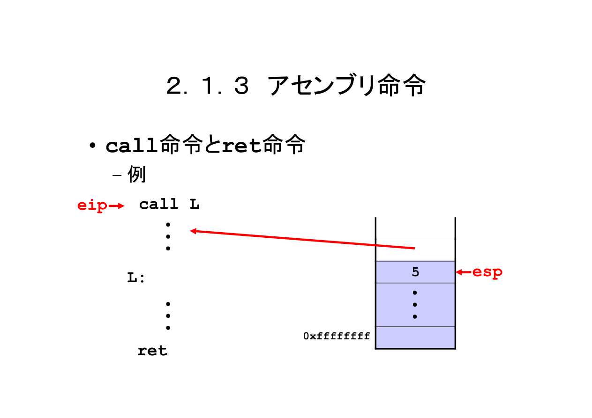
関数フレームの一般形
ある関数fのアセンブリコードは、次の共通の骨格（テンプレート）に従います（Nlocalは局所変数の合計サイズ）。
_f: push ebp
mov ebp, esp
sub esp, Nlocal
本体の実行
Lret: mov esp, ebp
pop ebp
retそして、関数呼出しf(e1, e2, ..., en)を行う側（呼び出し元）のアセンブリコードは、次の骨格に従います。
enを計算し、結果をスタックに積む
en-1を計算し、結果をスタックに積む
...
e1を計算し、結果をスタックに積む
call _f
add esp, n * 4ここで重要なのは、引数は右から左の順にスタックに積まれるという点です（enから先に積み、最後にe1を積む）。したがって呼出し直後のスタック上では、一番後に積んだe1が最もespに近い（浅い）位置に、enが最も深い位置に置かれます。呼出しが終わったあと、呼び出し元はadd esp, n*4によって積んだn個の引数の分（n*4バイト）を自分でスタックから取り除きます（この方式を呼出し元によるスタック片付けと呼びます）。
数値で追う: int foo(int x){ int y=x*x; return y+2; } のスタック推移
ここからが最重要パートです。原文のfoo関数を、呼び出し元がfoo(5)として呼び出す場面を、自分で仮の番地を割り当てて1命令ずつ手で追ってみます（補足: 以下の番地はすべて説明のために私が設定した仮の値であり、実際のOSが割り当てる番地とは異なります。値の推移の“仕組み”を確認することが目的です）。
アセンブリコードは次の通りです。
呼び出し元: push 5
call _foo
Ret: add esp, 4
_foo: push ebp
mov ebp, esp
sub esp, 4
mov eax, 8[ebp]
imul eax, 8[ebp]
mov -4[ebp], eax
mov eax, -4[ebp]
add eax, 2
mov esp, ebp
pop ebp
retpush 5を実行する直前、呼び出し元のesp = 0x0012FF20、ebp = 0x0012FF50（呼び出し元自身の基準点）だったとします。ここから1命令ずつ、esp・ebp・eaxの値と、スタックの中身（アドレスとその中身）がどう変化するかを表にします。
| 実行後の命令 | esp | ebp | eax | 新たにできた/更新されたメモリ内容 |
|---|---|---|---|---|
| (実行前) | 0x0012FF20 | 0x0012FF50 | 不定 | — |
| push 5 | 0x0012FF1C | 0x0012FF50 | 不定 | [0x0012FF1C] = 5 （引数x） |
| call _foo | 0x0012FF18 | 0x0012FF50 | 不定 | [0x0012FF18] = 0x00401030（戻り番地、Ret行の番地と仮定）／eipが_fooの先頭へ |
| push ebp | 0x0012FF14 | 0x0012FF50 | 不定 | [0x0012FF14] = 0x0012FF50（呼び出し元の旧ebp） |
| mov ebp, esp | 0x0012FF14 | 0x0012FF14 | 不定 | ebpがfoo自身の基準点になる |
| sub esp, 4 | 0x0012FF10 | 0x0012FF14 | 不定 | 局所変数yの領域を1つ確保（まだ値は不定） |
| mov eax, 8[ebp] | 0x0012FF10 | 0x0012FF14 | 5 | 8[ebp]=0x0012FF14+8=0x0012FF1C の値5を読む＝引数xそのもの |
| imul eax, 8[ebp] | 0x0012FF10 | 0x0012FF14 | 25 | eax = 5 * 5 = 25（x*x） |
| mov -4[ebp], eax | 0x0012FF10 | 0x0012FF14 | 25 | -4[ebp]=0x0012FF14-4=0x0012FF10 に25を書き込む＝局所変数y |
| mov eax, -4[ebp] | 0x0012FF10 | 0x0012FF14 | 25 | yの値25を読み直す |
| add eax, 2 | 0x0012FF10 | 0x0012FF14 | 27 | eax = 25 + 2 = 27（戻り値y+2） |
| mov esp, ebp | 0x0012FF14 | 0x0012FF14 | 27 | 局所変数領域を破棄（espをebpまで戻す） |
| pop ebp | 0x0012FF18 | 0x0012FF50 | 27 | [0x0012FF14]の旧ebpを読み戻し、呼び出し元の基準点を復元 |
| ret | 0x0012FF1C | 0x0012FF50 | 27 | [0x0012FF18]の戻り番地をeipへ、呼び出し元のRet行に戻る |
| add esp, 4 | 0x0012FF20 | 0x0012FF50 | 27 | 積んだ引数5の分を後片付け（元の位置に復帰） |
この表から読み取れる、過去問で問われうるポイントは次の3つです。第一に、8[ebp]が引数xを指すのは、ebpより8バイト先（ebp+4に戻り番地、ebp+8に引数）という積み順の結果にすぎない、ということ。第二に、-4[ebp]が局所変数yを指すのは、ebpを確定させた直後にsub esp,4で確保した領域がebpのすぐ下（ebp-4）にできるから、ということ。第三に、eaxは関数の計算結果・戻り値を運ぶレジスタとして一貫して使われ、最後のeax=27が呼び出し元にそのまま戻り値として渡される、ということです。
補足（過去問形式の練習）: 仮に「mov -4[ebp], eaxを実行した直後（yへの書き込み直後）のスタックの最上位4つとeaxの値を答えよ」と問われた場合、上の表から、esp=0x0012FF10を先頭に、[0x0012FF10]=25（局所変数y）、[0x0012FF14]=旧ebp(0x0012FF50)、[0x0012FF18]=戻り番地(0x00401030)、[0x0012FF1C]=5（引数x）、eax=25、と読み取れます。実際の過去問では番地は与えられず「上から4つのスタックの中身」を記号や値で埋める形式が多いので、番地そのものより「どの順で何が積まれているか」という並び自体を覚えておくことが得点に直結します。
int foo(int a,int b){...}形式の関数について「冗長なアセンブリコードの穴埋め」「L3まで進んだ時点でのスタック（最上位espから4つ分）とeaxの値」「最適化後の穴埋め」が出題され、2023年はf(a,b){int c=a*2-1; return c+b;}について同様に「アセンブリの穴埋め」「あるラベル（L1）直前のスタックとeaxの状態」が出題されています（根拠: ユーザー提供の過去問メモ）。上の表で示した「push→call→push ebp→mov ebp,esp→sub esp,N」という積み上げの型と、「8[ebp]=第1引数、-4[ebp]=最初の局所変数」という読み方を、出題された具体的な関数に当てはめて自力で再現できるようにしておくことが重要です（配点・出題形式は年度により変わりうるため、この型を機械的に適用する練習が推定される対策として有効です）。再帰呼出しでスタックが積み重なる様子: fact(3)を追う
関数フレームの考え方は再帰呼出しでもそのまま成り立ちます。原文の階乗関数
int fact(int n) {
if (n == 0) return 1;
else return n * fact(n-1);
}のアセンブリは次の通りです。
_fact: push ebp
mov ebp, esp
cmp 8[ebp], 0 ; n == 0
jne L2
mov eax, 1 ; 戻り値1
jmp L1
L2: mov eax, 8[ebp] ; n-1
sub eax, 1
push eax
call _fact ; 再帰呼出し
add esp, 4
imul eax, 8[ebp] ; (n-1の結果) * n
L1: pop ebp
ret補足（自作の数値例）: これをfact(3)として呼び出した場合、再帰はfact(3)→fact(2)→fact(1)→fact(0)と3段深くなり、fact(0)がn==0でeax=1を返すのを起点に、fact(1)=1*1=1、fact(2)=1*2=2、fact(3)=2*3=6という順に呼び出し元へ計算結果が伝播します。fact(0)の実行に入った直後（mov ebp,esp直後）の時点でスタック上には4段分のフレームが積み重なっており、仮にfact(3)呼出し直前のesp=0x0012FF80から出発すると、次のような並びになります（アドレスは仮設定・4バイトずつ減少）。
| アドレス | 中身 | 所属 |
|---|---|---|
| 0x0012FF50 ← esp/ebp(fact(0)) | fact(1)の旧ebp | fact(0)のフレーム先頭 |
| 0x0012FF54 | 戻り番地（fact(1)内のadd esp,4へ） | fact(0)呼出し時にcallが積んだもの |
| 0x0012FF58 | 0（n=0） | fact(0)の引数（8[ebp]でアクセス） |
| 0x0012FF5C ← ebp(fact(1)) | fact(2)の旧ebp | fact(1)のフレーム先頭 |
| 0x0012FF60 | 戻り番地（fact(2)内のadd esp,4へ） | fact(1)呼出し時にcallが積んだもの |
| 0x0012FF64 | 1（n=1） | fact(1)の引数 |
| 0x0012FF68 ← ebp(fact(2)) | fact(3)の旧ebp | fact(2)のフレーム先頭 |
| 0x0012FF6C | 戻り番地（fact(3)内のadd esp,4へ） | fact(2)呼出し時にcallが積んだもの |
| 0x0012FF70 | 2（n=2） | fact(2)の引数 |
| 0x0012FF74 ← ebp(fact(3)) | 呼び出し元の旧ebp | fact(3)のフレーム先頭 |
| 0x0012FF78 | 戻り番地（呼び出し元へ） | fact(3)呼出し時にcallが積んだもの |
| 0x0012FF7C | 3（n=3） | fact(3)の引数 |
この表を下から読むと「呼び出すたびに、引数→戻り番地→旧ebpの3点セットが1段ずつ積み増される」という規則性が視覚的にわかります。factには局所変数がないためsub esp,Nが現れず、1回の呼出しあたりの積み増しはちょうど12バイト（引数4＋戻り番地4＋旧ebp4）です。fact(0)でeax=1が確定した後は、retで1段ずつ戻りながらimul eax,8[ebp]（自分のnを掛ける）を実行するため、eaxは1→1→2→6と更新されて最終的に3! = 6が呼び出し元に返ります。
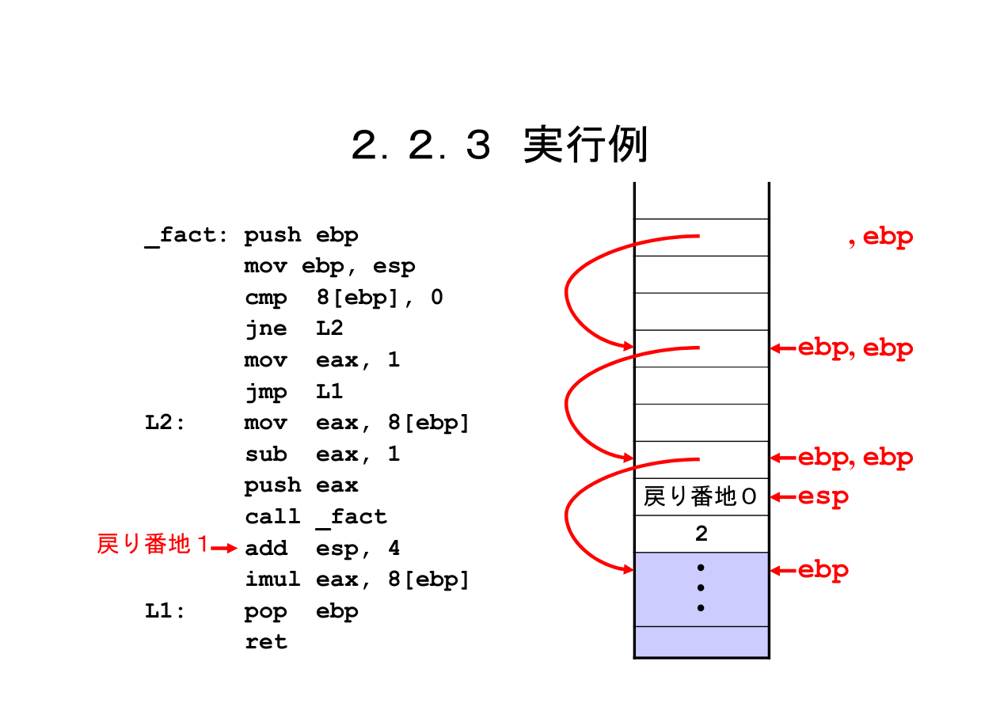
局所変数のスコープ、一時変数、レジスタ退避
関数呼出しの引数は第1引数=8[ebp]、第2引数=12[ebp]のように、積まれた順に4バイトずつ増えるオフセットでアクセスされます。局所変数の番地は関数ごとに個別に決定され、使用領域を小さく抑えるために、スコープが重ならない局所変数どうしは同じ番地を再利用（重ねて割当て）できます。たとえば複合文{ ... }の中で宣言された変数は、その複合文を抜けた時点でスコープが終わるため、以降の別の複合文の変数に同じ番地を再利用してもプログラムの意味は変わりません。
計算の途中結果を一時的に保持するために使われる一時変数は、プログラマが明示的に宣言する変数と違って「スコープ」という概念を持ちません。一時変数の割当てと解放が他の変数のスコープをまたいで交錯することはないため、通常の局所変数と同様の方法（スタック上の番地割当て）で扱うことができます。
関数呼出しをまたいでレジスタの値を保護する必要がある場合、その退避の責任を呼び出す側と呼ばれる側のどちらが持つかという取り決めがあります。
- 関数側退避(callee-saved)レジスタ: 呼び出し元がまだ使っている可能性のあるレジスタ。呼ばれた関数の側が、実行開始前に自分でスタックへ退避し、終了前に復元する責任を持ちます。
- 呼出し側退避(caller-saved)レジスタ: 呼び出し元が現在使用中のレジスタ。呼び出し元の側が、関数呼出しの前に自分でスタックへ退避しておく責任を持ちます。呼ばれた関数の側はこのレジスタを自由に上書きしてよいことになります。
原文にはeaxレジスタは呼出し側退避（caller-saved）である、と明記されています。実際、これまでのfooやfactの例でも、関数は戻り値をeaxに入れたままretしており、呼び出し元は「呼出し後のeaxには自分の戻り値が入っている」と期待して読み取っています。もしeaxを関数呼出しの前に何か大事な値のために使っていたなら、呼び出す側が自分でその値を退避しておかなければならない、という意味になります。
espとebpの役割を混同する（espは関数の実行中も動く「今の先端」、ebpは関数の間ずっと固定の「基準点」）。(2) 引数がe1, e2, ..., enの順（左から右）に積まれると思い込む（実際はenからe1へ、右から左の順に積まれる）。(3) pushのたびにespが増えると勘違いする（スタックは高い番地から低い番地へ伸びるため、pushでespは4減り、popで4増える）。(4) 8[ebp]が常に「引数」を指すと丸暗記し、局所変数がある場合は-4[ebp]のように負のオフセットになることを見落とす。(5) callee-savedとcaller-savedを取り違える（eaxは呼出し側退避＝caller-saved）。この回のまとめ: 80486の実行環境モデルでは、スタックが局所変数と関数フレームの置き場所になります。関数呼出しは「呼び出し元が引数を右から左の順にpushし、callで戻り番地をpushしてジャンプ」「呼ばれた側がpush ebp/mov ebp,espで基準点を作り、sub espで局所変数領域を確保」という手順でフレームを積み、終了時は「mov esp,ebpで局所変数領域を破棄、pop ebpで基準点を復元、retで戻り番地へジャンプ」「呼び出し元がadd esp,n*4で引数の後片付け」という手順で解体します。この結果、8[ebp]が第1引数、12[ebp]が第2引数、-4[ebp]が最初の局所変数を指すという規則性が生まれます。再帰呼出しでは、この「引数→戻り番地→旧ebp」の3点セットが呼出しの深さだけ積み重なります。この積み上げ・解体の手順を、実際のアドレスと値の推移として自分の手で書き出せるようになることが、過去問対策上もっとも重要です。
原文（全ページのテキストと画像）は md/sources/2.md を参照してください。
言語処理系（３）: 制御構造（if・while・for）はどうアセンブリになるのか、0から理解する
この回は何を学ぶか: C言語のような高級言語で書かれた「文」（宣言文・複合文・if文・while文・for文・式文・代入式）が、コンパイラの中でどのようにcmp／jcc（条件分岐）／jmp（無条件分岐）とラベルの組み合わせに変換されるかを、決まった「型（テンプレート）」として学びます。
なぜ学ぶのか: ここで学ぶテンプレートは、次回（言語処理系４）で扱う式のコード生成、さらに次々回（言語処理系５）で扱う最適化の「素材」そのものです。最適化前のベースとなるアセンブリコードがどう組み立てられるかを知らないと、最適化がどこにどう効いているのかも理解できません。過去問のアセンブリ穴埋め問題は、まさにこのベースコードの組み立てを問う形式で出題されています。
1. 宣言文と複合文: ローカル変数はどこに置かれるか
局所変数（関数の中で宣言される変数）は、実行時にはメモリ上のスタックフレームの中の決まった位置（ebpからの相対番地、例えば8[ebp]や-4[ebp]）に割り当てられます。宣言文 int x = 10; のように初期値がある場合は、その初期値をメモリへ書き込むコード（mov n[ebp], 10）が1つ生成されます。初期値がない宣言（例えば int y;）は、番地の割り当てが決まるだけで、実行時に何か命令が出るわけではありません（コード生成量はゼロ）。
複合文 { d1 ... dn s1 ... sm } は「宣言d1〜dnの初期化」を先にすべて行い、続けて「文s1〜smの実行」を順番に行う、という単純な構造です。複合文の終わりでは、d1〜dnとして使われていた局所変数の領域を解放しますが、これは物理的にメモリを消すという意味ではなく、「その領域を以降の宣言のために再利用できるようにする」という意味です。
2. if文のコード生成: 条件は「否定」で分岐する
if文で最初につまずきやすいのが、「条件が成り立つときにジャンプする」のではなく「条件が成り立たないときにジャンプする（本体をスキップする）」という発想です。単純な if (e) s は次の形になります。
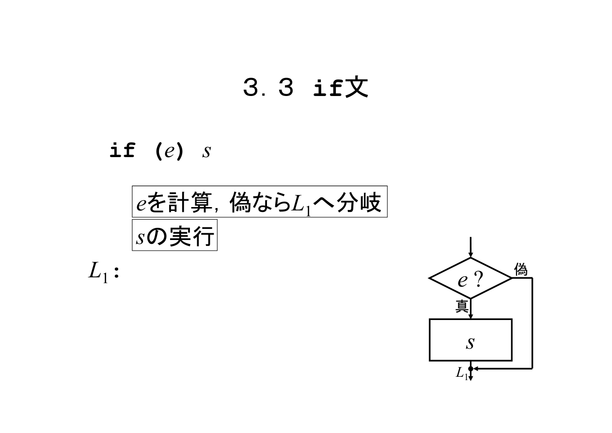
eを計算，偽ならL1へ分岐
sの実行
L1:if-else形 if (e) s1 else s2 はs1実行後に、s2をスキップして合流点L2へ飛ぶためのjmp L2が追加され、ラベルが2つ（L1: else部の入口、L2: 合流点）になります。
eを計算，偽ならL1へ分岐
s1の実行
jmp L2
L1: s2の実行
L2:自分の手で確かめてみましょう。score（8[ebp]に割当て）を使い、if (score >= 60) grade = 1; else grade = 0;（gradeは-4[ebp]）という自作の例を考えます。条件「score>=60」の否定は「score<60」なので、否定条件で分岐するjl（未満なら分岐）を使い、次のようになります。
cmp 8[ebp], 60
jl L1
mov -4[ebp], 1
jmp L2
L1: mov -4[ebp], 0
L2:jmp L2を書き忘れる間違いも頻出です。これを忘れると、s1を実行した後にそのままL1（s2の先頭）へ処理が落ちてしまい、s2まで実行されてしまいます。3. while文: 条件判定を先頭に置くループ
while文 while (e) s は、if文の骨格に「本体実行後にもう一度先頭へ戻るjmp」を加えたものと考えられます。
L1: eを計算，偽ならL2へ分岐
sの実行
jmp L1
L2:break文とcontinue文は、それぞれ決まったラベルへの無条件ジャンプとして生成されます。while文では、break文は「ループを完全に抜ける」ので終了ラベルL2へ、continue文は「次の周回の条件判定からやり直す」ので条件判定のラベルL1へジャンプします。
break文 ⇒ jmp L2
continue文 ⇒ jmp L1自作例として、cnt（-8[ebp]）を使った while (cnt < 5) cnt += 2; を考えます。継続条件「cnt<5」の否定「cnt>=5」で分岐するのでjgeを使います。
L1: cmp -8[ebp], 5
jge L2
add -8[ebp], 2
jmp L1
L2:4. for文: whileに「初期化」と「更新」を足したもの
for文 for (e1; e2; e3) s は、while文の骨格に「ループ前に1回だけ実行する初期化e1」と「毎周回、本体の後に実行する更新e3」を追加したものです。更新e3の直前に置かれるラベルL2が、for文におけるcontinue文の飛び先になります。
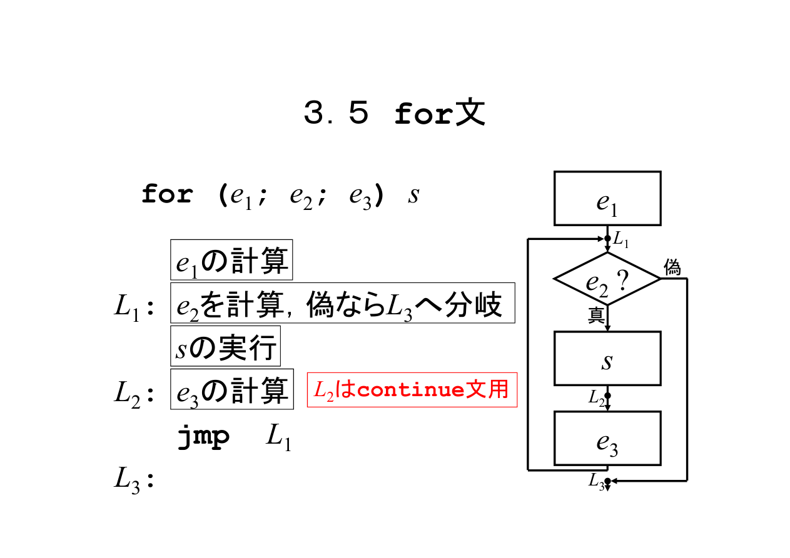
e1の計算
L1: e2を計算，偽ならL3へ分岐
sの実行
L2: e3の計算
jmp L1
L3:break文・continue文の飛び先は、while文とは異なりL3・L2になります。
break文 ⇒ jmp L3
continue文 ⇒ jmp L2自作例として、10から1まで減らしながら合計する for (k = 10; k > 0; k--) total += k;（kは-4[ebp]、totalは8[ebp]）を考えます。継続条件「k>0」の否定「k<=0」で分岐するのでjleを使います。
mov -4[ebp], 10
L1: cmp -4[ebp], 0
jle L3
mov eax, -4[ebp]
add 8[ebp], eax
L2: sub -4[ebp], 1
jmp L1
L3:この処理を頭の中でトレースすると、k=10,9,...,1の10回本体が実行され、totalには初期値に10+9+...+1=55が加算されます。k=0になった時点でjle L3が成立し、ループを抜けます。
5. 式文と代入式: 「計算して捨てる」か「計算して格納する」か
式文 e; は、eを計算するだけで、結果をどこにも格納しません（副作用のためだけに評価する文）。代入式 v = e は、eを計算した結果Rを、mov loc(v), Rで変数vの場所（loc(v)）に書き込みます。
多重代入 v1 = v2 = ... = vn = e; では、eの計算は1回だけ行い、その結果Rを右から左へ複数のmov命令でコピーします。eを毎回計算し直すわけではありません。
eの計算（結果R）
mov loc(vn), R
mov loc(vn-1), R
...
mov loc(v1), R自作例として、p = q = r - 1;（p:8[ebp], q:12[ebp], r:-4[ebp]、結果はeaxに残す）を考えると、次のようになります。
mov eax, -4[ebp]
sub eax, 1
mov 12[ebp], eax
mov 8[ebp], eax6. 演習: 制御構文を入れ子にして組み立ててみる
ここまでのテンプレートは、外側の骨格の「本体sの位置」に、内側の骨格をそのまま代入することで入れ子にできます。原資料の演習問題１（while (x != 0) if (x > 0) x--; else x++;）はこの入れ子構造の代表例で、L1〜L4まで段階的にラベルを埋めていく構成になっています（詳細な全ページの穴埋め過程はmd/sources/3.mdを参照してください）。
ここでは別の自作例で同じ考え方を練習します。for (i = 0; i < 3; i++) if (i == 1) skip++; else total += i;（i:-4[ebp], skip:-8[ebp], total:8[ebp]）を考えると、外側のforテンプレートの「sの実行」の位置に、内側のif-elseテンプレートをそのまま展開します。
mov -4[ebp], 0
L1: cmp -4[ebp], 3
jge L3
cmp -4[ebp], 1
jne L4
add -8[ebp], 1
jmp L5
L4: mov eax, -4[ebp]
add 8[ebp], eax
L5:
L2: add -4[ebp], 1
jmp L1
L3:外側のforのラベル(L1,L2,L3)と、内側のif-elseのラベル(L4,L5)が重複しないように番号をずらしている点がポイントです。試験のアセンブリ穴埋め問題でも、この「外側のテンプレートに内側のテンプレートをそのまま代入する」考え方で、どんなに深く入れ子になっても機械的に組み立てられます。
この回のまとめ: if・while・forはすべて「条件を計算する→条件不成立側で分岐する→本体を実行する→（ループなら先頭へ戻る）」という同じ骨格の変種です。forはwhileに「初期化e1」と「更新e3（continueの飛び先）」を足したものと考えると、5つのテンプレートを暗記しなくても導出できます。break/continueの飛び先ラベルはwhileとforで異なる（while: break→L2, continue→L1／for: break→L3, continue→L2）ため、混同しないよう注意してください。式文・代入式・多重代入は、これらの制御構文の「本体s」の中身として組み合わさります。
原文（全ページのテキストと画像）は md/sources/3.md を参照してください。
言語処理系（４）: 算術式のコード生成アルゴリズムと必要レジスタ数の見積り
この回は何を学ぶか: 二項算術式 e1 . e2 をできるだけ少ない命令・少ないレジスタで計算するための「計算順序の型」（RSL型・RL型・R型・LR型・L型）を判定する表４．１と、各部分式の計算に必要なレジスタ数r(e)を見積もる表４．２の使い方を、実際の式に手を動かして適用しながら学びます。
なぜ学ぶのか: 2024年の過去問メモに「汎用レジスタ3つが使える場面において{(a-1)*(b-2)+(c-3)*(e-4)*(d-5)}*{(e)-(f-6)}の推測レジスタ数と命令型を聞かれました。授業資料の表を覚えていれば解けると思います」とあり、また2023年メモにも「RSL型、RL型などのコード生成アルゴリズムと必要なレジスタ数を問う問題」への言及があります。本資料の既存の出題予測でも「必要レジスタ数の見積もり」はS級（毎年に近い頻度）と分類されており、表４．１・表４．２そのものが直接の出題対象になった実績があります。
1. なぜ計算順序が性能を左右するのか
二項算術演算子（+, -, *など）に対応するアセンブリ命令instは、通常「レジスタと、もう一方のオペランド（レジスタまたはメモリ）」という形をとります。e1 . e2を計算する基本手順は「e1の値をレジスタRにロードし、Rを第1オペランド、e2の値を第2オペランドとしてinstを実行する」というものです。例えばx+yは次のようになります。
mov R, loc(x)
add R, loc(y)ここで、もしe1の値がすでに計算済みでレジスタR′に入っているなら、わざわざRにロードし直す必要はありません。例えばa*b+yでは、a*bの結果をそのまま使い回せます。
mov R', loc(a)
imul R', loc(b)
add R', loc(y)しかし、e1・e2の両方が「計算が必要な式」（変数や定数そのものではない）である場合は話が変わります。a*b+x*yをそのまま素朴に計算すると、a*bの結果とx*yの結果を両方レジスタに残しておく必要があり、レジスタが足りなければ一時変数（tmp、メモリ上の一時領域）への退避が発生します。この「レジスタをどう使い回すか」が、この回で学ぶ表の存在理由です。
2. 可換演算と非可換演算
e1 . e2 = e2 . e1が成り立つ演算（+, *など）を可換演算、成り立たない演算（-など）を非可換演算と呼びます。この違いは、計算順序を選べるかどうかに直結します。可換演算なら、e1とe2のどちらを先に計算してもよい（順序を入れ替えても最終的な値は変わらない）ため、レジスタの都合で自由に順序を選べます。非可換演算では、演算命令（inst R1, R2）を実行する際に「どちらがR1（第1オペランド）でどちらがR2（第2オペランド）か」を正しく保つ必要があり、選べる自由度が下がります。
この「N（利用可能なレジスタ数）」「r(e1), r(e2)（各部分式に必要なレジスタ数）」「演算子の可換性」の3つの組み合わせによって計算順序が決まる、というのがこの回の中心テーマです。ただし1つだけ特別なルールがあり、r(e1)=r(e2)=Nのとき（両方がレジスタを使い切る場合）は、可換・非可換によらず常にe2から先に計算します。これは非可換演算のときに正しい順序を保証するための安全策で、可換演算のときもこのルールに合わせておけば統一的に扱えます。
3. コード生成の5類型（RSL型・RL型・R型・LR型・L型） — 表４．１
算術式e1 . e2のコード生成には、次の5つの型があります。
- RSL型: e2を計算（結果R2）→ 一時変数tmpに退避 → e1を計算（結果R1）→
inst R1, tmp。両方がレジスタを使い切るとき（r(e1)=r(e2)=N）に使う、最も手間のかかる型。 - RL型: e2を計算（結果R2）→ e1を計算（結果R1）→
inst R1, R2。退避なしで両方の結果をレジスタに残せる場合。 - R型: e2を計算（結果R2）→
inst R2, loc(v)（e1は変数/定数v）。可換演算限定。 - LR型: e1を計算（結果R1）→ e2を計算（結果R2）→
inst R1, R2。RL型とは逆に、e1を先に計算する。 - L型: e1を計算（結果R1）→
inst R1, loc(v)（e2は変数/定数v）。
これらの型を、r(e1)とr(e2)の関係（Nと等しいか、0より大きくN未満か、0か）、そして演算の可換性によって振り分ける表が表４．１です。
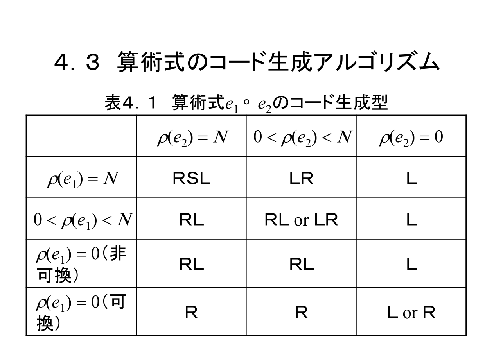
表４．１ 算術式 e1 . e2 のコード生成型
| r(e2)=N | 0<r(e2)<N | r(e2)=0 | |
|---|---|---|---|
| r(e1)=N | RSL | LR | L |
| 0<r(e1)<N | RL | RL or LR | L |
| r(e1)=0（非可換） | RL | RL | L |
| r(e1)=0（可換） | R | R | L or R |
表の読み方のコツは次の通りです。r(e1)=0（変数や定数そのもの）の行が2種類あるのは、r(e1)=0のときにR型（e1をロードせずにloc(v)のまま演算オペランドとして使う型）が選べるかどうかが、可換性に依存するためです。可換演算ならinst R2, loc(v)で正しい結果になりますが、非可換演算では演算の順序が変わってしまうため、この最も簡潔なR型は使えず、代わりにe1もレジスタにロードするRL型を使います。
4. 必要レジスタ数の見積り — 表４．２（この講義独自の方式に注意）
表４．１を使うには、まずr(e1)とr(e2)の値（各部分式の計算に必要なレジスタ数）がわかっていなければなりません。これを見積もるのが表４．２です。
表４．２ 算術式 e1 . e2 の使用レジスタ数の見積り r(e1 . e2)
| r(e2)=N | 0<r(e2)<N | r(e2)=0 | |
|---|---|---|---|
| r(e1)=N | N | N | N |
| 0<r(e1)<N | N | RL: max(r(e1)+1,r(e2)) LR: max(r(e1),r(e2)+1) | r(e1) |
| r(e1)=0（非可換） | N | max(2, r(e2)) | 1 |
| r(e1)=0（可換） | N | r(e2) | 1 |
この表は表４．１と行・列の構造が完全に対応しています。つまり「表４．１でどの型になるか判定した上で、表４．２の同じセルの式でレジスタ数を求める」という2段階の作業になります。r(e)は、eが変数または定数（葉）ならr(e)=0、そうでなければ子の型に応じて表４．２の式を再帰的に適用して求めます。
5. 実践: 表４．１・表４．２を自分の手で式に適用してみる
ここからは、原資料には出てこない自作の式を使って、表の使い方を最初から最後まで手を動かして確認します。N=2（利用可能な汎用レジスタはeax, ebxの2本）とします。
例1: RL型・L型が混在する式 (p+q)*(u-v) + t*w を考えます。
まず葉（p, q, u, v, t, w）はすべてr=0です。次に、部分式ごとにボトムアップで型とレジスタ数を求めます。
p+q: r(e1)=r(p)=0（可換）, r(e2)=r(q)=0 → 表４．１で「r(e1)=0(可換)」×「r(e2)=0」＝L or R。表４．２の同セルは1。ここではL型を選び、r(p+q)=1。u-v: r(e1)=r(u)=0（非可換）, r(e2)=r(v)=0 → 「r(e1)=0(非可換)」×「r(e2)=0」＝L、レジスタ数1。r(u-v)=1。t*w: p+qと同様に可換の葉同士なのでL or R、r(t*w)=1。(p+q)*(u-v): e1=(p+q)でr(e1)=1、e2=(u-v)でr(e2)=1。N=2なのでどちらも「0<r<N」列・行 → 表４．１はRL or LR。表４．２は RL: max(1+1,1)=2、LR: max(1,1+1)=2、どちらでも2。ここではRL型を選びます。- 最後に
((p+q)*(u-v)) + (t*w): e1の r=2=N、e2の r=1（0<r<N）→ 表４．１で「r(e1)=N」×「0<r(e2)<N」＝LR型。表４．２は行r(e1)=Nなので常にN=2。
型がすべて決まったので、実際にコードを組み立てます（RL型の内部手順「e2の計算(結果R2)→e1の計算(結果R1)→inst R1,R2」、LR型の内部手順「e1の計算(結果R1)→e2の計算(結果R2)→inst R1,R2」に従います）。
; e1 = (p+q)*(u-v) ※RL型: e2=(u-v)を先に計算
mov eax, loc(u)
sub eax, loc(v) ; u-v の結果 → eax
mov ebx, loc(p)
add ebx, loc(q) ; p+q の結果 → ebx
imul ebx, eax ; (p+q)*(u-v) の結果 → ebx （これがトップ式のR1）
; e2 = t*w
mov eax, loc(t)
imul eax, loc(w) ; t*w の結果 → eax （これがトップ式のR2）
; トップ式は LR型なので、最後に inst R1, R2
add ebx, eax ; 最終結果 → ebxeax・ebxの2本だけで、退避（tmp）なしに最後まで計算できていることが確認できます。
例2: RSL型が必要になる式 (a+b)*(c+d) - (e+f)*(g+h)（N=2のまま）を考えます。
例1と同じ要領で、(a+b)*(c+d)も(e+f)*(g+h)も、内部はRL型（またはLR型）でr=2（=N）になります。問題はトップのe1 - e2で、e1もe2もr=N=2になってしまう点です。表４．１で「r(e1)=N」×「r(e2)=N」のセルを見るとRSL型で、表４．２はN=2です。RSL型は「e2を計算→一時変数tmpに退避→e1を計算→inst R1, tmp」という手順で、e2の計算結果をいったんメモリに逃がす必要があります。これは、e1もe2も2本のレジスタをフルに使うため、e2の結果をレジスタに残したままe1を計算するスペースがない（RL型やLR型のようにはできない）からです。
; e2 = (e+f)*(g+h) を先に計算（RSL型なのでe2から）
mov eax, loc(g)
add eax, loc(h)
mov ebx, loc(e)
add ebx, loc(f)
imul ebx, eax ; (e+f)*(g+h) の結果 → ebx
mov tmp, ebx ; 一時変数へ退避（ここがRSL型の"S"）
; e1 = (a+b)*(c+d) を計算
mov eax, loc(c)
add eax, loc(d)
mov ebx, loc(a)
add ebx, loc(b)
imul ebx, eax ; (a+b)*(c+d) の結果 → ebx
; inst R1, tmp
sub ebx, tmp ; 最終結果 → ebx補足: 表４．２の「0<r(e1)<N」×「r(e2)=N」セルの値が一律Nになっている理由は、eを計算する途中で一時的にN本のレジスタを使い切ることがあるためだと理解すると納得しやすくなります（この説明は原資料に明記された式の意味を筆者が補足したものです）。
6. 関数呼出し・論理式・戻り値のコード生成
関数呼出し f(e1, e2, ..., en) では、各引数の計算結果はスタックに積まれます。各引数の計算に必要なレジスタ数の最大値max(r(e1),...,r(en))で足りそうに見えますが、呼び出される関数の内部でどれだけレジスタを使うかはコンパイラ側からは分からないため、安全のためr(f(e1,...,en))=N（利用可能な全レジスタを使うと仮定）と見積もります。
論理式のコード生成（4.5）では、「式eを計算し、結果が真（または偽）ならラベルLへ分岐する」という形が基本になります。
eの計算（結果R）
cmp R, 0
jne Leが比較演算 e1 >= e2 のような形であれば、cmpとjccを直接使ってより効率的に生成できます。ここでも計算順序の工夫があり、e2を先に計算してR2に、e1を後に計算してR1に置き、cmp R1, R2 / jge Lとしますが、もし可換な比較に読み替えられるなら、分岐命令の条件そのものを入れ替える（jgeをjleにする）ことでcmp R2, R1の順に計算しても正しく判定できます。自作例としてif (p*q >= r-s)を考えると、次の2通りのコードはどちらも正しい判定になります。
; 素直な順序
e2(r-s)の計算 → R2
e1(p*q)の計算 → R1
cmp R1, R2
jge L
; 条件を入れ替えた順序（R1,R2の役割を交換）
e2(r-s)の計算 → R2
e1(p*q)の計算 → R1
cmp R2, R1
jle L論理演算 e1 && e2 の場合、「結果が偽ならL」は「e1が偽ならL」「e2が偽ならL」という2段の判定に、「結果が真ならL」は「e1が偽なら別ラベルL′へ（全体をスキップ）」「e2が真ならL」「L′:」という3段の判定になります（短絡評価の考え方そのものです）。
戻り値のコード生成（4.6）では、return e;は基本的に「eを計算し（結果R）、mov eax, Rで戻り値レジスタeaxに移し、関数末尾のLretへjmp」という形になりますが、eの計算結果が最初からeaxに入っていれば、このmov eax, Rを省略できます。これを実現するため、RL型のような計算では「e2の計算はできるだけeax以外のレジスタへ（非eaxモード）」「e1の計算はできるだけeaxへ（eaxモード）」という向きを意識してコード生成します。自作例としてreturn (a+b) - (c*d);（RL型: e1=a+b, e2=c*d）を考えると、次のように最後のmov命令を省略できます。
; e2 = c*d をeax以外へ（非eaxモード）
mov ebx, loc(c)
imul ebx, loc(d)
; e1 = a+b をeaxへ（eaxモード）
mov eax, loc(a)
add eax, loc(b)
sub eax, ebx ; 結果は最初からeaxに残る → mov eax,Rが不要
jmp Lret- 葉（変数・定数）のr(e)を1からではなく0から数え始める、という本講義独自のルールを忘れ、一般的なSethi-Ullman法（葉はr=1）と混同してしまう。
- R型を非可換演算に誤って適用してしまう（R型は可換演算限定）。
- 「0<r(e1)<N かつ 0<r(e2)<N」のセルでRL型とLR型のどちらでも正しい場合があることを見落とし、片方しか正解がないと思い込む。
- RSL型が必要になる条件（r(e1)=r(e2)=N）を見落とし、退避命令（一時変数へのmov）を書き忘れる。
この回のまとめ: 算術式のコード生成は「レジスタを多く必要とする側を先に計算し、その結果をできるだけレジスタに残したまま使い回す」という発想に基づきます。表４．１（コード生成型: RSL/RL/R/LR/L）と表４．２（必要レジスタ数の見積り）は行・列の構造が対応しており、常にセットで使います。本講義独自の重要な注意点として、変数・定数（葉）はr=0からカウントする点（一般的なSethi-Ullman法とは異なる）を必ず覚えてください。関数呼出しの引数はr=Nと安全側に見積もり、戻り値のコード生成ではeaxモード／非eaxモードの工夫でmov命令を1つ省略できます。
原文（全ページのテキストと画像）は md/sources/4.md を参照してください。
言語処理系（５）: 最適化（覗き穴式最適化・定数畳込み・レジスタ変数・関数フレーム省略・生存解析）
この回は何を学ぶか: 言語処理系（３）（４）のテンプレートに従って素朴に生成されたアセンブリコードには、冗長な命令や無駄な計算が含まれます。この回では、そうしたコードを整理・削減する6つの技法（覗き穴式最適化・定数計算の畳込み・分岐命令の最適化・レジスタ変数・関数フレームの省略・生存解析）を学びます。
なぜ学ぶのか: 本サイトの既存の出題予測で「覗き穴最適化」はS級（毎年に近い頻度）に分類されており、2023年の過去問メモにも「[3][1]のアセンブリコードを覗き穴的最適化したものを次に示す。空欄を埋めよ（shl命令、dec命令、スタックフレームの除去が行われていました）」という具体的な出題記録があります。最適化前後のコードを見比べて空欄を埋める形式の出題が実績として確認できるため、本回はS級の重点分野です。
1. 覗き穴式最適化とは何か
覗き穴式最適化（peephole optimization）は、生成されたアセンブリコードの中の「小さな窓（覗き穴）」越しに、隣接する数命令だけを見て、決まったパターンに一致すれば、より短い・効率的な命令列に置き換える、という手法です。単純な操作ですが、コンパイラの出力コードは機械的に生成されるため冗長なパターンが大量に残っており、この単純な走査・照合・置換だけで実際にはかなりの効果があります。置換によって新たな冗長パターンが生まれることもあるため、コードがそれ以上変化しなくなるまで繰り返します。
2. 覗き穴式最適化の5つの基本パターン
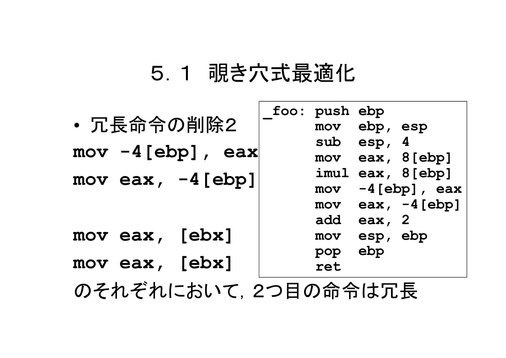
原資料で挙げられている代表的なパターンを、自作の例で1つずつ確認します（変数・レジスタは原資料とは別の組み合わせにしています）。
パターン1: 冗長命令の削除
結果を変えない演算（0を足す、1を掛けるなど）や、自分自身への代入は削除できます。ただし、フラグの変化や符号拡張を利用している場合は削除できないことがあるため注意が必要、と原資料は明記しています。
; before
add edx, 0
imul ecx, 1
mov ebx, ebx
; after（3命令とも削除できる）
また、メモリに書き込んだ直後に同じ場所から読み戻す命令や、同じメモリを続けて読む2命令目も冗長です。
; before
mov -8[ebp], eax
mov eax, -8[ebp] ; ← eaxはすでにこの値。2命令目は冗長
; after
mov -8[ebp], eaxパターン2: 専用命令による置換
汎用的な演算命令が、より短い専用命令に置き換えられる場合があります。
; before ; after
add [edi], 1 inc [edi]
sub ecx, 1 dec ecx
imul edx, 8 shl edx, 3 ; 8 = 2^3 なので3ビットシフトに置換パターン3: 移動命令後の置換
ある値をメモリに書き込んだ直後にそのメモリを読む命令があれば、メモリを読まずに元のレジスタをそのまま使うよう置換できます。
; before
mov -12[ebp], ecx
imul edx, -12[ebp]
; after
mov -12[ebp], ecx
imul edx, ecxパターン4: 冗長な分岐命令の削除
ジャンプ先が直後のラベルであるような無条件ジャンプ（jmp L1; L1:）は、そのまま削除できます。
; before
jmp L1
L1: ...
; after
L1: ...補足: 原資料には、条件分岐の直後に無条件分岐があり、その無条件分岐の飛び先の直後に条件分岐の飛び先ラベルが来る、というより複雑なパターン（jcc L2 / jmp L3 / L2:をjcc L3に短縮するような形）も示されていますが、原文のレイアウト抽出が崩れており正確な条件までは本ページの範囲では確定できません。詳しくは原資料のp009（md/sources/5.md）の図を直接確認してください。
パターン5: 到達不能命令の削除
無条件ジャンプの直後で、かつどこからも参照されないコードは、絶対に実行されないため削除できます。
; before
jmp L4
add ebx, 3
neg ebx
L5:
; after
jmp L4
L5:add eax, 0は値を変えなくてもフラグレジスタは変化するため、直後にそのフラグを使う命令（jccなど）があれば単純には削除できません。3. 定数計算の畳込みとループ不変式の移動
コンパイル時に値が確定する計算（定数どうしの演算）は、実行時に計算せず、コンパイル時に計算してしまってコードに直接埋め込むことができます。例えばc = 60 * 60 * 24;は、実行時には計算されず次のようになります。
mov loc(c), 86400この畳込みは、一度代入されたら値が変わらない「定数変数」についても適用できますが、原資料はポインタ変数経由で書き換えられている可能性があるため注意が必要だと述べています。
また、ループの中で毎回同じ値になる計算（ループ不変式）は、ループの外に移動できます。ループ内でkとmが変化しないなら、次のように書き換えられます。
; before
while (i < n) { z = k * m + i; ... i++; }
; after
tmp = k * m;
while (i < n) { z = tmp + i; ... i++; }4. 分岐命令の最適化（鎖状分岐）
条件分岐の飛び先ラベルの直後に、無条件分岐だけが置かれている場合（＝そのラベルに来ても、結局別の場所へさらに飛ぶだけの場合）、最初の条件分岐の飛び先を、その無条件分岐の飛び先そのものに書き換えることで、実行時に無駄な「二段飛び」を1段に減らせます。
; before
jne L1
...
L1: jmp L2
...
; after（このjneの飛び先だけをL2に直接書き換える。L1: jmp L2 自体は他から参照されていれば残す）
jne L2
...
L1: jmp L2
...5. レジスタ変数: 参照回数で優先順位をつける
関数本体の計算で使い切らずに余ったレジスタがあれば、頻繁に読み書きされる局所変数や引数をメモリではなくレジスタに割り当てることで、メモリアクセスを減らせます。どの変数を優先的にレジスタへ割り当てるかは、その変数の参照回数（代入・参照の合計回数）の見積りに基づきます。原資料の見積りルールは次の通りです。
- 代入は1回、参照は1回とカウントする。
- ループ中の参照は、ループの反復回数をKとして推定する。
- 条件文（if）中の参照は、両方の分岐が均等な確率で実行されると仮定し、
(eでの参照回数) + ((s1での参照回数)+(s2での参照回数))/2のように按分する。
この方法を、自作の例 while (i < limit) { total = total + step; i = i + step; }（ループ回数をKとする）に適用してみます。while文の条件はループ本体がK回実行されるなら、真と判定される回数がK回、偽と判定されて抜ける回数が1回で、合計K+1回評価されます。
i: 条件i < limitで毎回参照（K+1回）。本体のi = i + stepでは1回参照＋1回代入（2回）がK回。合計 (K+1) + 2K = 3K+1。limit: 条件でのみK+1回参照、代入はなし。合計 K+1。total: 本体のtotal = total + stepで1回参照＋1回代入（2回）がK回。合計 2K。step: 本体の2つの式でそれぞれ1回ずつ参照（2回）がK回。合計 2K。
このように、ループ中で条件式に使われる変数（この例ではi, limit）は「K+1回」、更新のように読み書き両方が発生する変数は「2回×反復回数」として数える、という数え方が一貫していることが確認できます。参照回数が最も多いと見積もられた変数から優先的にレジスタへ割り当てます。
6. 関数フレームの省略
通常、関数の先頭ではpush ebp; mov ebp, espでスタックフレームを作り、末尾でmov esp, ebp; pop ebpで元に戻します。しかし、関数の実行中にesp（スタックポインタ）の値が変化しない（局所変数の追加や関数呼出しによるpushがない、など）場合は、このフレーム作成・破棄そのものを省略でき、代わりにebp相対のアドレスをすべてesp相対のアドレスに置き換えます。
自作例として、局所変数を持たない2引数の関数 int g(int a, int b) { return a + b; } を考えます。フレームあり版は次の通りです。
_g: push ebp
mov ebp, esp
mov eax, 8[ebp]
add eax, 12[ebp]
mov esp, ebp
pop ebp
retフレームを省略するとpush ebp; mov ebp, esp; mov esp, ebp; pop ebpの4命令が消えるだけでなく、番地の基準がずれるため、オフセットの数値そのものも4だけ小さくなります（push ebpがなくなった分、呼出し直後のespは元のebpより4バイト上にあるため）。
_g: mov eax, 4[esp]
add eax, 8[esp]
retint foo(int x){int y=x*x; return y+2;}）では局所変数y用にsub esp,4で4バイト確保しており、その4バイトがちょうどpush ebp省略分を相殺するため、xのオフセットの数値は8[ebp]→8[esp]のまま変わりません（p022〜023）。一方、本ページの自作例のように局所変数がなくsub espを行わない関数では、オフセットは4だけ減ります（8[ebp]→4[esp]）。「フレーム省略＝オフセット4減らす」と機械的に覚えるのではなく、局所変数用に確保するsub espの量によってオフセットの変化幅が変わる、という点を理解しておく必要があります。7. 生存解析: 使われない代入を消す
ある変数への代入の後、その値が一度も参照されずに（別の値で上書きされるなどして）失われるなら、その代入自体を削除できます。これが生存解析（変数が「生きている」区間を解析し、生きていない代入・割当てを取り除く手法）です。
自作例として int h(int x) { int y = x + 1; y = x * 2; return y; } を考えます。最初のy = x + 1;は、次の行でyがすぐに上書きされ、一度も参照されないまま失われるので、生存解析によって丸ごと削除できます。
; before（yへの最初の代入を含む素朴なコード、フレーム省略済みとする）
mov eax, 4[esp]
add eax, 1
mov ebx, eax ; y = x+1 だが、一度も読まれずに次で上書きされる（＝死んだ代入）
mov eax, 4[esp]
imul eax, 2
mov ebx, eax ; y = x*2
mov eax, ebx
ret
; after（生存解析で死んだ代入を除去し、さらに覗き穴式最適化でmov eax,ebxも整理）
mov eax, 4[esp]
imul eax, 2
retこの例のように、生存解析と覗き穴式最適化は組み合わせて使われることが多く、原資料の演習問題２（md/sources/5.mdのp025〜p032）でも、覗き穴式最適化→関数フレームの省略→生存解析、という順番で段階的にコードが整理されていく様子が示されています。
md/sources/3.md, 4.md, 5.md）の中には、GC（グラフ彩色によるレジスタ割当てと推測されます）やICCのアルゴリズムに関する記述は見当たりませんでした。捏造を避けるため、本ページではこの内容の解説は行いません。おそらく別回（本担当範囲外の資料）で扱われている内容と考えられるため、該当する原資料の該当ページを別途確認してください。この回のまとめ: 最適化は「覗き穴式最適化（隣接命令のパターン置換を収束するまで繰り返す）」「定数計算の畳込みとループ不変式の移動」「分岐命令の鎖状短縮」「レジスタ変数（参照回数に基づく優先割当て）」「関数フレームの省略（espが不変なら可能、オフセットの変化幅はsub espの量次第）」「生存解析（使われない代入の削除）」の6つの技法から成ります。覗き穴最適化と必要レジスタ数の見積り（言語処理系４）は特に出題実績が高く、実際に手を動かしてbefore/afterのアセンブリコードを書けるようにしておくことが重要です。GC/ICCアルゴリズムは出題実績がある一方、本担当資料（３・４・５）内には記述が見当たらないため、他の回の資料を確認する必要があります。
原文（全ページのテキストと画像）は md/sources/5.md を参照してください。